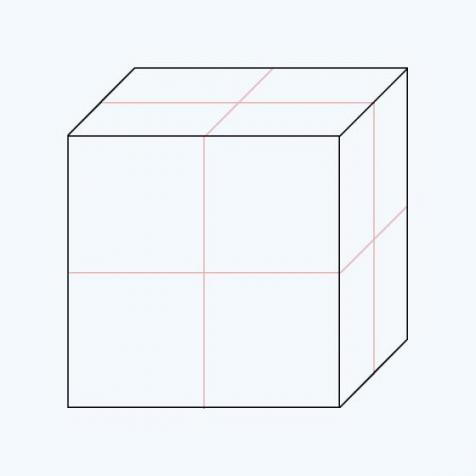
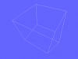

Vous aimeriez programmer des applications 3D mais les APIs bas niveau vous font peur ? Vous avez toujours été nul en math et quand on vous parle de matrices vous fuyez en courant ?
Autant de raisons de se lancer dans l'apprentissage d'Irrlicht, un moteur 3D libre, gratuit et performant. Il vous permettra de débuter dans la programmation d'applications 3D temps réel sans trop grosse prise de tête puisqu'il va s'occuper à votre place du fenêtrage, des mathématiques, de la prise en charge des ressources externes, etc...
Quelques screenshots d'applications réalisées avec Irrlicht.
Commençons comme il est d'usage par un chapitre d'introduction qui va se contenter de présenter les tenants et aboutissants du sujet de ce tutoriel. J'ai nommé les moteurs 3D, et plus particulièrement Irrlicht.
Si vous savez déjà de quoi il s'agit ou que vous n'avez pas besoin de le savoir, lisez-le quand même. Juste pour être sûr... ;)
Question plus simple qu'il n'y parait. Pour faire court, un moteur 3D est une bibliothèque logicielle qui va s'occuper de tout ce qui concerne l'affichage à l'écran, les calculs dans l'espace, la lecture des fichiers externes, etc... dans une application 3D. D'ailleurs on parle aussi souvent de moteur graphique, l'aspect 3D n'est pas forcément le cœur. Ça dépend de quelle manière on voit les choses.
Maintenant que c'est dit, il reste quand même quelques points à éclaircir. Particulièrement pour les personnes qui ne sont pas très familières avec le monde de la programmation. Je rappelle ceci-dit qu'il faut avoir un certain niveau en C++ pour suivre ce tutoriel dans de bonnes conditions.
Intéressons nous de plus près au concept de bibliothèque logicielle (library en anglais). Il s'agit comme son nom l'indique d'une collection de fonctions logicielles regroupées dans un ou plusieurs fichiers. Le programmeur qui utilise une bibliothèque peut donc faire appel à ces fonctions dans les programmes qu'il crée. Par exemple avec Irrlicht, il suffit de faire appel à quelques fonctions pour créer une fenêtre et l'afficher à l'écran. Puis à quelques autres pour charger un personnage en 3D et l'afficher dans cette fenêtre, etc...
En programmation le niveau désigne la proximité avec la machine. Plus un langage ou une bibliothèque est bas niveau et plus elle est proche du fonctionnement de la machine. Irrlicht, ou n'importe quel moteur 3D en général, est très haut niveau. Hormis les programmeurs bidouillant l'intérieur des moteurs, la plupart ne savent pas comment ça marche à l'intérieur et se contentent d'utiliser l'interface de programmation fournie telle quel.
Cette interface justement porte un nom qui va revenir très régulièrement dans ce tutoriel : API, pour Application Programming Interface. Comme son nom l'indique une API est l'interface par laquelle le programmeur va "communiquer" avec la bibliothèque. Elle est constituée de toutes les fonctions "publiques" librement accessibles.
Il existe des APIs très bas niveau qui accèdent directement ou presque aux éléments hardware, aux éléments physiques de la machine. En les utilisant comme interface on peut donc accéder indirectement à ces éléments hardware. Ces manipulations sont particulièrement délicates dans le cas d'un moteur portable (i.e. qui fonctionne sur les principaux systèmes d'exploitation), car il faut alors adapter certaines parties du code spécifiques à chaque OS.
Le fenêtrage et la gestion de périphériques est spécifique à chaque OS par exemple. Sous Windows il faut utiliser la WinAPI alors que sous Linux on utilise généralement X Window.
Voici un petit graphique récapitulatif de tout ce que nous venons de voir par niveaux :
Rentrons un peu plus dans le vif du sujet avec une présentation du moteur qui nous intéresse : Irrlicht. Nous n'allons pas tout de suite voir comment l'utiliser mais plutôt commencer par le décrire. Allez hop, trois petits screens au passage pour vous faire envie ^^ (d'autres sont disponibles dans la galerie sur le site officiel [21-1]) :
(Cliquer pour agrandir)
Un peu de culture
Le projet Irrlicht débute en 2002 en Autriche. C'est Nikolaus Gebhardt (en photo à droite), programmeur de métier, qui eut l'idée de se lancer dans la réalisation d'un moteur 3D. Depuis le moteur en est à la version 1.7 et de très nombreuses améliorations ont été apportées, dont on peut voir la liste sur le site officiel [21-1].
L'équipe s'est également agrandie puisqu'il y a actuellement heu... trop de membres pour que je les compte. ^^ Mais la liste en est également visible sur le site. Et pour finir une anecdote à ressortir pour briller en société : irrlicht signifie "feu follet" en allemand.
Un peu de technique
Maintenant que nous savons un peu mieux ce qu'est un moteur 3D, une question doit sûrement vous brûler les lèvres :
Pourquoi existe-t-il plusieurs moteurs 3D s'ils font tous la même chose ? Et pourquoi choisir Irrlicht plutôt qu'un autre ?
Tout d'abord il faut bien se rendre compte que tous les moteurs 3D ne font pas la même chose. Ils ont la même fonction, mais certains sont plus performants ou complets que d'autres. Cela doit d'ailleurs vous paraître une évidence si vous jouez régulièrement à des jeux vidéos actuels. Quant au choix d'Irrlicht plutôt qu'un autre moteur, voici quelques arguments intéressants :
Il est libre et multi-plate-formes. Ce qui signifie que le code source est librement téléchargeable, utilisable comme bon vous semble dans le respect de la licence, et fonctionne sous tous les OS ou presque.
Il est codé en C++ et complètement orienté objet. Ce qui lui permet d'être plutôt intuitif et très bien organisé.
Il gère nativement beaucoup de formats de fichiers. Que ce soit fichiers images , modèles 3D ou même archives [21-6]. Ce qui évite d'avoir recours à des loaders externes.
Il gère nativement plusieurs effets intéressants. Comme des systèmes de particules, génération de terrains via heightmap, etc... Ce qui évite d'avoir à les coder soi-même.
Il est relativement simple à mettre en place et à maîtriser. Grâce notamment à sa très bonne documentation et sa communauté large et active.
Irrlicht et Ogre 3D
La plupart du temps, quand quelqu'un a envie de coder une application 3D en C++ sans réinventer la roue, il en arrive souvent à ce dilemme cornélien : Irrlicht ou Ogre 3D[21-4]. Pour avoir utilisé les deux en profondeur, la principale différence se situe dans l'opposition puissance/simplicité. Irrlicht est de loin plus simple qu'Ogre, mais en contrepartie Ogre est de loin plus puissant qu'Irrlicht. Par exemple Irrlicht est relativement monolithique, le moteur reste complet peu importe ce qui sera utilisé au final dans l'application, ce qui permet une très grande simplicité dans la mise en place d'un projet. D'un autre coté Ogre est beaucoup plus modulaire, utilisant un système de plugins qui permet de n'utiliser que ce dont on a besoin, mais qui est du coup plus complexe à mettre en place. Si vous avez un doute sur le moteur que vous voulez utiliser ou que vous êtes juste curieux, le meilleur moyen de se faire une idée est de tester les deux. Il existe justement un tutoriel concernant Ogre 3D sur ce site même [21-5], n’hésitez pas à y jeter un œil. Contrairement à ce que laissent parfois penser les échanges sur les forums, utiliser un moteur ne condamne pas à rejeter les autres, il n'y a pas de dogme à adopter. Prenez le temps nécessaire pour "sentir" celui qui vous plait le plus ou qui correspond le mieux à vos besoins avant de faire un choix (qui ne sera pas définitif de toute manière). ;)
Ce chapitre a pour objectif d'installer Irrlicht et de vérifier qu'il fonctionne. Théoriquement ce n'est pas bien compliqué. Toutefois si vous rencontrez un problème que vous n'arrivez pas à résoudre après avoir bien relu les différentes étapes, vous pouvez le poster sur les forums pour avoir de l'aide.
Comme la plupart des grosses bibliothèques logicielle, Irrlicht est contenu dans un SDK, un Software Development Kit. Il s'agit en clair d'un dossier qui va contenir tout ce dont on a besoin pour développer des applications avec cette bibliothèque. Première étape donc, télécharger la dernière version du SDK à cette adresse : http://irrlicht.sourceforge.net/downloads.html.
Une fois que vous l'avez récupéré et décompressé, jetons un œil à ce qu'il contient :
bin : les bibliothèques dynamiques et les binaires des exemples du SDK.
changes.txt : est ce qu'on appelle le changelog, une archive contenant tous les changements du moteur depuis sa première release (sortie).
doc : une copie intégrale de la documentation du moteur.
examples : les codes sources de petites applications illustrant les fonctionnalités du moteur et les tutoriels associés.
include : les principaux headers du code source.
lib : les bibliothèques statiques.
media : des images, textures modèles 3D, etc...
readme.txt : quelques informations sur le SDK
source : le code source du moteur
tools : quelques utilitaires comme un visualiseur de modèle 3D, un éditeur de scène, etc...
Pour l'installation proprement dite, seuls 3 dossiers nous intéressent :
bin
include
lib
Dossier bin
Comme nous l'avons vu plus haut, celui-ci contient les bibliothèques dynamiques. Les fameuses dll sous Windows. Pour les utilisateurs de cet OS justement, il vous suffit de choisir le dossier correspondant à votre configuration et de copier le fichier .dll quelque part. Vous devrez le mettre dans le même dossier que vos fichiers exécutables (.exe) pour que ceux-ci fonctionnent.
Pour les utilisateurs de GNU/Linux c'est encore plus simple, il n'y a pas de bibliothèque dynamique. Ce qui signifie que tout sera compilé en statique dans le programme final. Rien à récupérer dans ce dossier donc.
Dossier include
Comme vous pouvez le constater, le dossier include ne contient pas de sous-dossiers. Les headers sont les mêmes pour tout le monde. Remarquez au passage le fichier irrlicht.h, c'est lui que nous allons inclure dans tous nos programmes. Si vous l'ouvrez vous pourrez voir qu'au début il inclut tous les autres headers du dossier. Ce qui signifie qu'il suffit de rajouter une ligne pour pouvoir utiliser tout le moteur :
#include <irr/irrlicht.h>
Il vous faut maintenant copier l'intégralité du dossier dans le dossier include de votre compilateur. Sous GNU/Linux il s'agit généralement du dossier /usr/include. Pour éviter d'en "mettre partout", il est préférable de créer un dossier spécifique nommé irr par exemple (d'où le irr/irrlicht.h de l'inclusion).
Dossier lib
Dernière étape avec le dossier lib qui contient les bibliothèques statiques. Les utilisateurs de Windows connaissent le chemin, il suffit de choisir le dossier correspondant à sa configuration puis d'en copier le contenu dans le dossier lib de son compilateur.
Les utilisateurs de GNU/Linux en revanche vont devoir faire quelques efforts. En effet si vous regardez dans le sous-dossier Linux, vous verrez que celui-ci est vide. Et qui dit pas de bibliothèque statique dit pas de chocolat compilation possible. Il va donc vous falloir recompiler le moteur pour obtenir le précieux fichier.
Pas de panique, vous trouverez en annexe un petit chapitre expliquant la marche à suivre. Il peut être utile par ailleurs de recompiler le moteur s'il vous prends un jour l'envie de modifier quelque chose dans le code source par exemple. Auquel cas la bibliothèque statique ne sera plus valable.
Une fois que vous avez votre fichier (qui devrait s'appeler libIrrlicht.a), il suffit de le copier dans le dossier /usr/lib/. Et voilà ! Irrlicht est maintenant installé. Ce n'était pas si dur, si ? ;)
Commencez donc par ouvrir votre IDE favori et créez-y un nouveau projet. Même si l'IDE possède des modèles spécifiques à Irrlicht, il serait préférable de partir sur un projet vierge de base. Ensuite, quel que soit le code présent dans le fichier main.cpp, il est bon de le remplacer par le code suivant pour tester que l'environnement fonctionne sans Irrlicht :
Rien de nouveau j'espère, ce code affiche simplement "Hello world!" dans la console. Au cas où un problème survient à ce niveau, l'installation de votre IDE est en cause. Partons du principe que tout fonctionne et ajoutons la ligne qui va inclure tous les headers nécessaires à l'utilisation d'Irrlicht :
#include <irr/irrlicht.h>
Vient enfin l'étape la plus complexe : le "linkage". L'opération consiste à "linker" (lier) la bibliothèque statique d'Irrlicht au compilateur. Il faut donc indiquer au linker le fichier .a ou .lib que nous avons mis tout à l'heure dans le sous-dossier lib du compilateur via l'IDE.
Sous code::blocks par exemple, la manipulation à effectuer est Project->Build options->Linker Settings->add. Il faut ensuite choisir le fichier .a ou .lib. Il est toutefois possible que ce fichier seul ne suffise pas. Bien souvent il faut également indiquer les bibliothèques statiques d'OpenGL, GLU ou encore Xfree86. Si le compilateur vous renvoie un message d'erreur concernant ce problème, le nom de la bibliothèque manquante est souvent indiqué plus ou moins clairement.
Sans IDE
Sans IDE c'est encore plus simple. Utilisez votre éditeur favori pour les codes sources, puis utilisez g++ pour compiler. Si vous avez correctement suivi la partie sur l'installation et que votre configuration est bien faite par ailleurs, la commande suivante devrait faire l'affaire :
g++ source.cpp -lIrrlicht -lGL -o executable
Où source.cpp est bien sûr le nom du fichier source et executable le nom du binaire. Selon votre plateforme il faudra peut être linker plus de bibliothèque que ces 2 là. L'idéal est de se concocter un petit makefile[10-2] pour pouvoir gérer facilement les options de compilation et les projets à multiples fichiers sources. Faîtes vous plaisir. ;)
Ouch ! Oui je sais ça fait peur, mais pas de panique on va tout reprendre point par point. La première des choses est encore de savoir à quoi sert cette ligne. En fait elle va créer un périphérique de sortie, aussi appelé contexte d'affichage, ou plus communément... fenêtre. Qui sera un pointeur de type irr::IrrlichtDevice, et que nous appellerons simplement device. Cette ligne permet donc de créer la fenêtre dans laquelle votre application va se dérouler (et bien plus encore mais on verra ça plus tard ;) ).
Cela a dû vous sauter aux yeux, le namespace irr:: revient sans arrêt. La raison en est simple : dans Irrlicht tout est contenu dans le namespace irr. Personnellement je préfère le retaper à chaque fois mais si cela vous est vraiment insupportable vous pouvez toujours ajouter la ligne suivante au début de votre code :
using namespace irr;
Ce qui est impressionnant dans cette fonction c'est le nombre de paramètres qu'elle prend, 7 en tout. Examinons sa déclaration plus en détail :
deviceType : désigne l'API graphique avec laquelle va s'interfacer Irrlicht. Nous utiliserons OpenGL tout au long du tutoriel, mais on peut aussi choisir Direct3D par exemple en mettant la valeur EDT_DIRECT3D9.
windowSize : la taille de la fenêtre. Tout est dit ! Avec le code indiqué plus haut, on crée une fenêtre de 800 par 600 pixels.
bits : détermine le nombre de bits par pixels. En mettant 32, on aura 232 valeurs différentes possibles par pixel.
fullscreen : un booléen qui indique si on veut faire du plein écran ou pas. Pour la valeur true l'application sera en plein écran, et pour false la fenêtre sera de la taille définie plus haut.
stencilbuffer : un autre booléen qui indique lui si on active le stencil buffer [32-2] ou pas. Il est actif pour true.
vsync : toujours un booléen. Celui-ci sert à activer la synchronisation verticale [31-3]. Pas de mystère, elle est active pour true.
receiver : permet d'associer un capteur d'événements au device (0 signifie qu'on n'associe rien). Nous verrons de quoi il s'agit dans un prochain chapitre.
Reprenons notre première ligne, on s'aperçoit qu'on a créé une fenêtre utilisant OpenGL de 800 x 600 pixels avec 32 bits par pixel ayant un stencil buffer. Il est intéressant de noter que tous les paramètres de cette fonction possèdent des valeurs par défaut (comme indiqué dans la documentation [21-2]).
Les éléments de base
Maintenant que nous avons le device (qui est le véritable nom de la "fenêtre"), nous allons instancier la classe qui communique avec les API 3D bas niveau (OpenGL dans notre cas), j'ai nommé le video driver. C'est lui qui va gérer le rendu par exemple :
Continuons en créant le graphe de scène, aussi appelé scene manager, que nous aborderons plus en détails dans le prochain chapitre. C'est lui qui va nous permettre de gérer tout ce qui est contenu dans la scène :
Il ne reste plus maintenant qu'à afficher le rendu. Pour ce faire nous utilisons une boucle qui sera parcourue de manière infinie tant qu'on décide de ne pas fermer l'application :
Quelques explications s'imposent. La condition utilisée pour la boucle est le résultat de la méthode run du device. Celle-ci renvoie false quand Irrlicht détecte un signal d’arrêt et true dans tous les autres cas. Ce qui veut dire que cette boucle tournera indéfiniment jusqu'à ce qu'on mette fin au programme.
Il est aussi intéressant de noter que cette boucle ne gère absolument pas le temps. Ce qui signifie qu'une fois lancée, l'application utilisera toute la puissance disponible de votre processeur. En soi ça n'a rien de gênant mais ça peut surprendre.
Cette fonction permet d'effectuer un rendu. Elle ne le fait pas elle-même mais est indispensable. En gros elle prépare le terrain pour le nouveau rendu. Voyons un peu son prototype :
backBuffer : il s'agit d'un booléen qui permet d'indiquer si on veut effacer le back buffer[32-3] ou pas. Pour faire court disons que si on ne l'efface pas des réminiscences se créeront là où il n'y a rien à afficher.
zBuffer : encore un booléen. Celui-ci indique si on désire effacer le contenu du Z-Buffer[32-1].
color : ce paramètre indique la couleur que va avoir le fond de l'écran. C'est une notation RGB classique, mais méfiance toutefois, ici le premier nombre indique la composante alpha. Cet exemple donne donc un fond blanc et opaque. Nous aurons l'occasion de revenir sur les couleurs par la suite.
videoData : permet de faire du multi-fenêtrage. Nous n'y toucherons pas, donc on laisse la valeur par défaut.
sourceRect : permet de n'afficher qu'une partie du rendu. Là encore nous n'y toucherons pas.
Maintenant les deux dernières lignes :
sceneManager->drawAll ();
driver->endScene ();
La méthode drawAll du sceneManager va s'occuper du rendu de tout ce qui est géré par le scene manager. Donc de tout ce qui se trouve dans la scène. Et enfin la méthode endScene du driver va afficher ledit rendu à l'écran. Sans elle rien ne s'afficherait.
Pour terminer l'application proprement il nous reste à mettre une dernière ligne, hors de la boucle. Elle permet de détruire le device et donc de libérer la mémoire :
device->drop ();
Voici un récapitulatif du code que vous devriez avoir:
#include <irr/irrlicht.h>
int main(void) {
irr::IrrlichtDevice *device = irr::createDevice( // creation device
irr::video::EDT_OPENGL, // l'API est OpenGL
irr::core::dimension2d<irr::u32>(800,600), // taille de la fenetre 800x600
32, false, true, false, 0);
irr::video::IVideoDriver* driver =
device->getVideoDriver(); // creation driver
irr::scene::ISceneManager *sceneManager =
device->getSceneManager (); // creation scene manager
sceneManager->addCameraSceneNode (0, // ajout camera fixe
irr::core::vector3df (0,0,0),
irr::core::vector3df (5,0,0));
while (device->run()) { // la boucle de rendu
driver->beginScene( // demarre le rendu
true, // clear back-buffer
true, // clear z-buffer
irr::video::SColor(255,255,255,255)); // fond blanc
sceneManager->drawAll (); // calcule le rendu
driver->endScene (); // affiche le rendu
}
device->drop (); // liberation de la memoire
return 0;
}
Un coup de compilateur et que voyez-vous apparaître sous vos yeux ébahis ? Une fenêtre de 800 par 600 toute blanche. Rassurez-vous c'est normal.. Ce code peut être considéré comme le code minimal d'une application Irrlicht, il ne fait rien de particulier et sert de base pour le reste.
Dans le chapitre suivant le prochain nous ajouterons quelques lignes pour ajouter un cube et commencer à faire des choses un peu plus palpitantes. ^^
Voici un chapitre entièrement théorique dédié aux structures de données, et plus particulièrement aux arbres. D'une manière générale ceux-ci sont très importants en programmation, mais en ce qui nous concerne ils sont absolument indispensable puisque c'est grâce à un arbre nommé graphe de scène qu'Irrlicht organise tout le contenu d'une scène 3D.
Pour ceux qui ne le savent pas déjà, une structure de données est juste une technique de programmation permettant d'organiser des données d'une certaine manière dans le but d'y accéder plus facilement et / ou plus rapidement.
Un tableau par exemple est une structure de données. En effet dans un tableau (je parle d'un tableau en langage C++ bien sûr) les données sont rangées de façon contiguë, ce qui permet de les retrouver plus facilement. Il est bien plus simple de gérer un tableau de 20 cases que de gérer 20 variables indépendantes.
Il existe beaucoup de structures de données différentes en C++ dont la plupart n'existent pas nativement. La bibliothèque tierce Boost par exemple contient énormément de conteneurs permettant d'organiser des données de manière intéressante [33-2].
Mais pour l'instant donc, intéressons nous aux arbres binaires. La première chose à savoir est qu'ils portent bien leur nom dans la mesure où il s'agit d'une structure de donnée arborescente. C'est à dire qui peut être représentée avec des feuilles, des nœuds et une racine. Voici à quoi ressemble un arbre binaire graphiquement :
Et maintenant un peu de vocabulaire. Le rond rose est la racine de l'arbre. Un arbre n'a toujours qu'une seule et unique racine. Tous les ronds violets sont appelés nœuds. Ils dépendent d'un nœud (ou d'une racine) au dessus d'eux mais ont également 1 ou 2 fils. Quand un élément de l'arbre possède un ou deux éléments inférieurs, ceux-ci sont appelés fils. Et comme il y a déjà assez de mots à retenir comme ça, on les appelle chacun gauche et droit.
Vous l'aurez deviné, dans l'autre sens on appelle l'élément père. Le rond violet le plus à gauche est donc le père du rond vert le plus à gauche, qui est son fils gauche. Et les ronds verts sont les feuilles bien sûr. Elles portent bien leur nom puisque ce sont ce sont les extrémités de l'arbre. Ce qui implique qu'elles n'aient pas de fils (sinon ce serait des nœuds ;) ).
La distance entre la racine et la dernière feuille (le nombre de niveaux) est appelée la hauteur de l'arbre. Ici nous avons un arbre de hauteur 4. Et la distance entre la racine et un nœud est appelée profondeur.
Voilà vous connaissez maintenant l'essentiel sur les arbres binaires. Il existe de nombreuses autres choses à savoir sur le sujet [33-1] mais ce n'est pas particulièrement important pour ce tutoriel. Le principal est que vous ayez compris le concept et les principaux termes qui s'y rapportent.
Un octree est également une structure de données arborescente. La plupart du temps elle est utilisée pour partitionner l'espace. C'est à dire diviser un espace en morceaux plus petits, pour réduire les temps de calculs notamment.
Si nous regardons de plus près le mot OCTREE, on s’aperçoit qu'il est composé des deux parties suivantes :
OCT : qui désigne un truc à 8 trucs ^^ . Comme un octogone, une surface à 8 cotés.
TREE : qui signifie tout simplement "arbre" en anglais.
Un octree est donc tout simplement un arbre dont les noeuds ont 8 fils. De manière graphique ça donne le résultat suivant :
Je suppose que vous comprendrez pourquoi je n'ai pas représenté le second niveau... L'avantage d'avoir 8 fils par nœuds devient évident quand on pense à la manière dont est stocké un espace en informatique. En clair, il s'agit systématiquement d'un parallélépipède rectangle, qu'il est facile de diviser en 8 parts égales. Comme sur l'images suivante :

Si vous avez bien suivi vous devriez même être capable de me donner la hauteur de l'arbre. Niveau 1 en effet, l'espace de la scène est divisé une fois par 8. Maintenant que l'espace est partitionné en 8 le moteur 3D va pouvoir réduire les temps de calcul.
Imaginez par exemple que la caméra soit placée dans la scène de telle manière que 5/8 de l'espace total lui soit cachés. Au moment du rendu, un petit test sur l'octree et hop, on oublie ces 5/8. On ne calcule le rendu que pour les 3/8 visibles, ceux qui apparaîtront à l'écran. On peut également s'en servir pour faire de la détection de collision d'autres choses encore.
Rien n'empêche ensuite d'augmenter le niveau niveau de l'arbre. On peut avoir un octree de taille très élevée, le principe ne change pas. Voici ce que donne un octree d'une hauteur de 2 (je n'ai redivisé que le cube ayant le plus de faces visibles... :-° ) :
Il y a quand même une petite remarque à faire sur la hauteur que peut avoir un octree. En effet, diviser l'espace c'est bien, mais il arrive un moment où ça devient contre-productif. Pour reprendre l'exemple de la caméra, si on fait un octree d'une hauteur de 4, on aura un espace divisé en 4096 (84). Imaginons que la caméra n'ait dans son champ que 2500 des 4096 morceaux.
Si nous augmentons le niveau de l'octree cela nous donne 32768 morceaux. Il est possible que les quelques morceaux que l'on ne calculerais pas avec une hauteur de 5 vis à vis d'une hauteur de 4 soient négligeables. Tout dépend de la taille de votre espace et de ce qu'il y a dedans. Il est possible aussi que le temps qu'on passe à parcourir l'octree soit supérieur au temps qu'on aurait gagné en le faisant plus petit.
Quoi qu'il en soit tout cela ne nous concerne pas vraiment pour l'instant puisqu'une fois encore, Irrlicht va gérer tout ça en interne et nous n'aurons pas besoin de nous en occuper. :)
Abordons maintenant ce qui nous intéresse le plus avec l'outil qui organise absolument tout ce qui est mis dans une scène Irrlicht : le graphe de scène (que j'appellerai aussi et surtout scene manager). Quand on a compris le principe des arbres, le scene manager est d'une simplicité et d'une efficacité effarante. ^^
La première chose à savoir est qu'il s'agit là aussi d'une structure de données arborescente. Mais alors que les arbres binaires ne pouvaient avoir que deux fils par noeuds et les octrees 8, le scène manager n'a pas de nombre limite. Regardons un exemple :
Alors, vous comprenez déjà un peu mieux ? Le scene manager sert à organiser tout ce qui compose la scène de manière hiérarchique. Et pas seulement ce qui apparaîtra à l'écran comme vous pouvez le voir avec le node "camera". La racine de l'arbre englobe toute la scène, puis chaque nœud correspond à un élément précis.
Un autre élément très important concernant le scene manager est le fait que les fils héritent des propriétés spatiales de leur père. Et nous nous servirons principalement de cela pour faire des modifications sur les positions et orientations des nœuds. En effet à chaque nœud est associée une matrice qui représente ses transformations par rapport à la matrice de son père. Et à chaque fois que la matrice d'un noeud change, tous ses fils subissent donc automatiquement les transformations.
Ce qui signifie que si on effectue une rotation de 90° sur le nœud "salle", les nœuds "armoire", "objet" et "perso" pivoteront eux aussi de 90°. En revanche si on effectue une rotation de 90° sur le nœud "armoire", seul le nœud "objet" pivotera aussi de 90°. Et c'est là qu'on s'aperçoit qu'il ne faut pas faire n'importe quoi dans son scene manager. Si vous faites en sorte qu'une salle dépende d'un objet qui s'y trouve plutôt que l'inverse, il risque de vous arriver des bricoles... :D
Dans ce chapitre nous allons voir les derniers éléments manquant avant de pouvoir réaliser notre première véritable scène 3D. Humble certes, mais véritable quand même. :D
Lisez le attentivement dans la mesure où la plupart de ce qui s'y trouve est fondamental et nous servira pour toute la suite du tutoriel dans la compréhension de ce qui se passe.
Comme nous l'avons vu lors du précédent chapitre, le scene manager va gérer le contenu de la scène. Pour ce faire il stocke chaque élément dans un nœud (node) et organise ceux-ci de manière arborescente. Un scene node (littéralement "nœud de scène") est donc un élément du scene manager qui va contenir un objet de la scène.
Il existe beaucoup de types de scene node différents. Une caméra sera par exemple stockée dans un node de type ICameraSceneNode alors qu'une lumière sera stockée dans un node de type ILightSceneNode. Tous les scene nodes d'Irrlicht sont des dérivés d'une classe de base nommée ISceneNode, ce qui permet au scene manager de les gérer "simplement".
Ce qu'il faut retenir ici pour l'instant est que chaque élément de la scène est contenu dans un node et que c'est celui-ci qu'on manipulera la plupart du temps. Le node agit comme interface pour communiquer avec l'élément qu'il contient.
Organisation d'une scène
De par la nature arborescente du scene manager, chaque node doit posséder un node père et peut posséder un nombre potentiellement infini de node fils. Irrlicht met donc automatiquement en place un node servant de racine dans chaque scène. Celui-ci se nomme le root scene node, c'est le premier, tout en haut de la structure.
Lors de la création d'un scene node, le scene manager requiert un pointeur vers le père pour organiser les choses. Si on ne précise rien le node créé est automatiquement rattaché au root scene node. Certains types de node restent quasi-systématiquement au niveau de la racine. Les caméras par exemple ne dépendent que très rarement de quoi que soit.
Identification des nodes
Pour ajouter un node au scene manager, il faut systématiquement passer par une méthode de celui-ci, qui renverra un pointeur vers le node si tout se passe bien. La convention de nommage étant bien faite, le prototype d'une méthode d'ajout de node ressemblera toujours à ça :
I_X_SceneNode* ISceneManager::add_X_SceneNode (
ISceneNode* parent, // pointeur vers le noeud pere
s32 id) // numero d'identification du noeud
Ces deux arguments sont systématiquement présents, quel que soit le node à ajouter. Si la valeur 0 est passée pour parent, le node est automatiquement rattaché au root scene node. Nous reviendrons plus loin sur le numéro d'ID. Dans ce prototype les _X_ représentent le type de scene node. Par exemple pour une caméra statique cela donne la déclaration que nous avons croisé dans le deuxième chapitre :
ICameraSceneNode* ISceneManager::addCameraSceneNode (
ISceneNode* parent, // pointeur vers le noeud pere
core::vector3df& position, // position de la camera
core::vector3df& lookat, // point de mire de la camera
s32 id, // numero d'identification du noeud
bool makeActive) // true = rend la camera active
Cela nous laisse donc deux grandes façons de retrouver et d'accéder aux scènes nodes :
Par pointeurs : il s'agit de la méthode "classique". On crée une variable qui va contenir le pointeur renvoyé par la méthode ajoutant le node au scene manager. Ensuite il suffit de passer par ce pointeur pour appeler n'importe quelle méthode du node.
Par ID : il est possible de récupérer un node via le numéro d'ID qui est spécifié lors de sa création. Attention toutefois à ne pas déclarer deux nodes avec le même ID. De plus, l'ID de n'importe quel node est -1 par défaut lors de sa création.
Il existe bien d'autres méthodes pour récupérer un accès à un ou plusieurs nodes du scene manager, mais elles sont pour la plupart imprécises et difficiles à mettre en œuvre. Le plus simple reste généralement de récupérer le pointeur donné lors de la création et de le stocker quelque part où il est simple d'y accéder. En faire un attribut de classe par exemple.
Irrlicht déclare bien entendu énormément de classes, de structure, d'énumérations, etc... qui lui sont propres. Mais il redéfinit aussi une bonne partie des types de données natifs du langage C++ (int, long, etc...). De plus, il propose d'autres types basiques qui sont indispensables à l'utilisation du moteur. Regardons-y de plus près :
Types natifs
Pour des raisons de compatibilité maximale, Irrlicht encapsule les types natifs du C++. Ainsi quelle que soit la plateforme sur laquelle on compile et les APIs bas niveau utilisées, le code source sera compatible sans devoir changer quoi que ce soit. Voici une liste des types de variables de base les plus courants utilisés par Irrlicht :
c8 : caractère sur 8 bits
s8 : entier signé sur 8 bits
u8 : entier non-signé sur 8 bits
s16 : entier signé sur 16 bits
u16 : entier non-signé sur 16 bits
f32 : flottant sur 32 bits
s32 : entier signé sur 32 bits
u32 : entier non-signé sur 32 bits
f64 : flottant sur 64 bits
Couleur
Je rappelle brièvement pour ceux qui ne le savent pas déjà que la couleur est la plupart du temps définie en informatique par la notation RGB[31-4]. C'est à dire que n'importe quelle couleur est définie par la combinaison des trois couleurs de base : rouge, vert et bleu. Plus une quatrième composante alpha correspondant à la transparence.
Irrlicht propose donc une classe permettant d'exprimer une couleur dans une seule variable au lieu de 4. Il s'agit de irr::video::SColor[doc], que nous avons déjà croisé dans la boucle de rendu. Cette classe stocke les composantes de manière ARGB, c'est à dire que la transparence se trouve avant le rouge, puis le vert, puis le bleu. Le code suivant permet de créer une variable contenant une couleur :
irr::video::SColor color(0, 255, 255, 255);
Ici nous avons une variable color contenant un blanc totalement transparent. Pour avoir un bleu pur totalement opaque, il faut donner les valeurs suivantes :
irr::video::SColor color(255, 0, 0, 255);
Vecteurs 2D
Un vecteur représente une direction, un déplacement [52-1]. Graphiquement un vecteur 2D ressemble à ce qui est visible sur le graphique de droite. Cet exemple montre un vecteur ayant pour valeurs 1 en X (l'axe des abscisses) et 1 en Y (l'axe des ordonnées).
La classe définie par Irrlicht pour contenir les deux valeurs d'un vecteur en deux dimensions est irr::core::vector2d<T>[doc]. Vous aurez reconnu le template qui nous permet d'utiliser quasiment n'importe quel type de base vu plus haut pour les valeurs. Pour créer le vecteur du graphique de droite par exemple, il suffit d'utiliser le code suivant :
irr::core::vector2d<irr::u32> vec(1, 1);
Et pour l'avoir en nombres flottants, le code suivant :
irr::core::vector2d<irr::f32> vec(1.0f, 1.0f);
Étant donné qu'un vecteur est défini par deux valeurs, une sur chaque axe, la classe vector2d est parfaite pour stocker des coordonnées. Les opérations entre vecteurs et coordonnées sont ainsi simplifiées, et l'utilisation de la classe est sensiblement la même quel qu'en soit la nture du contenu. À chaque fois qu'on a besoin de spécifier la position d'un node par exemple, on utilise un vecteur (3D).
Vecteurs 3D
Le principe est exactement le même que pour les vecteurs 2D sauf qu'on rajoute une dimension, donc un axe, donc une valeur. Visuellement le vecteur (1, 1, 1) donne ce qui est visible sur les graphiques ci-dessous :
La classe en question est irr::core::vector3d<T>[doc]. Elle fonctionne de la même manière que vector2d. Ce qui veut dire que le code suivant permet d'obtenir le vecteur (1, 1, 1) :
irr::core::vector3d<irr::u32> vec(1, 1, 1);
La plupart du temps, Irrlicht requiert des valeurs en nombre flottant concernant les vecteurs. Cela permet plus de précision, notamment pour indiquer des coordonnées. On utilise les vecteurs 3d en flottant tellement souvent qu'un typedef a été mis en place pour éviter d'avoir à taper vector3d<irr::f32>. Il s'agit de vector3df. Pour indiquer le vecteur ci-dessus en nombre flottant, il suffit donc de faire :
Il ne nous manque plus grand chose avant de passer à la création de la scène proprement dite, si ce n'est l'indispensable objet : la caméra. Il en existe nativement trois types dans Irrlicht. Passons-les en revue sans plus attendre :
La caméra statique
C'est la caméra de base et comme son nom l'indique, il n'y a rien de prévu pour qu'elle bouge. Nous verrons plus tard lors du chapitre dédié aux caméras et leurs animators que tout est possible et que par un miracle de la technologie moderne une caméra statique peut devenir mobile. Mais d'ici là on va considérer qu'elle ne peut pas bouger. ;)
La caméra Maya
Elle est appelée ainsi car elle reprend le même système que la caméra utilisée dans le logiciel de modélisation 3D Maya. A savoir : l'orientation avec le clic gauche et les déplacements avec le droit.
La caméra FPS
Voici le type de caméra qui nous intéresse pour cet exemple. Son utilisation est très intuitive et est reprise par beaucoup de jeux vidéo. À savoir l'orientation via la souris et les déplacements via des touches du clavier. Comme les meshs, les caméras sont gérées par le scene manager et sont stockées dans un node. Voici la fonction en question :
ISceneManager::addCameraSceneNodeFPS (
ISceneNode * parent, // le noeud parent de la caméra
f32 rotateSpeed, // la vitesse de rotation de la caméra
f32 moveSpeed, // la vitesse de déplacement
s32 id, // numéro d'identification du noeud
SKeyMap * keyMapArray, // une map permettant de re-affecter les touches
s32 keyMapSize, // taille de la keyMap
bool noVerticalMovement, // autorise ou non les mouvements sur l'axe vertical
f32 jumpSpeed, // vitesse de déplacement lors d'un saut
bool invertMouse, // inverse ou non la rotation de la caméra
bool makeActive) // indique si la caméra doit être active ou non
Le seul argument qui devrait vous surprendre est la keymap. Une keymap est comme son nom l'indique une "carte" permettant d'assigner des touches à certaines actions. Par défaut la caméra propose les commandes suivantes :
Action
Touche
Description
EKA_MOVE_FORWARD
KEY_UP
flèche du haut pour déplacement en avant
EKA_MOVE_BACKWARD
KEY_DOWN
flèche du bas pour déplacement en arrière
EKA_STRAFE_LEFT
KEY_LEFT
flèche de gauche pour déplacement à gauche
EKA_STRAFE_RIGHT
KEY_RIGHT
flèche de droite pour déplacement à droite
EKA_JUMP_UP
KEY_KEY_J
touche j pour un saut
Utiliser les flèches directionnelles comme touches permettant de se déplacer n'est pas très agréable. En utilisant les paramètres 5 et 6 on peut ré-assigner les commandes aux touches qui nous intéressent. Pour associer une action à une touche il faut utiliser une structure nommée SKeyMap qui comporte 2 éléments :
Supposons qu'on utilise une bonne vieille configuration w pour avancer, s pour reculer, a pour aller à gauche, d pour aller à droite et barre espace pour sauter. J'ai un clavier qwerty ceci dit, utilisez ce qui vous convient le mieux. Le code de la keymap correspondante sera le suivant :
Rien de compliqué si vous avez compris ce qui précède. On crée un tableau pour contenir les instances de SKeyMap. Il ne reste plus qu'à le passer en argument lors de la création de la caméra :
Il est important de préciser la taille exacte de la keymap, autrement il y a de fortes chances qu'elle ne fonctionne pas correctement. En revanche il est inutile de préciser les derniers arguments si leur valeur par défaut correspond à ce qui nous arrange. Ce qui est le cas en l’occurrence.
Maintenant que nous avons tout ce qu'il faut pour réaliser une scène, il ne reste plus qu'à trouver quoi mettre dedans. On va commencer petit avec un cube de test que nous allons ajouter via le scene manager. La méthode [doc] est la suivante :
IMeshSceneNode* ISceneManager::addCubeSceneNode (
f32 size, // longueur d'une arrete
ISceneNode* parent, //
s32 id, //
core::vector3df& position, // position du cube
core::vector3df& rotation, // orientation du cube
core::vector3df& scale)) // echelle du cube
Pour achever le tout il nous manque deux lignes de code qui vont faire office de touche finale. La première sert à rendre le curseur invisible, et la deuxième à afficher le cube en mode filaire (nous verrons dans le prochain chapitre ce que cela signifie) :
#include <irr/irrlicht.h>
int main(void) {
irr::IrrlichtDevice* device = irr::createDevice( // creation du device
irr::video::EDT_OPENGL, // API = OpenGL
irr::core::dimension2d<irr::u32>(200,200), // taille fenetre 640x480p
32); // 32 bits par pixel
irr::video::IVideoDriver* driver = // video driver
device->getVideoDriver ();
irr::scene::ISceneManager* sceneManager = // scene manager
device->getSceneManager ();
device->getCursorControl ()-> setVisible (false); // curseur invisible
/* CUBE */
irr::scene::IMeshSceneNode* cube = // pointeur vers le node
sceneManager->addCubeSceneNode( // la creation du cube
10.0f, // cote de 10 unites
0, // parent = racine
-1, // pas d'ID
irr::core::vector3df( // le vecteur de position
0.0f, // origine en X
0.0f, // origine en Y
20.0f)); // +20 unites en Z
cube->setMaterialFlag(irr::video::EMF_WIREFRAME, true);
/* CAMERA */
irr::SKeyMap keyMap[5]; // re-assigne les commandes
keyMap[0].Action = irr::EKA_MOVE_FORWARD; // avancer
keyMap[0].KeyCode = irr::KEY_KEY_W; // w
keyMap[1].Action = irr::EKA_MOVE_BACKWARD; // reculer
keyMap[1].KeyCode = irr::KEY_KEY_S; // s
keyMap[2].Action = irr::EKA_STRAFE_LEFT; // a gauche
keyMap[2].KeyCode = irr::KEY_KEY_A; // a
keyMap[3].Action = irr::EKA_STRAFE_RIGHT; // a droite
keyMap[3].KeyCode = irr::KEY_KEY_D; // d
keyMap[4].Action = irr::EKA_JUMP_UP; // saut
keyMap[4].KeyCode = irr::KEY_SPACE; // barre espace
sceneManager->addCameraSceneNodeFPS( // ajout de la camera FPS
0, // pas de noeud parent
100.0f, // vitesse de rotation
0.1f, // vitesse de deplacement
-1, // pas de numero d'ID
keyMap, // on change la keymap
5); // avec une taille de 5
/* RENDU */
irr::video::SColor color( // contient la couleur blanc
255, // composante A alpha (transparence)
255, // composante R rouge
255, // composante G verte
255); // composante B bleue
while (device->run()) { // la boucle de rendu
driver->beginScene(true, true, color); // demarre le rendu
sceneManager->drawAll (); // calcule le rendu
driver->endScene (); // affiche le rendu
}
device->drop (); // libere la memoire
return 0;
}
Pour ceux qui n'admirent pas le résultat directement sur leur écran, voici un aperçu de ce que ça donne :
Maintenant que nous avons vu toutes les bases nécessaires à la création d'une scène, il est temps d'y ajouter quelque chose d'indispensable : les modèles 3D.
Ce chapitre comporte une grosse partie théorique dans la mesure où Irrlicht gère de son coté énormément de chose et qu'il serait dommage de s'en servir sans comprendre au moins les bases de ce qui se passe.
Comment représenter un objet dans un espace en 3 dimensions quand on part de rien ? La réponse courte est : en le numérisant. Puisqu'il est bien sûr impossible de reproduire la structure physique réelle de l'objet, c'est à dire tous les atomes qui le composent, on se contente de reproduire sa surface avec plus ou moins de détails.
Pour ce faire on crée pleins de petites surfaces plates qui seront stockées dans un fichier, puis exploité par le moteur pour être rendues à l'écran. Une fois assemblées comme il faut, ces petites surfaces (qu'on appelle polygones) auront la même apparence que l'objet reproduit. Enfin plus ou moins... Et bien entendu, plus le nombre de polygones est élevé et plus le modèle 3D est fin, donc ressemblant à l'objet réel.
Pour créer l'ensemble de ces surfaces, on définit un certain nombre de points qu'on assemble ensuite d'une certaine manière. Prenons par exemple les graphiques suivants (réalisés grâce à gnuplot [11-1]) :
Le graphique de gauche montre un espace en 3 dimensions dans lequel sont indiqués 8 points correspondant aux sommets d'un cube (même si la perspective n'est pas parfaitement isométrique). En reliant ces points d'une certaine manière on obtient effectivement un cube comme le montre le graphique de droite. L'ensemble des points et lignes forme ce qu'on appelle un maillage (mesh en anglais).
Ainsi pour créer un mesh, il suffit de placer suffisamment de sommets (vertex en anglais au singulier et vertices au pluriel) aux bons endroits puis de les relier de la bonne façon pour pouvoir reproduire à peu près tout ce qu'on veut. Il y a une petite contrainte tout de même, pour des raisons de performances les meshs utilisés dans les applications 3D temps réel sont toujours faits avec des triangles uniquement. Ce qui donne pour notre cube :
Notez que le nombre de sommets n'a pas changé, on les a juste relié de façon différente. Pour représenter un cube il faut donc au minimum 8 sommets et 12 triangles.
Maintenant que nous savons comment représenter un mesh dans l'espace, il reste le problème du stockage. En effet il faut bien que les coordonnées des vertices et la façon de les relier soit stockés quelque part pour que le moteur puisse y accéder. Il est possible de l'indiquer directement dans le code source de l'application mais c'est loin d'être pratique. On utilise donc des fichiers pour cela et il en existe pléthore de types différents. La liste complète des formats supportés par Irrlicht est disponible sur le site officiel. En vrac parmi les plus connus :
.3ds
.obj
.x
...
Il y a plusieurs choses qui les différencient les uns des autres. Comme nous l'avons vu plus haut, un modèle 3D ce n'est pas juste un mesh, il y a aussi la texture par exemple qui est l'image qui recouvrira la surface. Par exemple, voici un même mesh successivement en mode filaire (wireframe en anglais), solide (solid) mais sans texture, puis enfin avec texture (le tout sans éclairage) :
Certains fichiers vont contenir les textures alors que d'autres non. Certains vont contenir des animations pour les modèles. Certains fichiers sont binaires, d'autres textes. Et aussi chaque format de fichier possède sa propre syntaxe et organisation. Prenons le format obj [63-1] par exemple, qui est l'un des plus simples qui soit. La description d'une surface carrée donnera le fichier suivant, dont une représentation graphique est visible à droite :
# Les lignes commençant par # sont des commentaires
# Les lignes commençant par v donnent
# les coordonnées des sommets
v 0.0 0.0 0.0 # v1
v 1.0 0.0 0.0 # v2
v 1.0 0.0 1.0 # v3
v 0.0 0.0 1.0 # v4
# Les lignes commençant par f indiquent quels
# sommets relier pour former les triangles
f 1 2 3
f 3 4 1
Intéressons-nous maintenant à l'animation des modèles 3D. Il existe 2 grandes façons d'animer un modèle :
Animation par key-frames
Animation squelettale
Animation par key-frames
C'est historiquement la plus ancienne. Elle consiste à afficher le mesh dans un certain état à un moment t puis à l'afficher dans un état différent au moment t+1. En réalité il ne s'agit plus du même mesh puisque tous les sommets sont redéfinis, mais puisque les coordonnées des sommets qui changent de position varient très peu d'une frame à l'autre, on a l'illusion d'un mouvement (plus ou moins) fluide.
Une animation est donc composée de plusieurs frames. Une frame correspondant à un moment précis, un mesh précis. La plupart du temps (en théorie tout le temps mais sait-on jamais...), le nombre de rendus effectués par seconde est largement supérieur au nombre de frames du modèle disponible pour une période donnée. Pour éviter les saccades il faut alors interpoler les coordonnées des vertices entre chaque frame, ce qui donne parfois une désagréable sensation de flottement de la surface du mesh.
C'est à cause de cette interpolation qu'on appelle cette technique key-frames. Au regard du nombre de rendus effectués par seconde, le modèle ne possède que quelques frames clefs.
L'animation squelettale
Qui porte bien son nom puisque le principe est de créer un squelette autour duquel va s'articuler le mesh. Cette technique est bien plus évoluée que l'animation par key-frames et donne de bien meilleurs résultats. Hélas, on n'a jamais rien sans rien et elle est aussi beaucoup plus difficile à mettre en oeuvre...
La plupart des jeux vidéos récents implémentent des modèles animés par squelettes. Ce type d'animation possède des avantages non négligeables dont les plus évidents sont de gagner beaucoup de place et de proposer une gestion plus réaliste des animations. On gagne de la place car pour rendre une animation il "suffit" de stocker les coordonnés des articulations du squelette au fil du temps au lieu de stocker les coordonnées de tous les vertices du mesh.
De par leur nature, il est impossible de modifier les animations par key-frame à la volée. Comment recalculer les nouvelles coordonnées des sommets ? L'animation squelettale permet de répondre à ce problème, et par conséquent d'ouvrir la voie à une gestion physique de la déformation des meshs en temps réel. Imaginez par exemple un personnage qui réagit en direct de manière cohérente à un évènement physique, c'est possible. Comme le prouve la vidéo suivante illustrant une technologie notamment utilisée dans les jeux vidéo GTA 4 et Red dead redemption [12-1] :
Le modèle dont nous allons nous servir s'appelle Sydney (visible à droite). Il s'agit d'un fichier .md2 [62-x], un type créé pour le jeu Quake II et animé par key-frames. Vous pourrez le trouver dans le dossier media du SDK. La méthode permettant de charger un modèle est la suivante :
IAnimatedMesh* ISceneManager::getMesh (filename)
On spécifie le nom du fichier contenant le modèle via l'argument filename, et celui-ci est chargé en mémoire et accessible via le pointeur de type IAnimatedMesh renvoyé par la méthode. Mais, un mesh n'est pas un node... Pour le moment nous avons simplement chargé le modèle, nous ne l'avons pas encore ajouté à la scène. Pour ce faire il faut utiliser la méthode suivante :
IAnimatedMeshSceneNode* ISceneManager::addAnimatedMeshSceneNode (
IAnimatedMesh * mesh, // pointeur vers le mesh
ISceneNode * parent, // noeud parent de celui-ci
s32 id, // numero d'ID du noeud
const core::vector3df & position, // position du mesh
const core::vector3df & rotation, // orientation du mesh
const core::vector3df & scale, // echelle du mesh
bool alsoAddIfMeshPointerZero // true = ajoute le noeud meme si le
) // pointeur vers le mesh est mauvais
Combinons les deux fonctions que nous venons de voir pour créer le node contenant sydney :
irr::scene::IAnimatedMeshSceneNode *sydney = // cree un node nomme sydney
sceneManager->addAnimatedMeshSceneNode ( // via le scene manager
sceneManager->getMesh ("sydney.md2")); // contenant le mesh "sydney.md2"
Remarquez que nous avons laissé toutes les valeurs par défaut pour la fonction addAnimatedMeshSceneNode sauf en ce qui concerne le mesh. A ce propos justement, il est important de noter que la chaîne de caractère spécifiant le nom du fichier spécifie également son emplacement. Pour que le code ci-dessus fonctionne, il faut que le fichier "sydney.md2" se trouve dans le même répertoire que l’exécutable. Dans le cas contraire il faut indiquer le chemin vers le fichier en même temps que son nom.
Ajustements
Et maintenant occupons-nous de l'animation. Comme nous l'avons vu plus haut, les fichiers .md2 sont animés par key-frames. Il est donc possible d'animer le modèle en spécifiant les numéros des frames à jouer. Mais il est également possible pour les modèles MD2 spécifiquement de préciser un nom d'animation standard, ce que nous allons faire.
sydney->setMD2Animation(irr::scene::EMAT_STAND);
Et voilà. Nous jouerons l'animation STAND. Une liste de toutes les animations standards possibles est disponible dans la documentation. Nous n'allons pas tout de suite expliquer les deux lignes suivantes en détail, mais sachez simplement pour le moment qu'elles servent respectivement à ne pas prendre en compte l'éclairage et à appliquer une texture au modèle :
Bon et bien nous avons tout ce qu'il nous faut. A vos claviers ! Voici le code complet pour ceux qui ont raté un épisode :
#include <irr/irrlicht.h>
int main(void) {
irr::IrrlichtDevice* device = irr::createDevice( // creation du device
irr::video::EDT_OPENGL, // API = OpenGL
irr::core::dimension2d<irr::u32>(640,480), // taille fenetre 640x480p
32); // 32 bits par pixel
irr::video::IVideoDriver* driver = // creation du driver video
device->getVideoDriver ();
irr::scene::ISceneManager* sceneManager = // creation du scene manager
device->getSceneManager ();
device->getCursorControl ()-> setVisible (false); // rend le curseur invisible
/* MODELE */
irr::scene::IAnimatedMeshSceneNode *sydney = // cree un scene node nomme sydney
sceneManager->addAnimatedMeshSceneNode ( // via le scene manager
sceneManager->getMesh ("sydney.md2")); // en chargeant le mesh "sydney.md2"
sydney->setMaterialFlag(
irr::video::EMF_LIGHTING, false);
sydney->setMaterialTexture(
0, driver->getTexture("sydney.bmp"));
sydney->setMD2Animation(irr::scene::EMAT_STAND); // joue l'animation STAND en boucle
/* CAMERA */
irr::SKeyMap keyMap[5]; // re-assigne les commandes
keyMap[0].Action = irr::EKA_MOVE_FORWARD; // avancer
keyMap[0].KeyCode = irr::KEY_KEY_W; // w
keyMap[1].Action = irr::EKA_MOVE_BACKWARD; // reculer
keyMap[1].KeyCode = irr::KEY_KEY_S; // s
keyMap[2].Action = irr::EKA_STRAFE_LEFT; // a gauche
keyMap[2].KeyCode = irr::KEY_KEY_A; // a
keyMap[3].Action = irr::EKA_STRAFE_RIGHT; // a droite
keyMap[3].KeyCode = irr::KEY_KEY_D; // d
keyMap[4].Action = irr::EKA_JUMP_UP; // saut
keyMap[4].KeyCode = irr::KEY_SPACE; // barre espace
sceneManager->addCameraSceneNodeFPS( // ajout de la camera FPS
0, 100.0f, 0.1f, -1, keyMap, 5);
/* RENDU */
while (device->run()) { // la boucle de rendu
driver->beginScene(true, true, // demarre le rendu
irr::video::SColor(0,255,255,255));
sceneManager->drawAll (); // calcule le rendu
driver->endScene (); // affiche le rendu
}
device->drop (); // libere la memoire
return 0;
}
Et voilà. Vous remarquerez sans doute en y regardant de près que le modèle "ondule" légèrement en permanence. C'est un défaut inhérent aux modèles MD2 du au système d'interpolation qu'il est malheureusement impossible de corriger.
Dans ce chapitre nous allons nous attarder sur une propriété fondamentale des modèles 3D, le material. C'est lui qui va déterminer leur apparence et nous permettre de réaliser des rendus de bonne qualité.
Un material (matériau en français) porte bien son nom puisqu'il s'agit des propriétés de la matière en laquelle est fait un modèle 3D. Reprenons le problème dans l'ordre : nous avons vu dans le précédent chapitre comment représenter une surface en 3 dimensions, obtenant ainsi un mesh pouvant représenter n'importe quelle forme. Il nous faut maintenant trouver un moyen de recouvrir cette surface pour donner l'illusion que le mesh est "réellement" constitué de matière et qu'il ressemble ainsi à la chose modélisée.
L'étape la plus évidente est de recouvrir le mesh par une image appelée texture (comme nous l'avons vu lors du précédent chapitre). Mais au-delà de ça il existe beaucoup de techniques permettant de simuler des matières plus ou moins complexes. Une simple transparence couplée à une texture de saleté par exemple peut suffire à donner l'illusion parfaite d'une vitre à l'entretien peu consciencieux. Ou encore un matériau sans texture uniquement basé sur la réflexion peut faire un excellent miroir.
Beaucoup de materials basent leur fonctionnement sur la lumière et son comportement vis à vis du mesh. Par exemple un miroir réfléchi totalement la lumière, une vitre la laisse plus ou moins passer, en l'absorbant sur certaines parties d'une texture on peut donner l'illusion d'un relief, etc... D'une manière globale, et c'est parfois un aspect négligé, la lumière et sa gestion par le moteur 3D est un élément fondamental dans la qualité et le réalisme d'un rendu [12-x].
Etant donné que nous n'avons pas encore abordé en détails la question de l'éclairage et des textures, nous nous limiterons dans ce chapitre aux bases de la gestion des materials sous Irrlicht. Ci-dessous quelques représentations possibles d'un mesh (celui du précédent chapitre) :
De gauche à droite, le mesh est affiché avec les méthodes suivantes :
cloudpoint : seuls les vertices (sommets) sont affichés
wireframe : seul le mesh (maillage) est affiché
solid : les faces sont "pleines", mais sans texture ni éclairage
solid : avec la texture prévue pour le modèle, sans éclairage
solid : avec un texture de pierre, sans éclairage
solid : avec la même texture et une technique d'éclairage simulant un relief
Un material est défini par un ensemble de paramètres regroupés dans une structure : irrr::video::SMaterial[doc]. Tous les scene nodes possèdent une instance de SMaterial, bien que certains ne s'en servent pas. Une caméra par exemple n'a évidemment pas besoin d'un material. Il y a deux grands types de modification qu'on peut faire sur un material dans Irrlicht, le reste n'est que réglage. Modifier le type du material, et modifier les flags :
Type : représenté par l'énumération irr::video::E_MATERIAL_TYPE, il s'agit comme son nom l'indique de spécifier le type de comportement du material. Par exemple s'il gère la transparence, s'il utilise plusieurs textures, etc...
Flags : représentés par l'énumération irr::video::E_MATERIAL_FLAG, il s'agit d'activer ou non des propriétés d'affichage. Par exemple d'activer ou non la représentation filaire, l'anti-aliasing, etc...
Dans ce chapitre nous n'effectuerons des modifications que sur les flags, le type étant un peu plus complexe à comprendre et à manipuler. Néanmoins le principe reste le même. Pour effectuer nos tests nous allons nous servir d'un autre modèle présent dans le dossier "media" du SDK : earth.x. Il s'agit simplement d'une sphère parfaite, que nous allons visualiser avec les représentations suivantes :
Voici le code minimal de l'application. On y voit la sphere en mode solid (qui est le mode par défaut, visible à gauche au dessus). Ce code utilise une camera fixe mais vous pouvez tout à fait utiliser une caméra FPS :
#include <irr/irrlicht.h>
int main(void) {
irr::IrrlichtDevice* device = irr::createDevice(irr::video::EDT_OPENGL,
irr::core::dimension2d<irr::u32>(640,480), 32);
irr::video::IVideoDriver* driver = device->getVideoDriver();
irr::scene::ISceneManager* sceneManager = device->getSceneManager();
/* MODELE */
irr::scene::IAnimatedMeshSceneNode *sphere = // cree un scene node nomme sphere
sceneManager->addAnimatedMeshSceneNode ( // via le scene manager
sceneManager->getMesh ("earth.x")); // en chargeant le mesh "earth.x"
/* CAMERA */
sceneManager->addCameraSceneNode(0, // cree une camera fixe
irr::core::vector3df(0.0f, 0.0f, -2.0f), // position de la cam
irr::core::vector3df(0.0f, 0.0f, 0.0f)); // cible de la cam
/* RENDU */
while (device->run()) { // la boucle de rendu
driver->beginScene(true, true, // demarre le rendu
irr::video::SColor(0,255,255,255)); // couleur blanche
sceneManager->drawAll (); // calcule le rendu
driver->endScene (); // affiche le rendu
}
device->drop (); // libere la memoire
return 0;
}
La fonction permettant de modifier un flag du material est : setMaterialFlag[doc]. Elle s'appelle à partir d'un scene node et prend 2 paramètres :
Le premier : il s'agit du material flag à modifier.
Le deuxième : la nature de la modification (soit on l'active soit on le désactive).
Eclairage
Pour commencer voyons la propriété qui permet d'activer ou de désactiver la sensibilité à l'éclairage. Celle-ci se nomme EMF_LIGHTING. En ajoutant la ligne suivante, le mesh sera insensible à l'éclairage. Ce qui signifie que même lorsqu'il n'y aura aucune lumière dans la scène, il paraîtra comme en plein jour :
Cependant pour qu'il soit visible il faut bien entendu qu'il soit recouvert d'une texture. Dans notre cas précis il suffit de copier le fichier "earth.jpg", depuis le dossier media du SDK, à coté du binaire exécutable. La texture sera automatiquement appliquée lors du chargement du modèle.
Wireframe / pointcloud
Une fois qu'on a saisi le principe le reste devient un jeu d'enfant. Les lignes suivantes permettent respectivement d'activer la représentation filaire (wireframe) et "par point" (pointcloud) :
La seule chose dont il faut se méfier est de ne pas activer les deux en même temps, sinon vous verrez tout de même le mesh en filaire. D'une manière générale faites attention dans les associations de materials à ne pas faire des choses contradictoires.
Avec une camera mobile, il est possible de voir la sphère disparaître ou apparaître progressivement dans un brouillard blanc. Enfin progressivement... par défaut les réglages ne sont pas optimaux. D'ailleurs pour mieux voir la différence nous allons réutiliser Sydney à la place de la sphère. Voici le code complet :
#include <irr/irrlicht.h>
int main(void) {
irr::IrrlichtDevice* device = irr::createDevice( // creation du device
irr::video::EDT_OPENGL, // API = OpenGL
irr::core::dimension2d<irr::u32>(640,480), // taille fenetre 640x480p
32); // 32 bits par pixel
irr::video::IVideoDriver* driver = // creation du driver video
device->getVideoDriver ();
irr::scene::ISceneManager* sceneManager = // creation du scene manager
device->getSceneManager ();
device->getCursorControl ()-> setVisible (false); // rend le curseur invisible
/* MODELE */
irr::scene::IAnimatedMeshSceneNode *sydney = // cree un scene node nomme sydney
sceneManager->addAnimatedMeshSceneNode ( // via le scene manager
sceneManager->getMesh ("sydney.md2")); // en chargeant le mesh "sydney.md2"
sydney->setMD2Animation(irr::scene::EMAT_STAND); // joue l'animation STAND en boucle
sydney->setMaterialFlag( // modifie un material flag
irr::video::EMF_FOG_ENABLE, true); // active le brouillard
/* CAMERA */
irr::SKeyMap keyMap[5]; // re-assigne les commandes
keyMap[0].Action = irr::EKA_MOVE_FORWARD; // avancer
keyMap[0].KeyCode = irr::KEY_KEY_W; // w
keyMap[1].Action = irr::EKA_MOVE_BACKWARD; // reculer
keyMap[1].KeyCode = irr::KEY_KEY_S; // s
keyMap[2].Action = irr::EKA_STRAFE_LEFT; // a gauche
keyMap[2].KeyCode = irr::KEY_KEY_A; // a
keyMap[3].Action = irr::EKA_STRAFE_RIGHT; // a droite
keyMap[3].KeyCode = irr::KEY_KEY_D; // d
keyMap[4].Action = irr::EKA_JUMP_UP; // saut
keyMap[4].KeyCode = irr::KEY_SPACE; // barre espace
sceneManager->addCameraSceneNodeFPS( // ajout de la camera FPS
0, 100.0f, 0.1f, -1, keyMap, 5);
/* RENDU */
while (device->run()) { // la boucle de rendu
driver->beginScene(true, true, // demarre le rendu
irr::video::SColor(0,255,255,255));
sceneManager->drawAll (); // calcule le rendu
driver->endScene (); // affiche le rendu
}
device->drop (); // libere la memoire
return 0;
}
La fonction permettant de paramétrer le brouillard est setFog [doc]. Elle fait partie du driver vidéo puisque le brouillard est commun à toute la scène. Cette fonction possède beaucoup d'arguments permettant de paramétrer le brouillard assez finement. Je vous laisse regarder dans la documentation pour savoir à quoi chacun correspond. Pour notre exemple les valeurs suivantes donnent un résultat intéressant, que vous pouvez voir sur les screenshots qui suivent :
Il existe un material appelé OverrideMaterial qui permet comme son nom l'indique d'"outrepasser" les autres. C'est à dire qu'au moment de calculer le rendu de la scène, ce sera ce material qui sera pris en compte, et non le material du node. L'OverrideMaterial peut par exemple être utile lorsqu'on met des tas de choses dans sa scène mais pas d'éclairage. Plutôt que de modifier les materials des nodes un à un, on peut tout simplement modifier l'OverrideMaterial.
Pour être tout à fait exact, l'OverrideMaterial n'est pas un material comme les autres, c'est une structure qui contient un material. L'intérêt est que cette structure est paramétrable et nous permet de ne choisir que certaines propriétés à outrepasser. Les attributs remarquables de la structure sont :
SMaterial Material : le material proprement dit
u32 EnableFlags : variable contenant les flags actifs
u16 EnablePasses : indique les types de scene nodes concernés par le changement
Pour commencer nous allons simplement modifier la représentation des meshs en activant le mode filaire, tout en laissant les autres propriétés à la charge du material de chaque node. On accède à l'OverrideMaterial par le driver. Il suffit ensuite de modifier ce qui nous intéresse :
#include <irr/irrlicht.h>
int main(void) {
irr::IrrlichtDevice* device = irr::createDevice(irr::video::EDT_OPENGL,
irr::core::dimension2d<irr::u32>(640,480), 32);
irr::video::IVideoDriver* driver = device->getVideoDriver();
irr::scene::ISceneManager* sceneManager = device->getSceneManager();
/* MODELE */
irr::scene::IAnimatedMeshSceneNode* sphere = // cree un scene node nomme sphere
sceneManager->addAnimatedMeshSceneNode ( // via le scene manager
sceneManager->getMesh ("earth.x"), // en chargeant le mesh "earth.x"
0, -1, // pas de parent, pas d'ID
irr::core::vector3df(0.0f, 0.0f, 25.0f), // position de la sphere
irr::core::vector3df(0.0f, 0.0f, 0.0f), // rotation
irr::core::vector3df(15.0f, 15.0f, 15.0f)); // echelle
irr::scene::IAnimatedMeshSceneNode* sydney = // cree un scene node nomme sydney
sceneManager->addAnimatedMeshSceneNode ( // via le scene manager
sceneManager->getMesh ("sydney.md2")); // en chargeant le mesh "sydney.md2"
/* OVERRIDE MATERIAL */
driver->getOverrideMaterial().EnableFlags = // indique que le flag EMF_WIREFRAME
irr::video::EMF_WIREFRAME; // va etre outrepasse
driver->getOverrideMaterial().Material.setFlag( // active le flag EMF_WIREFRAME
irr::video::EMF_WIREFRAME, true); // de l'override material
driver->getOverrideMaterial().EnablePasses = // indique le type de node affectes
irr::scene::ESNRP_SOLID; // par l'override material
/* CAMERA */
sceneManager->addCameraSceneNode(0, // cree une camera fixe
irr::core::vector3df(40.0f, 10.0f, 15.0f), // position de la cam
irr::core::vector3df(0.0f, 9.0f, 15.0f)); // cible de la cam
/* RENDU */
while (device->run()) { // la boucle de rendu
driver->beginScene(true, true, // demarre le rendu
irr::video::SColor(0,255,255,255)); // couleur blanche
sceneManager->drawAll (); // calcule le rendu
driver->endScene (); // affiche le rendu
}
device->drop (); // libere la memoire
return 0;
}
C'est aussi simple que ça. Le code ci-dessus donne le résultat visible sur le screenshot suivant :
Dans ce chapitre, nous allons faire un petit tour de tout ce qui touche aux textures et à leurs applications. Nous allons notamment passer en revue les différentes manières de texturer un modèle sous Irrlicht.
Reprenons depuis le début en commençant par expliquer en quoi consiste le texture mapping (aussi appelé texturing). Le but de la manoeuvre est d'appliquer une texture (pour simplifier disons une image pour le moment) sur une surface (pas forcément plane), dans le but d'améliorer le réalisme d'une scène virtuelle. Par exemple, à gauche une scène sans textures, et à droite, la même avec textures :
On peut voir que le mur derrière a vraiment l'apparence d'être en pierre, et si on y fait bien attention, on remarque que les mêmes pierres se répètent sans arrêt. C'est une des idées directrices du texture mapping, il vaut mieux répéter plusieurs fois une petite texture que d'appliquer une seule fois une grande. Tout simplement car une petite texture prendra moins de place en mémoire, ce qui permet un chargement plus rapide de la scène. Ou dans le cas d'un jeu en réseau par exemple, un téléchargement plus rapide du fichier.
Cela pose néanmoins une condition : il faut que la texture soit répétitive, c'est-à-dire que les raccords entre les répétitions ne doivent pas êtres visibles. Par exemple, à gauche une texture non répétitive, à droite une texture répétitive :
Il est évident que si la texture n'est pas répétitive, on perd en quelque sorte tout le réalisme qu'on avait gagné en l'appliquant...
Une texture est composée de texels (mot qui vient de la compression de texture et element). Vous allez sans doute me demander pourquoi elles ne sont pas composées de pixels alors qu'il s'agit à la base d'images matricielles comme les autres...
Pourquoi elles ne sont pas composées de pixels alors qu'il s'agit à la base d'images matricielles comme les autres ?
Car il y a une différence très importante entre les pixels et les texels.
Pour comprendre il faut se représenter son écran comme une énorme grille de pixels (ce qu'il est en fin de compte, du point de vue du rendu).
Partons du principe que la grille à droite représente l'écran.
Nous avons dit qu'une texture n'est rien d'autre qu'une image matricielle, donc elle aussi une grille, mais de texels (image à gauche).
Le problème va être que la grille de texels de la texture doit d'une manière ou d'une autre pouvoir être affichée dans la grille de pixels de l'écran (c'est le rendu).
Dans le cas merveilleux où chaque texel correspond à un pixel (image à droite), pas de problème, tout concorde. Seulement ce cas très particulier n'arrive quasiment jamais.
Imaginons par exemple que vous décidiez de vous éloigner, les texels seront alors plus petits que les pixels, et un pixel contiendra plusieurs texels (image à gauche).
Alors que si vous vous rapprochez, les texels grossiront jusqu'à devenir plus gros que les pixels, et il faudra alors plusieurs pixels pour contenir un seul texel (image à droite).
Se pose alors le problème suivant : comment déterminer la couleur finale du pixel s'il ne coïncide pas exactement avec un texel ? La solution consiste à appliquer un filtre, portant d'ailleurs souvent un nom barbare (filtre anisotrope, filtre bilinéaire, etc...).
Le but de ce chapitre n'étant pas tant d'expliquer les différentes méthodes de filtrage que le texturing, nous allons les laisser de côté pour le moment. Vous pouvez néanmoins tester les différences de rendu entre les différentes techniques en temps réel via cette petite application créée de toute pièce par votre serviteur : télécharger le pack.
C'aurait pu être le nom d'une nouvelle campagne de communication gouvernementale, mais il ne s'agit que du titre de cette sous-partie qui a pour but d'expliquer de quoi est faite la classe ITexture, qui sert à contenir les textures sous Irrlicht. Pour commencer, il faut savoir que plusieurs choses caractérisent une texture sous Irrlicht :
La classe ITexture étant abstraite, ce n'est pas elle que nous allons instancier lors de la création d'une texture, mais une classe dérivée de ITexture. Les différences entre les différentes classes enfant de ITexture tiennent au fait qu'Irrlicht peut utiliser plusieurs API. La manipulation d'une texture sous OpenGL étant différente de la manipulation sous direct3D par exemple, les méthodes de ITexture sont redéfinies en fonction de l'API utilisée.
Le driver est exactement soumis aux mêmes contraintes. Etant donné que c'est par lui qu'on charge les textures, celles-ci gardent en mémoire le type du driver qui les a chargées. Enfin, en pratique il est peu utile de savoir tout ça, car il n'y a qu'un seul driver par application, qu'il ne change pas de type en cours d'exécution, et que l'interface ITexture nous permet de manipuler indifféremment des textures chargées à partir de drivers de types différents. :)
Il existe plusieurs formats d'encodage des couleurs possibles pour une texture. Le fait qu'une texture soit encodée dans un format plutôt qu'un autre dépend essentiellement de l'encodage de l'image à l'intérieur du fichier à partir duquel la texture est chargée, mais aussi du texture creation flag du driver (on en a parlé dans le 5ème chapitre de ce tutoriel ;) ).
Si vous n'y connaissez rien en profondeur de codage et que vous ne voyez pas la différence entre celles-ci, jetez donc un oeil à ce tuto : Les pixels avec SDL. La méthode permettant de savoir en quel format est encodée la texture est getColorFormat().
Chaque texture se voit attribuer un nom lors de sa création, qui correspond au nom de fichier à partir duquel elle est chargée. On peut récupérer ce nom à l'aide de la méthode getName(), mais on ne peut pas le modifier.
Lorsqu'une texture est chargée, il est possible qu'elle soit redimensionnée. Dans le cas d'une texture dont les dimensions ne sont pas des multiples de 2 par exemple. Dans ce cas, il peut être utile de connaître les dimensions originales de la texture. La méthode getOriginalSize() sert à ça. Sinon pour connaître la taille actuelle de la texture, il faut se servir de getSize().
Les niveaux de mip map d'une texture permettent d'améliorer l'affichage de celle-ci en réduisant son niveau de détail en fonction de sa distance. L'aspect technique de cette méthode est un peu trop complexe pour être développé ici, nous y reviendrons peut être dans un prochain chapitre. En attendant, vous pouvez toujours constater visuellement la différence grâce à cet article : Le mipmapping.
En règle générale, Irrlicht génère automatiquement des niveaux de mip map pour toutes les textures chargées. Mais il est possible que ces niveaux n'existent pas ou ne soient plus valables après une modification de la texture par exemple. Pour savoir si une texture possède des niveaux de mip map, il faut utiliser la méthode hasMipMaps(), qui renvoie true si la texture en a. Dans le cas contraire, on peut utiliser la méthode regenerateMipMapLevels() pour en générer de nouveaux.
Maintenant que nous avons vu ce que sont et à quoi servent les textures, reste à voir comment les appliquer. Mais commençons d'abord par mettre quelques petites choses au point.
Si vous avez déjà fait des applications 3D utilisant OpenGL, vous êtes sûrement passés (à un moment ou un autre) par le mode de déclaration directe des sommets. Celui-ci permet de déclarer plusieurs sommets d'affilée qui définissent au final des primitives de base (triangles, carrés, etc...). Par exemple :
L'un des avantages de ce mode est qu'il permet de déclarer les coordonnées de texture en même temps. On associe une coordonnée de texture à chaque sommet déclaré, et au final tout se retrouve là où il faut lors du rendu. Et bien grande nouvelle : vous pouvez oublier tout ça ! En effet vous ne trouverez pas ce mode de déclaration des sommets sous Irrlicht.
Mais pourquoi donc ? Encore un complot pour rendre l'informatique inaccessible et mystérieuse ?
Que nenni. Il y a en fait deux bonnes raisons à ce qu'Irrlicht n'intègre pas cette fonctionnalité :
Elle n'est proposée que par OpenGL, et pas par Direct3D. Etant donné qu'Irrlicht interface indifféremment les deux API, ç'aurait été un véritable casse-tête à implémenter.
Ce mode est un des (voir le) plus lents qui puissent exister en termes de performances.
Nous (re)verrons dans un prochain chapitre en quoi consistent les autres modes de déclaration des sommets (et comment ils sont implémentés sous Irrlicht), mais si vous êtes vraiment pressés, vous pouvez toujours vous faire les dents sur ces deux tutoriels :
Comment fait-on alors pour déclarer les sommets et les coordonnées de texture qui vont avec ?
Et bien malheureusement (ou pas) nous n'allons pas voir comment le faire manuellement pour le moment. Parce que ça implique de connaître beaucoup de choses (qui peuvent se résumer à "savoir comment créer un scene node personnalisé"). Nous y reviendrons lors d'un prochain chapitre, mais en attendant... il va falloir vous en passer. Il existe néanmoins d'autres moyens d'appliquer des textures, le seul "souci" est qu'il faut passer par un modèle 3D.
Coordonnées de texture
La plupart (une grande majorité à vrai dire) des formats de fichiers 3D fonctionne sur le principe des coordonnées de texture. L'idée est la suivante : le modèle 3D en lui même est contenu dans un fichier (MD2, OBJ, etc...), et la texture qui le recouvre dans un autre (BMP, PNG, etc...). A chaque sommet du modèle sont associées 2 valeurs représentant des coordonnées en 2 dimensions. Ces coordonnées désignent un point sur la surface de la texture. L'aire délimitée sur la surface de la texture par tous les sommets d'une face du modèle représente exactement le morceau de la texture qui sera appliqué sur cette face.
Si vous jetez un oeil au modèle Sydney qu'on utilise depuis le début de ce tutoriel, vous vous apercevrez que c'est ce système qui est utilisé. Le modèle 3D en lui même est contenu dans un fichier MD2, et la texture qui le recouvre dans un banal fichier BMP. Basiquement, le code permettant d'assigner une texture à un mesh est le suivant :
Le 0 du premier paramètre indique le niveau de cette texture. En effet, il est possible d'appliquer plusieurs niveaux de textures sur un mesh.
Tout en un
Il existe des formats de fichiers 3D qui contiennent le modèle et les textures. Là c'est que du bonheur, vous n'avez plus qu'à vous mettre les doigts de pieds en éventail et laisser Irrlicht faire le boulot. ^^ Lorsque vous chargez le fichier dans votre scène, le modèle et les textures sont chargées en même temps.
Le format .bsp utilisé pour les maps de Quake 3 est de ceux-là. Et d'ailleurs si vous avez fait attention, vous aurez remarqué que c'est également le format de la map qu'on a chargée lors du chapitre sur les événements. On ne le voit pas au premier coup d'oeil puisque le fichier est à la base au format .pk3 qui n'est rien de plus qu'un fichier .bsp compressé.
Plaquage répétitif
La dernière solution, qui fait un peu "roue de secours", est de plaquer répétitivement une texture sur le modèle. Pour ce faire il faut passer par le manipulateur de mesh. Il s'agit d'une classe qui, comme son nom l'indique, va nous permettre de... manipuler des meshs. La méthode à appeler est celle-ci : makePlanarTextureMapping (IMesh *mesh, f32 resolution)
Le premier paramètre est un pointeur vers le mesh à texturer, et le deuxième permet de définir le nombre de répétitions de la texture. Si vous avez bonne mémoire, vous devez vous souvenir qu'on a déjà rencontré cette fonction. Dans le chapitre sur l'éclairage, au moment de texturer la pièce. Je vous remets le code intéressant :
// La salle
scene::IAnimatedMesh *room = scenegraph->getMesh("room.3ds");
scene::IMeshSceneNode *Nroom = scenegraph->addMeshSceneNode(room->getMesh(0));
//On desactive la sensibilite a la lumiere
Nroom->setMaterialFlag(video::EMF_LIGHTING, true);
//On definit le nombre de repetition de la texture
scenegraph->getMeshManipulator()->makePlanarTextureMapping(room->getMesh(0), 0.04f);
//On choisit la texture
Nroom->setMaterialTexture( 0, driver->getTexture("rockwall.bmp") );
A dire vrai, la seule difficulté consiste à savoir quelle valeur passer au deuxième paramètre. Vous pouvez toujours tâtonner pour trouver la valeur qui vous plaît le plus. Plus ce chiffre est élevé, et plus la texture sera répétée. Par exemple, sur les images ci-dessous, les valeurs sont (de gauche à droite) 0.0004, 0.004, 0.04 :
La "formule" permettant de calculer le nombre de répétitions est la suivante :
longueur de la plus grande face de la bounding box du mesh * le nombre passé au deuxième paramètre = nombre de répétitions de la texture
Si vous ne savez pas ce qu'est une bounding box, pas de panique. On le verra dans un prochain chapitre. En attendant, imaginez-vous que c'est un grand rectangle qui englobe votre mesh. Donc, prenez en gros la longueur de votre mesh pour faire le calcul. ;)
L'éclairage est une composante parfois sous-estimée dans la réalisation d'une scène 3D interactive. Elle est pourtant totalement fondamentale dans l'obtention d'un rendu de qualité, d'autant plus si celui-ci vise le réalisme (voir la référence [12-x]).
Dans ce chapitre nous allons aborder les différents types d'éclairages et scene nodes en rapport avec la lumière gérés par Irrlicht.
Commençons par la plus facile. La lumière ambiante est la plus simple qui soit, elle éclaire tout, partout, tout le temps et avec la même intensité. Par définition la lumière ambiante n'a pas de source précise, elle provient de partout à la fois. Ce qui explique qu'elle éclaire tout avec la même intensité et qu'il soit impossible de faire des ombres avec.
Le problème avec ce type de lumière est qu'elle ne permet pas à elle seule de faire en sorte qu'on puisse distinguer les détails d'un objet. On ne voit que ses contours (s'il est de couleur unie). L'image de droite en est un exemple. On voit bien (ou plutôt on ne voit rien du tout ^^ ) que la lumière étant la même partout, il est impossible de distinguer les détails d'un objet.
Voyons maintenant le code qui permet de régler la lumière ambiante d'une scène :
Vous l'aurez deviné, l'unique paramètre représente la nouvelle valeur de la lumière. Le dernier chiffre de la couleur n'est pas important dans ce cas précis. Il s'agit de la composante alpha, et elle ne changera rien à la couleur de la lumière ni à son intensité.
Par défaut, la lumière ambiante est égale à (0,0,0). Ce qui signifie que si vous ne rajoutez aucune source de lumière, vous n'y verrez rien du tout. En réglant la lumière ambiante à (1.0,1.0,1.0), toute la scène sera éclairée au maximum. Quelques images pour mieux se rendre compte :
Moins de parlottes, plus d'action. Passons au code et réalisons une petite scène de test pour que vous puissiez admirer vous-même le résultat. Et comme ça devient malheureusement une habitude, je vais vous donner un code dont certaines parties n'ont pas encore été expliquées dans ce tuto et ne le seront pas avant quelques chapitres.
Pour cette scène vous allez avoir besoin de 2 fichiers présents dans le dossier media du SDK : "room.3ds" qui contient un modèle 3D comme l'indique son extension, et "rockwall.bmp" qui est bien évidement une image et qui va nous servir de texture. Et maintenant le code complet :
#include <IRR/irrlicht.h>
int main(void)
{
irr::IrrlichtDevice *device = irr::createDevice (
irr::video::EDT_OPENGL,
irr::core::dimension2d<irr::u32>(800,600),
32,true,true,false,0);
irr::video::IVideoDriver* driver = device->getVideoDriver ();
irr::scene::ISceneManager *sceneManager = device->getSceneManager ();
irr::scene::ICameraSceneNode *camera = // creation de la camera
sceneManager->addCameraSceneNodeFPS (0,80.0f,100.0f);
camera->setPosition(irr::core::vector3df(10.0, 50.0, -50.0)); // positionnement
irr::scene::IAnimatedMesh *room = // chargement du modele
sceneManager->getMesh("room.3ds");
irr::scene::IMeshSceneNode *Nroom = // creation du node
sceneManager->addMeshSceneNode(room->getMesh(0));
Nroom->setMaterialFlag(irr::video::EMF_LIGHTING, true); // sensible a la lumiere
sceneManager->getMeshManipulator()-> // parametrage de la texture
makePlanarTextureMapping(room->getMesh(0), 0.004f);
Nroom->setMaterialTexture(0, // application de la texture
driver->getTexture("rockwall.bmp") );
sceneManager->setAmbientLight( // ajout lumiere
irr::video::SColorf(1.0, 1.0, 1.0,0.0));
while (device->run ()) // la boucle de rendu
{
driver->beginScene (true, true,
irr::video::SColor (255,255,255,255));
sceneManager->drawAll ();
driver->endScene ();
}
device->drop ();
return 0;
}
Et voilà. Vous remarquerez qu'on a modifié un material sur le mesh de la pièce : EMF_LIGHTING. Un petit tour dans la doc nous apprend que celui-ci permet de choisir si un mesh est sensible à la lumière ou pas. Par défaut il est à "true", ce qui signifie qu'il est sensible à la lumière. Si vous ne rajoutez pas d'éclairage, il restera noir comme du charbon. En le mettant à false, le mesh n'aura que faire de l'éclairage de la scène sera visible comme en plein jour.
Dans le code ci-dessus, le mettre à true n'a pas grand intérêt puisque c'est sa valeur par défaut. Vous pouvez néanmoins le mettre à false pour tester le changement. En jouant sur le paramètre de la fonction modifiant la lumière ambiante vous pouvez régler l'éclairage comme on vient de le voir. :)
Maintenant qu'on dispose d'une scène sympa pour faire des tests, on est prêt pour passer à la suite.
Les lumières diffuses sont bien plus intéressantes que la lumière ambiante et par conséquent... bien plus complexes. ^^ Il s'agit en fait d'une source de lumière au sens classique du terme, comme une lampe de bureau ou un spot. En pure théorie une lumière est dite diffuse quand elle est réfléchie par les objets qu'elle éclaire.
Pour reprendre l'exemple de tout à l'heure avec une lumière diffuse, regardez l'image à droite. On peut nettement voir que la lumière se réfléchit sur toutes les surfaces de l'objet, là où avec une lumière ambiante on ne voyait... rien.
La fonction de base pour ajouter une lumière diffuse sous Irrlicht est :
Nous pouvons voir qu'il s'agit d'un noeud particulier qu'on ajoute (comme tous les noeuds) en passant par le scene manager. Pour connaître l'utilité de chaque paramètre, c'est par ici. Le paramètre radius notamment, sert à déterminer le rayon d'éclairage du noeud. Voici deux screens montrant le même point de vue mais avec un radius différent :
On peut déjà rajouter cette ligne de code dans la scène de test que l'on vient de faire pour se rendre compte des changements. Et par exemple combiner la lumière ambiante avec celle-ci ou modifier la couleur passée en paramètre pour voir la différence.
Voyons voir maintenant ce qu'on peut faire pour personnaliser l'éclairage. La première chose à faire est de récupérer le noeud qu'on ajoute. Pour cela il faut modifier quelque peu le code précédent :
Nous pouvons maintenant accéder directement au noeud créé. Il est temps maintenant d'aller mettre les mains dans le cambouis et de retourner faire un tour dans les méandres de la doc. Voici la page qui nous intéresse : ILightSceneNode. Comme vous pouvez le voir, cette classe possède 2 méthodes :
Le constructeur (que nous avons déjà vu)
getLightData
Vous vous en doutez, c'est cette deuxième méthode que nous allons regarder de plus près. Observez un peu ce qu'elle retourne : une structure de type video::SLight. Et là, sous nos yeux ébahis... des tas, que dis-je ? Des montagnes de variables paramétrables ! :waw: La méthode "classique" pour modifier l'une des composantes de cette structure est la suivante :
A priori même pas avoir besoin d'explications, si ? On appelle la fonction qui nous renvoie l'instance de la structure SLight associée au noeud, et on peut directement modifier l'une de ses composantes. Je vous laisse le soin d'explorer les possibilités offertes par ces paramètres, mais on va quand même s'attarder sur quelques-uns d'entre eux :
Type
Type représente le type de la lumière (sans blagues). Cette composante peut prendre 2 valeurs qui correspondent aux 2 types de lumières possibles dans Irrlicht:
ELT_POINT : désigne une lumière qui éclaire dans toutes les directions.
ELT_DIRECTIONAL : désigne une lumière qui n'éclaire que dans une direction précise. (comme un spot)
Par défaut le type est ELT_POINT. Donc la lumière éclairera dans toutes les directions.
SpecularColor
SpecularColor correspond à la couleur des spéculaires. Pour faire très simple, il s'agit des reflets de la lumière. Pour bien voir ce que cela représente regardez plutôt cette page d'un tutoriel pour Blender. Si on se contente de modifier la couleur des spéculaires de cette manière par exemple :
On risque d'avoir des surprises, comme sur l'image de droite. La solution se trouve dans un des material du mesh. Et plus précisément dans Shininess qui permet justement de régler la taille des spéculaires.
Comme vous pouvez le voir, un code est gracieusement donné sur la page de la doc pour montrer la manière de s'en servir. Alors ne nous en privons pas.
Nroom->getMaterial(0).Shininess = 20.0f;
Et voilà. Comme vous l'aurez deviné, 20.0f représente la nouvelle taille des spéculaires.
En cherchant un peu on finit forcément par trouver le réglage qui nous convient. Voilà ce que j'arrive à faire avec ce qu'on vient de voir (image de droite). Bon évidemment des reflets sur de la pierre, ce n'est pas très réaliste. Mais ce qui compte c'est d'avoir compris. :)
Pour finir nous allons revenir à un type de lumière moins compliqué à gérer. Une lumière émissive correspond à la lumière émise par un objet. Un peu comme les autocollants fluorescents qu'on trouve... heu... je ne sais pas où d'ailleurs. Bref... toujours est-il qu'ils brillent dans le noir. ;)
Chaque mesh peut avoir sa propre lumière émissive. Il s'agit donc d'un material : EmissiveColor. Pour y accéder on va utiliser la même technique que pour changer la taille des spéculaires :
On peut voir sur l'image de droite ce que donne le code au dessus. Et... c'est tout ce qu'il y a à savoir sur les lumières émissives. Je vous avais dit qu'elles seraient simples. ^^
Les systèmes de particules sont un grand incontournable des scènes 3D. Principalement car ils sont un excellent moyen de représenter des phénomènes naturels courants; tels que la neige, le feu, la pluie, la fumée d'une trainée de roquette et l'explosion qui suit... :-°
Ce n'est malheureusement pas pour autant qu'ils sont simples à manipuler. Mais par chance nous allons voir dans ce chapitre qu'Irrlicht fait quasiment tout le boulot. Tout ce qu'il nous reste à faire est de bien comprendre comment pour arriver à en tirer le meilleur.
Avant de se lancer vaillamment dans l'étude de la documentation, puis du code qui en découle, il est important de revoir nos bases et de bien comprendre comment fonctionne un générateur de particules.
Par souci de simplicité et comme tout le moteur est codé comme ça, tout ce qui concerne un système de particules est regroupé dans la classe IParticleSystemSceneNode. C'est elle qui va regrouper et gérer toutes les composantes du système. Composantes que nous allons d'ailleurs énumérer :
Je n'ai pas mis la classe correspondante à coté de l'émetteur et du modificateur car il en existe plusieurs différentes.
Emetteur :
Son rôle est comme son nom l'indique, d'émettre des particules. C'est lui qui les génère. Et c'est donc lui qui détermine leurs paramètres à ce moment-là. Un système de particule ne peut gérer qu'un seul émetteur à la fois. En revanche, un même émetteur peut être utilisé pour deux systèmes différents.
Tous les émetteurs de particules d'Irrlicht permettent de contrôler les éléments suivants :
la propagation des particules (départ, direction)
le nombre de particules émises par seconde
la couleur des particules
la taille des particules
la durée de vie des particules
La propagation des particules est le seul critère qui varie d'un type d'émetteur à l'autre, comme nous le verrons plus tard en les passant tous en revue.
Modificateur :
Les modificateurs permettent d'agir sur les particules émises par un émetteur. En effet, sans modification celles-ci seraient bien mornes : pas de changement de couleur, de direction, etc... Contrairement à ce qu'on pourrait penser, un modificateur s'associe au scene node concernant le système de particules, pas à l'émetteur. On peut utiliser plusieurs modificateurs sur un seul système, mais on ne peut pas utiliser un seul modificateur sur plusieurs systèmes.
Le premier paramètre de la fonction est un booléen permettant de déterminer s'il y a un émetteur par défaut ou non. C'est uniquement utile à des fins de test ou de débogage étant donné qu'on ne peut pas le paramétrer. Il va néanmoins nous être utile tout de suite, pour vérifier que ça marche. :)
En incluant la ligne d'au-dessus dans un code de base :
#include <IRR/irrlicht.h>
int main(void)
{
//Device, driver et graphe de scene.
irr::IrrlichtDevice* device = irr::createDevice(irr::video::EDT_OPENGL,
irr::core::dimension2d<irr::u32>(800,800),32,false,false,false);
irr::video::IVideoDriver* driver = device->getVideoDriver ();
irr::scene::ISceneManager *sceneManager = device->getSceneManager ();
//On rend invisible le curseur.
device->getCursorControl ()-> setVisible (false);
//La camera
irr::SKeyMap keyMap[5];
keyMap[0].Action = irr::EKA_MOVE_FORWARD;
keyMap[0].KeyCode = irr::KEY_KEY_Z;
keyMap[1].Action = irr::EKA_MOVE_BACKWARD;
keyMap[1].KeyCode = irr::KEY_KEY_S;
keyMap[2].Action = irr::EKA_STRAFE_LEFT;
keyMap[2].KeyCode = irr::KEY_KEY_Q;
keyMap[3].Action = irr::EKA_STRAFE_RIGHT;
keyMap[3].KeyCode = irr::KEY_KEY_D;
keyMap[4].Action = irr::EKA_JUMP_UP;
keyMap[4].KeyCode = irr::KEY_SPACE;
irr::scene::ICameraSceneNode *camera;
camera = sceneManager->addCameraSceneNodeFPS (0,100.0f,0.02f, -1, keyMap, 5, false, 0.4);
camera->setPosition(irr::core::vector3df(0.0f, 0.0f, 0.0f));
//La chaine pour le titre de la fenetre
irr::core::vector3df posCam;
wchar_t titre[100];
irr::scene::IParticleSystemSceneNode* particleSystem = sceneManager->addParticleSystemSceneNode(true);
//La boucle de rendu
while (device->run())
{
posCam = camera->getPosition();
swprintf(titre, 100, L"FPS : %d (mode debug) | PosCam : "
"X : %f Y : %f Z : %f", driver->getFPS(), posCam.X, posCam.Y, posCam.Z);
device->setWindowCaption(titre);
//On utilise un fond blanc pour voir les particules
driver->beginScene(true, true, irr::video::SColor(0,255,255,255));
sceneManager->drawAll ();
driver->endScene ();
}
device->drop();
return 0;
}
Et vous devriez voir apparaître de gros carrés noirs bien moches sur un fond blanc (comme sur le screen à droite).
Mais le IParticleSystemSceneNode permet également de gérer d'autres choses (comme l'indique la page de documentation). Etant donné qu'il est dérivé de ISceneNode, il possède notamment un material. Pour ceux qui auraient oublié de quoi il s'agit; relisez le chapitre correspondant. ;)
Comme je le disais plus haut, il y a plusieurs types d'émetteur. En voici la liste :
IParticleBoxEmitter
IParticleCylinderEmitter
IParticleMeshEmitter
IParticlePointEmitter
IParticleRingEmitter
IParticleSphereEmitter
J'imagine que les noms sont suffisamment explicites. Néanmoins si vous voulez en savoir plus, la documentation est là pour ça.
Commençons par un facile, le IParticleBoxEmitter. Comme son nom l'indique, il va générer des particules à partir d'une boite. La position de cette boite étant relative à la position du noeud particle system, les coordonnées que nous allons renseigner aussi. 0 correspond donc à la position du noeud particle system.
camera->setPosition(irr::core::vector3df(60.0f, 60.0f, 0.0f));
camera->setTarget(irr::core::vector3df(0.0f, 20.0f, 0.0f));
irr::scene::IParticleSystemSceneNode* particleSystem =
sceneManager->addParticleSystemSceneNode(false);
irr::scene::IParticleEmitter* emitter = particleSystem->createBoxEmitter(
irr::core::aabbox3d<irr::f32>(-3,0,-3,3,1,3), // coordonnees de la boite
irr::core::vector3df(0.0f,0.06f,0.0f), // direction de diffusion
80,100, // nb particules emises a la sec min / max
irr::video::SColor(0,0,0,0), // couleur la plus sombre
irr::video::SColor(0,255,255,255), // couleur la plus claire
600, 1000, // duree de vie min / max
0, // angle max d'ecart / direction prevue
irr::core::dimension2df(6.0f,6.0f), // taille minimum
irr::core::dimension2df(8.0f,8.0f)); // taille maximum
particleSystem->setEmitter(emitter); // on attache l'emetteur
emitter->drop(); // plus besoin de ca
particleSystem->setMaterialFlag(irr::video::EMF_LIGHTING, false); // insensible a la lumiere
Si tant est que vous codez sur un matériel un peu performant, vous devriez voir que ça va vite, très vite. C'est du au fait que nous n'avons pas imposé de limite de framerate. Comme il y a très peu de choses à calculer et à afficher, le nombre de FPS est très élevé. Vous remarquerez aussi qu'on a modifié le material du particle system pour le rendre insensible à la lumière. Ce qui est indispensable pour y voir quelque chose, sachant que la scène ne contient aucune source de lumière.
Poussons l'expérience un peu plus loin et tentons de reproduire un feu (pour être original) à l'aide du material du particle system. Avant tout, nous allons avoir besoin de la texture "fire.bmp", qui se trouve dans le dossier media du SDK. Ensuite, regardez le code qui suit et faites fonctionner vos méninges. :)
camera->setPosition(irr::core::vector3df(60.0f, 60.0f, 0.0f));
camera->setTarget(irr::core::vector3df(0.0f, 40.0f, 0.0f));
irr::scene::IParticleSystemSceneNode* particleSystem =
sceneManager->addParticleSystemSceneNode(false);
irr::scene::IParticleEmitter* emitter = particleSystem->createBoxEmitter(
irr::core::aabbox3d<irr::f32>(-6,0,-6,6,1,6), // coordonnees de la boite
irr::core::vector3df(0.0f,0.06f,0.0f), // direction de diffusion
80,100, // nb particules emises a la sec min / max
irr::video::SColor(0,255,255,255), // couleur la plus sombre
irr::video::SColor(0,255,255,255), // couleur la plus claire
600, 1200, // duree de vie min / max
0, // angle max d'ecart / direction prevue
irr::core::dimension2df(8.0f,8.0f), // taille minimum
irr::core::dimension2df(14.0f,14.0f)); // taille maximum
particleSystem->setEmitter(emitter); // on attache l'emetteur
emitter->drop(); // plus besoin de ca
particleSystem->setMaterialFlag(irr::video::EMF_LIGHTING, false); // insensible a la lumiere
particleSystem->setMaterialFlag(irr::video::EMF_ZWRITE_ENABLE, false); // desactive zbuffer pour surfaces derriere
particleSystem->setMaterialTexture(0, driver->getTexture("fire.bmp")); // on colle une texture
particleSystem->setMaterialType(irr::video::EMT_TRANSPARENT_VERTEX_ALPHA); // application transparence
Les seules nouveautés sont les trois dernière lignes qui collent une texture sur chaque particule et activent la transparence. De fait, si vous compilez tout ça vous verrez apparaitre un joli feu (comme à droite), et pas un amas immonde de particules carrées. Faites le test de retirer la transparence pour voir la différence. ;)
L'ajout de texture est fondamental pour reproduire des phénomènes physiques naturels. A vrai dire les générateurs de particules sont (de manière générale) tellement souples et efficaces qu'ils permettent par exemple de générer une pelouse. Il suffit de ne pas re-générer les particules et de leur mettre une texture de brin d'herbe. Les possibilités sont énormes...
Notre feu a donc un aspect plutôt réaliste, mais quelques détails sont néanmoins gênants. Le fait que les particules ne baissent pas "d'intensité" par exemple. En effet, le haut des flammes produit théoriquement moins de lumière que le gros du brasier. Nous allons donc utiliser un modificateur qui change progressivement la couleur des particules. Mais avant cela, passons en revue les différents types de modificateur :
IParticleAttractionAffector
IParticleFadeOutAffector
IParticleGravityAffector
IParticleRotationAffector
Nous allons donc utiliser un IParticleFadeOutAffector qui va diminuer progressivement la couleur de la texture et la rendre ainsi transparente.
irr::scene::IParticleAffector* affector = // creation du modificateur
particleSystem->createFadeOutParticleAffector(
irr::video::SColor(0,0,0,0), // la couleur finale
1200); // temps necessaire a la modification
particleSystem->addAffector(affector); // ajout du modificateur au particle system
affector->drop(); // plus besoin de ca
Vous pouvez voir sur les screens à droite que les particules disparaissent maintenant progressivement, ce qui donne l'impression que les flammes sont plus fortes en bas du brasier qu'en haut (logique).
Les autres modificateurs sont peut être un peu plus spécialisés, IParticleRotationAffector par exemple propose un effet sympathique mais peu commun dans le monde réel. A l'inverse, certains modificateurs évidents ne sont pas présents dans le moteur. Le vent par exemple ne peut pas être simulé avec ceux listés au dessus. Quoi qu'il en soit ce n'est pas un problème très gênant puisqu'il est bien sûr possible de créer ses propres modificateurs et de les utiliser sans même avoir à recompiler le moteur. Magie de la POO. :magicien:
Exercice :
Quoi de mieux qu'un exercice pour s'assurer qu'on a tout compris ? Je vous propose donc de créer une petite scène représentant une chute de neige. Voici d'ailleurs quelques images de ce que j'ai fait pour vous donner une idée du rendu :
L'important ici sont les particules de neige. Inutile de faire un sol ou une interface si ça ne vous intéresse pas. Pour la texture des flocons, j'ai juste repris le fichier "fire.bmp" qu'on a déjà utilisé plus haut, auquel j'ai changé les couleurs. Pour comparer votre code avec le mien ou si vous êtes bloqués, vous pouvez
La gestion des particules par Irrlicht est suffisante pour créer de jolis effets et produire des scènes relativement réalistes, mais elle est tout de même assez rudimentaire dans l'absolu. Par exemple, il n'y a pas de gestion des particules en 3 dimensions. Alors que c'est incontournable pour reproduire certaines choses.
Aussi, le moteur montre assez rapidement ses limites par rapport au nombre de particules à gérer simultanément. En effet, si vous faites le test de prendre un générateur tout bête et d'augmenter la durée de vie des particules, ça va rapidement ramer.
Mais après tout, tous ces défauts n'en sont pas. Car il est tout à fait possible de modifier cette partie du moteur. Soit en l'améliorant, soit en la recodant totalement. "Il n'y a de limite que celle qu'on s'impose" comme dirait l'autre. ;)
Pour ce premier chapitre des techniques intermédiaires, on attaque fort avec les événements ! Vous allez enfin pouvoir interagir avec vos applications Irrlicht en temps réel. :)
Il s'agit donc d'un chapitre fondamental, et s'il n'est pas placé plus tôt dans ce tutoriel, c'est parce que la gestion des événements sous Irrlicht est loin d'être aisée. Mais pas de panique, on a tout notre temps alors on va y aller par étapes en expliquant bien à chaque fois de quoi il retourne.
Pour commencer, il convient de savoir exactement de quoi on parle. On appelle "événement" tout appui/relâchement sur une touche, mouvement de la souris, clic sur un bouton, etc... La liste complète des types d'événements (events en anglais) pouvant être captés par Irrlicht est disponible dans la documentation. Notez au passage le mot "captés", voilà une notion importante en ce qui concerne les événements.
Le schéma de la gestion des événements sera le suivant :
Phase 1
Un événement est produit
↓ ↓ ↓
Phase 2
Il est capté par le capteur d'événements
↓ ↓ ↓
Phase 3
Il est traité en fonction de son type
Les deux premières phases sont gérées par Irrlicht, notre boulot va consister à écrire le code décrivant comment traiter tel ou tel type d'événement. Par exemple, imaginons que l'on crée un FPS, on voudra que lorsqu'un clic gauche de la souris est détecté, le personnage tire.
Voyons un peu plus en détail comment cela s'organise dans le code déjà existant du moteur. Le capteur d'event est de la classe IEventReceiver, on peut d'ailleurs voir sur le diagramme UML la liste des classes du moteur susceptibles d'envoyer des événements à un capteur (les caméras et quasiment tous les éléments de la GUI).
Il est indiqué sur la page de documentation que la classe IEventReceiver possède en tout et pour tout 2 méthodes. Dont un destructeur dont nous ne nous préoccuperons pas. Tout va donc se jouer sur OnEvent(SEvent event). Cette méthode est automatiquement appelée dès qu'un événement se produit. C'est la 2ème phase du schéma de tout à l'heure. Par défaut, cette méthode est purement virtuelle, ce qui signifie que si on la laisse en l'état, il ne se passera rien si un événement est capté (enfin de toute façon, on ne pourrait même pas instancier la classe en l'état...).
Tout ce qu'il nous reste à faire est donc de dériver la classe IEventReceiver pour pouvoir implémenter la méthode OnEvent de manière à ce que notre traitement des événements s'applique. C'est la 3ème phase du schéma. J'espère que vous êtes au point sur le C++, on va commencer à faire des choses moins triviales. ^^
Bon, pour le moment on a à peu près tout ce qu'il faut pour gérer "bêtement" les événements, mais comme nous sommes curieux, cela ne nous suffit pas. Alors regardons encore plus en détails dans le code source comment Irrlicht se débrouille pour gérer tout ça. Le point de départ se trouve dans la méthode run() du device. Vous la connaissez forcément, c'est la méthode qu'on appelle dans la boucle de rendu pour savoir s'il faut arrêter l'application ou pas :
//La boucle de rendu
while (device->run())
{
/* ... */
}
Réfléchissons un instant, comment cette fonction sait-elle si elle doit retourner true pour que l'application continue ou false pour qu'elle s'arrête ? En détectant les événements bien sûr ! Par exemple, un appui simultané sur Alt et F4 ferme l'application. C'est cette fonction qui va se charger de capter tous les événements, et d'appeler la méthode OnEvent() de la classe IEventReceiver.
On peut donc retrouver le code de cette fonction dans le fichier contenant le code de CDevice. Pas de chance, il y a deux versions possibles de ce fichier. L'une d'entre elles contient le code de CDevice dans le cas d'une utilisation sous systèmes de type Unix (Linux par exemple), et l'autre contient le code pour une utilisation sous Windows. La raison de cette séparation est que, avant de renvoyer un événement de type SEvent (donc un type propre à Irrlicht), celui-ci est obligé de passer par une API système.
Au tout début de la chaîne, un événement n'est qu'un signal électrique partant du clavier jusqu'à l'unité centrale pour indiquer que telle ou telle touche a été enfoncée par exemple. La première couche logicielle à intercepter ce signal pour le traiter est l'OS (le système d'exploitation). Et il existe une bibliothèque permettant de "dialoguer" avec l'OS pour lui demander, par exemple, de nous prévenir quand une touche est enfoncée et de nous dire laquelle, etc... Cette bibliothèque s'appelle une API système et elle est bien sûr différente en fonction de l'OS. Irrlicht va donc se servir des ces API systèmes et c'est ce qui explique les 2 versions différentes de CDevice.
Après ces quelques explications un peu théoriques, nous allons examiner un morceau du code de la fonction run() de la version systèmes type Unix de CDevice. Les systèmes de type Unix utilisent l'API X Window System (souvent abrégée X) pour ce qui concerne l'interface graphique et la gestion des événements. Par conséquent, certaines lignes du code qui va suivre sont spécifiques à cette API. J'expliquerais brièvement à quoi elles servent mais le but de la manoeuvre est plutôt de comprendre le fonctionnement général de la fonction. Aussi j'ai donc coupé pas mal de code et ajouté des commentaires :
bool CIrrDeviceLinux::run()
{
/* ... */
//Une instance de SEvent est cree
irr::SEvent irrevent;
/* ... */
//Sert a recuperer les events
XNextEvent(display, &event);
//On teste le type d'event
switch (event.type)
{
/* ... */
//Dans le cas d'un deplacement de souris
case MotionNotify:
irrevent.EventType = irr::EET_MOUSE_INPUT_EVENT;
irrevent.MouseInput.Event = irr::EMIE_MOUSE_MOVED;
irrevent.MouseInput.X = event.xbutton.x;
irrevent.MouseInput.Y = event.xbutton.y;
postEventFromUser(irrevent);
break;
/* ... */
}
}
Vous pouvez admirer ligne 7 l'événement qui sera transmis à la méthode OnEvent. Il est créé au début de la fonction et sera initialisé en fonction de ce que X aura détecté. C'est d'ailleurs le rôle de la ligne 12 comme l'indiquent les commentaires.
Une fois que X a récupéré l'event, un switch est fait pour déterminer quelle est sa nature. Normalement ce switch est assez énorme (allez faire un tour dans le code source pour vous en convaincre), mais un seul case suffit à comprendre. Ligne 21 donc, on teste qu'il s'agit d'un déplacement de souris. Si c'est le cas, les 4 lignes suivantes vont servir à paramétrer l'instance de SEvent. C'est à la ligne 26 que les choses se corsent. On peut voir qu'après avoir été paramétrée, l'instance de SEvent est passée en paramètre à la fonction postEventFromUser.
Ne reculant devant rien dans notre quête de savoir, allons voir dans la classe CIrrDeviceStub (la classe mère de CDevice (quelle que soit la version)) l'implémentation de cette méthode :
void CIrrDeviceStub::postEventFromUser(SEvent event)
{
bool absorbed = false;
if (UserReceiver)
absorbed = UserReceiver->OnEvent(event);
if (!absorbed && GUIEnvironment)
absorbed = GUIEnvironment->postEventFromUser(event);
scene::ISceneManager* inputReceiver = InputReceivingSceneManager;
if (!inputReceiver)
inputReceiver = SceneManager;
if (!absorbed && inputReceiver)
absorbed = inputReceiver->postEventFromUser(event);
}
Bon, normalement à ce stade, j'ai perdu la moitié des lecteurs. :p Qu'à cela ne tienne, nous n'allons pas nous arrêter en si bon chemin !
Le but de cette fonction est de faire parvenir l'événement aux différents capteurs d'événements. Comment ça ? J'ai oublié de préciser qu'il y en a plusieurs ? :-° C'est assez simple en fait : en premier lieu, la fonction envoie l'événement à "UserReceiver" (ligne 6). Le user c'est nous, il s'agit donc d'une instance de notre classe dérivée de IEventReceiver que nous allons associer au device (c'est la phase 3 du schéma du début). Notez au passage que la ligne 5 sert à vérifier que nous avons bien associé un capteur au device.
Il se trouve que la méthode OnEvent renvoie un booléen. Et celui-ci indique si l'événement a été traité ou pas. Eh oui, il est possible que l'événement détecté soit un clic de souris et que seuls les appuis sur les touches du clavier nous intéressent. Dans ce cas là, la fonction OnEvent renvoie false pour indiquer qu'elle n'a pas traité l'événement.
Seulement voilà, un clic de souris ce n'est pas rien quand même, il se peut que ça intéresse quelqu'un d'autre... la GUI par exemple. C'est tout l'intérêt de la ligne 9. On commence par tester ligne 8 que le booléen renvoyé par notre capteur est bien false, et qu'il existe bien un environnement de GUI. Si la condition est remplie, on envoie l'événement à l'environnement GUI, et il se débrouille avec. On pourrait farfouiller là aussi dans le code source pour découvrir des choses intéressantes mais je crois qu'on fera ça dans un autre chapitre sinon vous allez être dégoûtés d'Irrlicht pour de bon. ^^
De même, pour simplifier, nous allons dire que les lignes restantes servent à envoyer l'événement au scene manager puisqu'il gère la (l'éventuelle) caméra. En partant bien sûr du principe que la fonction OnEvent du capteur de la GUI a elle aussi renvoyé un false. Cette simplification est correcte, c'est véritablement ce qu'il se passe. Mais pas seulement...
Histoire de souffler un peu et de se remettre les idées en place, je vous mets la version améliorée du schéma du début :
Phase 1
Un événement est produit
↓ ↓ ↓
Phase 1.5
Il est capté par l'API système
↓ ↓ ↓
Phase 2
Il est récupéré par Irrlicht et passé à la fonction postEventFromUser
↓ ↓ ↓
Phase 2.5
La fonction postEventFromUser passe l'événement (de type SEvent) de gestionnaire en gestionnaire jusqu'à ce qu'il soit traité
↓ ↓ ↓
Phase 3
Un gestionnaire traite l'événement en fonction de son type
Normalement le plus dur est passé, si vous avez compris ce qui précède la pratique ne devrait pas être compliquée outre mesure. La première chose à faire est donc de dériver IEventReceiver pour pouvoir implémenter OnEvent à notre sauce. Voilà ce que donne la déclaration de la classe :
#include <IRR/irrlicht.h>
class CEventReceiver : public irr::IEventReceiver
{
public :
//Capte automatiquement les events.
virtual bool OnEvent(const irr::SEvent &event);
};
Bon, c'est un début. Maintenant réfléchissons à l'implémentation de OnEvent, qu'est-ce qu'on aimerait faire en rapport avec les événements ? Bouger un personnage par exemple ! (bon ok vous n'avez pas vraiment le choix alors ce sera ça et c'est tout :p ).
L'idée de base est donc que la méthode OnEvent va agir sur la position d'un mesh en fonction de l'événement détecté. Oui mais voilà, encore faut-il pouvoir accéder à ce mesh. Nous allons donc mettre en attribut de la classe un pointeur vers un IAnimatedMeshSceneNode. Il est inutile que le destructeur de notre classe se charge de libérer le modèle pointé puisque c'est le scene manager qui s'en occupe (d'ailleurs il n'y a pas besoin de destructeur du tout).
Voilà comment nous allons nous y prendre pour déplacer le modèle. Si on bougeait le mesh à chaque appui sur la touche, le mouvement serait saccadé, même en laissant la touche enfoncée (surtout en laissant la touche enfoncée). La solution consiste à se servir d'un booléen indiquant si la touche est enfoncée ou pas. A chaque appui sur la touche, on met le booléen à true et à chaque relâchement, il repasse à false. Ainsi, il ne reste plus qu'à tester à chaque frame si le booléen est true ou false, et à agir en conséquence.
Notre déclaration se transforme donc en :
#include <IRR/irrlicht.h>
class CEventReceiver : public irr::IEventReceiver
{
public :
//Le constructeur.
CEventReceiver(irr::scene::IAnimatedMeshSceneNode* Nmodele);
//Capte automatiquement les events.
virtual bool OnEvent(const irr::SEvent &event);
//Met a jour la position du mesh.
void majPosMesh();
private :
//Le modele qu'on va controler.
irr::scene::IAnimatedMeshSceneNode* m_Nmodele;
//Indique si on est deja en mouvement ou pas.
bool m_isMoving;
};
Voyons maintenant l'implémentation :
#include "CEventReceiver.h"
CEventReceiver::CEventReceiver(irr::scene::IAnimatedMeshSceneNode* Nmodele)
{
//On pointe le mesh passe en parametre.
m_Nmodele = Nmodele;
//Par defaut on ne bouge pas
m_isMoving = false;
}
bool CEventReceiver::OnEvent(const irr::SEvent &event)
{
//On verifie que le pointeur est ok
if(m_Nmodele != 0
//Qu'il s'agit d'un event concernant un appui/relachement de touche
&& event.EventType == irr::EET_KEY_INPUT_EVENT
//Qu'il s'agit de la touche z
&& event.KeyInput.Key == irr::KEY_KEY_Z)
{
//Si il s'agit d'un appui
if(event.KeyInput.PressedDown == true)
m_isMoving = true;
//Sinon c'est un relachement
else
m_isMoving = false;
//L'event est traite, on retourne true
return true;
}
//Si on arrive la, c'est qu'on a pas traite l'event
return false;
}
void CEventReceiver::majPosMesh()
{
//On verifie que le pointeur vers le mesh est
//ok et que la touche est enfoncee
if(m_Nmodele != 0 && m_isMoving == true)
{
//On commence par recuperer la position actuelle
irr::core::vector3df v = m_Nmodele->getPosition();
//On y ajoute la valeur de deplacement
v.X += 1.0f;
//On renvoie la nouvelle position
m_Nmodele->setPosition(v);
}
}
Je pense qu'il y a suffisamment de commentaires pour ne pas avoir à détailler. Notez tout de même que le mouvement du mesh va se limiter à une translation sur l'axe X (on commence petit). On pourrait même optimiser ce code en se servant directement de la valeur de event.KeyInput.PressedDown, étant donné que c'est un booléen valant true lors d'un appui et false lors d'un relâchement (vous pouvez dire merci à minirop pour le tuyau ;) ).
bool CEventReceiver::OnEvent(const irr::SEvent &event)
{
//On verifie que le pointeur est ok
if(m_Nmodele != 0
//Qu'il s'agit d'un event concernant un appui/relachement de touche
&& event.EventType == irr::EET_KEY_INPUT_EVENT
//Qu'il s'agit de la touche z
&& event.KeyInput.Key == irr::KEY_KEY_Z)
{
//On assigne la bonne valeur directement
m_isMoving = event.KeyInput.PressedDown;
//L'event est traite, on retourne true
return true;
}
//Si on arrive la, c'est qu'on a pas traite l'event
return false;
}
Ne reste qu'à trouver une application de test pour faire tourner la bête. Allez je suis sympa, je vous fournis le code :
#include "CEventReceiver.h"
int main(void)
{
//Device, driver et graphe de scene.
irr::IrrlichtDevice* device = irr::createDevice(irr::video::EDT_OPENGL,
irr::core::dimension2d<irr::u32>(800,800),32,false,false,false);
irr::video::IVideoDriver* driver = device->getVideoDriver ();
irr::scene::ISceneManager *sceneManager = device->getSceneManager ();
//On rend invisible le curseur.
device->getCursorControl ()-> setVisible (false);
//Sydney
irr::scene::IAnimatedMeshMD2* modele;
modele = (irr::scene::IAnimatedMeshMD2*)sceneManager->getMesh("sydney.md2");
irr::scene::IAnimatedMeshSceneNode* Nmodele =
sceneManager->addAnimatedMeshSceneNode(modele);
//On modifie les proprietes de Sydney
Nmodele->setMaterialFlag(irr::video::EMF_LIGHTING, false);
Nmodele->setFrameLoop(0, 0);
Nmodele->setMaterialTexture( 0, driver->getTexture("sydney.bmp") );
//La camera
irr::scene::ICameraSceneNode *camera;
camera = sceneManager->addCameraSceneNodeFPS (0,100.0f,300.0f);
//On cree le capteur d'event et on l'associe au device.
CEventReceiver receiver(Nmodele);
device->setEventReceiver(&receiver);
//La boucle de rendu
while (device->run())
{
driver->beginScene(true, true, irr::video::SColor(0,200,200,200));
//Met a jour la position du mesh
receiver.majPosMesh();
sceneManager->drawAll ();
driver->endScene ();
}
device->drop ();
return 0;
}
Oui je l'avoue, c'est l'adaptation du code du chapitre "votre deuxième scène". :-° Les seules lignes qui changent sont les 32 et 33 qui servent respectivement à créer l'instance de CEventReceiver (notre capteur) et à l'associer au device. Ainsi que la 40 qui met à jour la position du modèle en fonction de l'enfoncement de la touche z.
Nous y voilà. Compilez, lancez et appuyez sur la touche z. Et là, sous vos yeux ébahis, Sydney avance ! o_O Et de manière parfaitement fluide qui plus est.
Maintenant que vous savez comment ça marche, vous pouvez vous entraîner à ajouter quelques "mouvements". L'idéal étant de combiner les déplacements avec l'animation "courir" du modèle. Mais ça sera pour un autre chapitre. ;)
Si vous avez bonne mémoire, vous devez vous rappeler que lors du chapitre "votre deuxième scène", j'ai passé sous silence certains paramètres de la fonction de création d'une caméra FPS en disant que nous y reviendrions dans le chapitre consacré aux événements. Et bien nous y sommes, alors voyons voir de quoi il retourne. :)
Je remets le prototype de la fonction en question :
Les paramètres qui nous intéressent sont le 5ème et le 6ème, qui permettent de modifier les touches par défaut attribuées aux actions de la caméra. Vous pouvez donc voir qu'Irrlicht se sert d'une keyMap pour attribuer des actions aux touches. Une keymap reprend un peu le même principe qu'une std::map de la STL.
Il s'agit en fait d'un tableau d'instances de SKeyMap, et SKeyMap est une structure composée de 2 éléments :
Quant aux touches... Jetez un oeil à votre clavier. ;)
Le but de la manoeuvre est d'associer une (ou plusieurs) touche(s) à une action, de sorte que lorsqu'un événement sur cette (ces) touche(s) est capté, l'action soit effectuée. Par défaut pour une caméra FPS, les associations sont les suivantes :
Action
Touche
Description
EKA_MOVE_FORWARD
KEY_UP
flèche du haut pour déplacement en avant
EKA_MOVE_BACKWARD
KEY_DOWN
flèche du bas pour déplacement en arrière
EKA_STRAFE_LEFT
KEY_LEFT
flèche de gauche pour déplacement à gauche
EKA_STRAFE_RIGHT
KEY_RIGHT
flèche de droite pour déplacement à droite
EKA_JUMP_UP
KEY_KEY_J
touche j pour un saut
Les flèches directionnelles ne sont pas ce qu'il y a de plus ergonomique pour se déplacer. Nous allons donc reprendre la bonne vieille configuration : z pour avancer, s pour reculer, q pour aller à gauche, d pour aller à droite et barre espace pour sauter. La keyMap va se construire de la sorte :
C'est au cinquième paramètre que l'on passe le tableau, et au sixième qu'on spécifie sa taille. C'est important ! Si vous spécifiez une taille plus petite par exemple, les cases dépassant ce nombre ne seront pas prises en compte et n'effectueront pas les actions quelles devraient.
Il est maintenant temps de tester tout ça dans un petit exemple. Vous aurez besoin pour cela du fichier "map-20kdm2.pk3" que vous pouvez trouver dans le dossier media du SDK. Le code suivant va charger une map de type .bsp dans laquelle nous allons nous déplacer avec nos toutes nouvelles commandes. Le seul souci c'est qu'on n'a pas encore vu comment charger des fichiers .bsp (et encore moins quand ils sont compressés). Il va donc falloir que vous attendiez un prochain chapitre pour comprendre les quelques lignes concernant la map (ou que vous alliez voir dans la doc ;) ).
#include <IRR/irrlicht.h>
int main(void)
{
//Device, driver et graphe de scene
irr::IrrlichtDevice* device = irr::createDevice(irr::video::EDT_OPENGL,
irr::core::dimension2d<irr::u32>(800,800),32,false,false,false);
irr::video::IVideoDriver* driver = device->getVideoDriver ();
irr::scene::ISceneManager *sceneManager = device->getSceneManager ();
//On rend invisible le curseur
device->getCursorControl ()-> setVisible (false);
//Sert a charger la map
device->getFileSystem()->addZipFileArchive("map-20kdm2.pk3");
irr::scene::IAnimatedMesh* mesh = sceneManager->getMesh("20kdm2.bsp");
irr::scene::ISceneNode* node = 0;
if (mesh)
node = sceneManager->addOctTreeSceneNode(mesh->getMesh(0));
if (node)
node->setPosition(irr::core::vector3df(-1300,-144,-1249));
sceneManager->setAmbientLight(irr::video::SColorf(1.0,1.0,1.0,0.0));
//On cree la keymap associe a la camera
irr::SKeyMap keyMap[5];
//avancer
keyMap[0].Action = irr::EKA_MOVE_FORWARD;
keyMap[0].KeyCode = irr::KEY_KEY_Z;
//reculer
keyMap[1].Action = irr::EKA_MOVE_BACKWARD;
keyMap[1].KeyCode = irr::KEY_KEY_S;
//a gauche
keyMap[2].Action = irr::EKA_STRAFE_LEFT;
keyMap[2].KeyCode = irr::KEY_KEY_Q;
//a droite
keyMap[3].Action = irr::EKA_STRAFE_RIGHT;
keyMap[3].KeyCode = irr::KEY_KEY_D;
//saut
keyMap[4].Action = irr::EKA_JUMP_UP;
keyMap[4].KeyCode = irr::KEY_SPACE;
//La camera
irr::scene::ICameraSceneNode *camera;
camera = sceneManager->addCameraSceneNodeFPS (0, 100.0f, 0.3f, -1, keyMap, 5, false, 0.4);
//La boucle de rendu
while (device->run())
{
driver->beginScene(true, true, irr::video::SColor(0,200,200,200));
sceneManager->drawAll ();
driver->endScene ();
}
device->drop ();
return 0;
}
Pas mal hein ? Il ne manquerait plus qu'une skybox et on s'y croirait vraiment. Bon forcément, vu qu'on n'a pas implémenté de gravité le saut ressemble plutôt à un envol... Mais ça permet d'admirer la map de haut...
"That's all folks". J'espère que le chapitre vous aura plu. J'ai tenté ici de vous faire comprendre un peu de la mécanique sous-jacente d'Irrlicht qu'on ne voit pas en restant dans la doc.
Si vous avez bonne mémoire, vous devez vous souvenir que j'insistais parfois au début du tutoriel pour que vous alliez fouiner dans la doc. Eh bien les temps changent et il est peut-être temps pour vous d'aller maintenant fouiner dans le code source. Dans la plupart des cas ce n'est pas nécessaire à la compréhension de la fonctionnalité, mais parfois (comme ici) ça permet d'avoir accès à des parties non documentées du code, et on y fait souvent des découvertes intéressantes. ;)
Comme son nom l'indique, ce chapitre va être dédié aux caméras et aux animators. Nous n'en avons pas parlé jusqu'à maintenant mais ils sont en fait essentiels à tout un tas de choses. Les caméras FPS que nous ajoutons par exemple ne sont que des caméras ordinaires, c'est l'animator qui leur est associé qui les rend mobiles.
Ainsi la deuxième partie de ce chapitre va être dédiée à une petite application pratique avec la création d'une caméra trackball. Chose avec laquelle vous devriez être familier si vous avez suivi le tutoriel de Kayl sur OpenGL.
Comme vous le savez sans doute si vous avez lu attentivement le chapitre sur le rendu des scene nodes, n'importe quel scene node peut se faire associer un ou plusieurs animators. Ceux-ci servent comme leur nom l'indique à "animer" le scene node. Dans notre cas précis, à animer une caméra. Il n'existe qu'un seul type de caméra dans Irrlicht : CCameraSceneNode, et elle est statique. En revanche il existe 2 animators qui leurs sont spécifiques :
ISceneNodeAnimatorCameraFPS
ISceneNodeAnimatorCameraMaya
Pour vérifier tout cela, jetons un œil au contenu de la fonction ISceneManager::addCameraSceneNodeFPS :
ICameraSceneNode* CSceneManager::addCameraSceneNodeFPS(ISceneNode* parent,
f32 rotateSpeed, f32 moveSpeed, s32 id,
SKeyMap* keyMapArray, s32 keyMapSize, bool noVerticalMovement, f32 jumpSpeed, bool invertMouseY)
{
if (!parent)
parent = this;
ICameraSceneNode* node = new CCameraSceneNode(parent, this, id);
ISceneNodeAnimator* anm = new CSceneNodeAnimatorCameraFPS(CursorControl,
rotateSpeed, moveSpeed, jumpSpeed,
keyMapArray, keyMapSize, noVerticalMovement, invertMouseY);
// Bind the node's rotation to its target. This is consistent with 1.4.2 and below.
node->bindTargetAndRotation(true);
node->addAnimator(anm);
setActiveCamera(node);
anm->drop();
node->drop();
return node;
}
Ligne 8, une caméra (statique donc) est créée et ligne 9, un animator FPS. Ligne 16 l'animator est ajouté à la caméra et ligne 17 celle-ci est définie comme caméra active. Et c'est tout. A partir de là, l'animator va prendre en charge tous les déplacements de la caméra. Lors d'un appui sur une touche ou d'un mouvement de la souris, c'est lui qui va traiter l'event, lui qui va calculer la nouvelle position de la caméra, et lui qui va la déplacer.
On peut tout de suite en déduire que l'animator accède d'une manière ou d'une autre aux events. En fait, la classe ISceneNodeAnimator descend directement de IEventReceiver, comme le montre le schéma en haut de la page de documentation.
Cheminement de l'information
Comme nous l'avons vu lors du chapitre sur les events, il existe plusieurs gestionnaires d'events qui se passent l'event capté les uns après les autres. Cet ordre est le suivant :
N°
nom
description
1
UserReceiver
Définit par l'utilisateur
2
GUIEnvironment
L'environnement de gui
3
inputReceiver
Le scene manager
Celui qui nous intéresse est donc le numéro 3, le scene manager, qui gère les caméras. Le scene manager ne se sert de l'event que pour d'une chose : le passer à la caméra active. Comme nous pouvons le constater dans le code de cette fonction :
bool CSceneManager::postEventFromUser(const SEvent& event)
{
bool ret = false;
ICameraSceneNode* cam = getActiveCamera();
if (cam)
ret = cam->OnEvent(event);
_IRR_IMPLEMENT_MANAGED_MARSHALLING_BUGFIX;
return ret;
}
Et la caméra active ne se sert de cet event que pour d'une chose elle aussi : le passer à ses animators :
bool CCameraSceneNode::OnEvent(const SEvent& event)
{
if (!InputReceiverEnabled)
return false;
// send events to event receiving animators
core::list<ISceneNodeAnimator*>::Iterator ait = Animators.begin();
for (; ait != Animators.end(); ++ait)
if ((*ait)->isEventReceiverEnabled() && (*ait)->OnEvent(event))
return true;
// if nobody processed the event, return false
return false;
}
La ligne 3 sert à vérifier que la caméra est bien sensée capter les events, puis le début de la ligne 11 vérifie que l'animator aussi est bien sensé y avoir accès. Si tout est bon alors l'animator reçoit enfin l'event qu'il peut traiter comme bon lui semble. Typiquement, il stocke les changements captés, et s'en sert un peu plus tard pour calculer la nouvelle position de la caméra.
Nous avons également vu lors du chapitre sur le rendu des scene nodes, que la méthode OnAnimate était appelée pour chacun d'entre eux. Cette fonction s'appelle à son tour dans tous les animators de ce scene node. Dans le cas d'une caméra, elle permet du coup à l'animator de calculer la nouvelle position de celle-ci et de la mettre à jour.
Cette caméra s'inspire totalement de celle réalisée par Kayl dans ce chapitre. Je vous invite donc à en lire au moins la première partie avant de continuer.
Néanmoins, il y a quelques subtiles différences au niveau de l'implémentation entre la sienne et celle-ci. En effet même s'il nous est possible d'accéder directement aux matrices de l'API 3D via Irrlicht, c'est totalement inutile puisque celui-ci les reset à chaque début de rendu. Il va donc nous falloir modifier les coordonnées absolues de la caméra plutôt que d'appliquer une rotation à la matrice monde.
Avant se lancer dans des schémas et des équations qui paraitront obscures à certains, voici 2 chapitres qui vous permettront d'aborder la suite plus sereinement :
Comme dit plus haut, ce n'est pas "le monde" qui va pivoter mais la caméra qui va tourner autour de l'origine de celui-ci. Partant du principe que la distance entre la caméra et l'origine du repère ne change pas, quelque soit la position possible de la caméra, elle se situera sur une sphère ayant pour centre l'origine du repère et pour rayon la distance entre l'origine du repère et la caméra.
Ce qui signifie qu'en connaissant le rayon et deux angles indiquant la rotation de la caméra (les coordonées sphériques), il est possible d'en déduire la position de la caméra, en coordonnées absolues (schémas à l'appui). Comme vous l'aurez deviné, les déplacements de la souris vont directement faire varier ces deux angles, ce qui modifiera la position de la camera. Et dans la foulée, nous allons nous servir de la molette pour faire varier le rayon de la sphère. C'est à dire la distance entre la caméra et l'origine du repère.
Le détail de ces calculs est donné à la fin de ce chapitre lors de l'implémentation. Commençons plutôt par voir la déclaration de notre animator :
class CSceneNodeAnimatorCameraTrackball : public ISceneNodeAnimator
{
public :
CSceneNodeAnimatorCameraTrackball(
irr::video::IVideoDriver *driver,
irr::gui::ICursorControl *cursorControl,
irr::f32 radius,
irr::f32 moveSpeed,
irr::f32 rotateSpeed);
virtual void animateNode(ISceneNode* node, u32 timeMs);
virtual bool OnEvent(const SEvent& event);
virtual ISceneNodeAnimator* createClone(ISceneNode* node, ISceneManager* newManager = 0);
virtual void setMoveSpeed(f32 moveSpeed);
virtual void setRotateSpeed(f32 rotateSpeed);
virtual irr::f32 getMoveSpeed() const { return m_moveSpeed; }
virtual irr::f32 getRotateSpeed() const { return m_rotateSpeed; }
virtual bool isEventReceiverEnabled() const { return true; }
private :
irr::video::IVideoDriver *m_driver; // pointer to video driver
irr::gui::ICursorControl *m_cursorControl; // allow operations on cursor
irr::f32 m_radius; // distance from target
irr::f32 m_moveSpeed; // movements's speed to the target
irr::f32 m_rotateSpeed; // speed of fake world rotation
bool m_isPressed; // is the left mouse button clicked
bool m_wheel; // did the wheel moved
irr::core::position2d<irr::f32> m_cursorMove; // contain changes on cursor position
irr::core::position2d<irr::f32> m_cursorPos; // contain the cursor position
irr::core::vector3df m_rotation; // contain changes on camera position
};
Les trois quarts des fonctions (toutes à part les accesseurs en fait) sont directement là pour redéfinir les classes mères. OnEvent est bien entendue héritée de IEventReceiver et va nous permettre de capter les events pour modifier les deux angles (les coordonnées sphériques, stockées dans m_rotation). animateNode va justement nous permettre de calculer (si besoin) les nouvelles coordonnées absolues à chaque rendu de la caméra.
createClone est une fonction déclarée dans ISceneNodeAnimator et qui permet comme son nom l'indique de cloner l'instance de l'animator. Comme nous l'avons vu plus haut, il est indispensable de redéfinir isEventReceiverEnabled pour indiquer au node auquel est attaché l'animator, que celui-ci doit bien recevoir les events.
Rien de bien affolant pour le constructeur. On se contente de passer tous les arguments aux attributs respectifs, puis on initialise la position du curseur et l'attribut qui contient les changements de cette position. Notez tout de même qu'on place des valeurs arbitraires dans le vecteur m_rotation. Nous reviendrons dessus plus loin.
#define MAXANGLE 1.3
bool irr::scene::CSceneNodeAnimatorCameraTrackball::OnEvent(const SEvent& event)
{
if(event.EventType == EET_MOUSE_INPUT_EVENT) {
if (event.MouseInput.Event == irr::EMIE_LMOUSE_PRESSED_DOWN) {
m_isPressed = true;
return true;
}
else if (event.MouseInput.Event == irr::EMIE_LMOUSE_LEFT_UP) {
m_isPressed = false;
return true;
}
// change the radius/distance according to wheel moves
else if (event.MouseInput.Event == irr::EMIE_MOUSE_WHEEL) {
if ( event.MouseInput.Wheel > 0 ) { m_radius -= 1.0f * m_moveSpeed; }
else { m_radius += 1.0f * m_moveSpeed; }
m_wheel = true;
return true;
}
else if (event.MouseInput.Event == EMIE_MOUSE_MOVED) {
// if the mouse moves without the left button is pressed,
// we just update the position. Camera doesn't move
if (m_isPressed == false) {
m_cursorPos = m_cursorControl->getRelativePosition();
return true;
}
// if the left button is pressed, then we get the change and
// set the rotation vector. And update the position
else if (m_isPressed == true) {
m_cursorMove = m_cursorControl->getRelativePosition() - m_cursorPos;
m_rotation.X += m_cursorMove.X * m_rotateSpeed;
m_rotation.Y += m_cursorMove.Y * m_rotateSpeed;
// check the Y change to prevent vertical looping
if (m_rotation.Y >= MAXANGLE) { m_rotation.Y = MAXANGLE; }
else if (m_rotation.Y <= -MAXANGLE) { m_rotation.Y = -MAXANGLE; }
m_cursorPos = m_cursorControl->getRelativePosition();
return true;
}
}
}
return false; // event not proceeded
}
Voilà une fonction bien plus intéressante. Les lignes 7 à 14 servent juste à paramétrer le booléen m_isPressed qui permet de savoir si le clic gauche de la souris est actuellement enfoncé. Les lignes 15 à 21 permettent de modifier le radius de la sphère, donc la distance entre la caméra et l'origine du repère en fonction des mouvements de la molette de la souris. C'est à ce moment que m_moveSpeed est pris en compte pour modifier la "vitesse de déplacement". Notez au passage que le booléen m_wheel passe à 1 au moindre changement. Nous verrons pourquoi dans la prochaine fonction.
Lignes 25 à 28, on se contente de mettre à jour notre version de la position du curseur si le booléen m_isPressed est faux, pour éviter de prendre en compte un changement non voulu. Et enfin les dernières lignes servent à effectuer les changements en cas de déplacement de la souris alors que le clic gauche est enfoncé. Ces changements sont stockés dans le vecteur 3D m_rotation. Petite subtilité toutefois, nous vérifions lignes 36 et 37 que le changement à appliquer à l'angle vertical n'est pas supérieur à une certaine valeur (basée sur la moitié de PI si vous voulez tout savoir) pour éviter d'éventuels looping verticaux qui mettraient à mal notre manière de calculer les coordonnées absolues de la caméra. Là encore, un coefficient (m_rotateSpeed) est pris en compte et permet de déterminer la "vitesse de rotation" de la caméra grâce à un argument du constructeur.
void irr::scene::CSceneNodeAnimatorCameraTrackball::animateNode(ISceneNode* node, u32 timeMs)
{
// check the node is a camera
if (!node || node->getType() != ESNT_CAMERA) { return; }
ICameraSceneNode* camera = static_cast<ICameraSceneNode*>(node);
irr::scene::ISceneManager * sceneManager = camera->getSceneManager();
// check the camera is operational
if(!camera->isInputReceiverEnabled()) { return; }
if(sceneManager && sceneManager->getActiveCamera() != camera) { return; }
// if there is change to apply
if (m_isPressed || m_wheel)
{
irr::f32 posZ = m_radius * cos(m_rotation.Y);
irr::f32 posY = m_radius * sin(m_rotation.Y);
irr::core::vector3df camPos(irr::core::vector3df(0.0f, posY, posZ));
camPos.rotateXZBy(-m_rotation.X*40, irr::core::vector3df(0.0f, 0.0f, 0.0f));
camera->setPosition(camPos);
m_wheel = false;
}
}
Et voici la fonction qu'il faut absolument comprendre. Les premières lignes n'ont rien de bien sensationnel, on se contente de récupérer un accès au node qu'on anime, donc à la caméra en ce qui nous concerne, et on vérifie que tout est OK. Si c'est le cas on arrive ligne 12 au moment de vérifier que la position de la caméra a bougé. C'est là qu'on voit l'utilité de m_wheel que nous avons vu plus haut. Dès qu'un mouvement sur la molette est repéré, ce booléen passe à 1, puis à la fin de cette fonction quand nous aurons mis la position de la caméra à jour, il repassera à 0.
Si la condition est vérifiée donc, on commence par récupérer un vecteur indiquant la position de la caméra sur le plan ZY (lignes 14/15/17). Cette étape correspond exactement au calcul du vecteur r rouge grâce à l'angle \phi sur le schéma de Kayl. Au détail près que les axes Z et Y sont inversés, puisque lui définit Z comme étant la verticale alors que c'est l'axe Y qui l'est par défaut dans Irrlicht. C'est lors de cette étape que le rayon de la sphère, donc la distance entre la caméra et l'origine du repère est pris en compte (lignes 14/15).
Une fois qu'on a ce vecteur (qui représente directement des coordonnées absolues puisqu'on part du principe que l'origine du repère est 0,0,0) il ne nous reste plus qu'à effectuer une rotation d'angle heta (toujours par rapport à ce schéma) autour de l'axe vertical (Y pour nous), et nous obtiendrons les coordonnées absolues définitives de la caméra. C'est la ligne 18 qui s'en charge grâce à une fonction interne d'Irrlicht concernant les vecteurs. On aurait également pu passer par une matrice, mais autant utiliser tout ce qui est à notre disposition. :)
Utilisation
Comme le scene manager ne contient pas de fonction toute faite pour ajouter une caméra avec le bon animator (à moins que vous le modifiiez), nous allons devoir le faire nous même. Cela n'a vraiment rien de sorcier, regardez plutôt le code ci-dessous :
Nous commençons par ajouter une caméra banale, donc statique ligne 1. Puis on crée manuellement l'animator ligne 3, avant de l'attacher à la caméra ligne 6.
Voilà, vous êtes maintenant capable de créer n'importe quel type de caméra qui vous plaira.
Néanmoins et pour conclure, si vous avez testé celle que nous venons de réaliser vous avez dû remarquer un petit défaut. En effet lors de la première mise à jour de la position de la caméra, donc lors du premier mouvement de souris, la caméra "saute" d'un endroit à l'autre. Cela est dû au fait que sa position est calculée à partir de la variable m_rotation, qui est initialisée tout à fait arbitrairement dans notre constructeur.
On ne tient donc absolument pas compte de la position de la caméra passée en paramètre lors de sa création. Pour ce faire, il faudrait faire les calculs inverses à ceux que nous avons détaillés, dans le constructeur, pour initialiser les 2 angles de coordonnées sphériques (m_rotation) à partir des coordonnées absolues.
Dans ce chapitre, nous allons aborder quelque chose de fondamental pour quasiment tout programme interactif : l'interface graphique ! Étant donné qu'il y a beaucoup de choses à dire, ce sujet nécessite 2 chapitres :
Le premier est dédié à tous les à-côtés, les choses indispensables à l'interface mais qui ne la constituent pas vraiment
Le deuxième, quant à lui, vous apprendra à créer l'interface proprement dite (boîte de dialogue, bouton, menu déroulant,...)
La première chose à savoir est que dans Irrlicht, tout ce qui touche à la GUI est regroupé dans le namespace irr::gui. Comme vous pouvez le voir sur la page de documentation, nous allons y trouver énormément de choses permettant de mettre en place et de manipuler une interface. Celle-ci sera contenue dans la classe IGUIEnvironment qui permet donc de la gérer (ajout d'un bouton, d'un texte, etc...). Cette classe est accessible par le device. Le plus pratique est de créer un pointeur sur l'instance au début du programme pour pouvoir la manipuler plus simplement par la suite :
Les éléments de la gui ne sont, par définition, pas des "scene nodes", et donc pas pris en charge par le gestionnaire de scène (scene manager). Ce qui signifie que la mise à jour de la GUI est indépendante de celle du scene manager. Il faut par conséquent rajouter cette ligne à l'intérieur de la boucle de rendu :
gui->drawAll();
De cette manière, tous les éléments qui auront été ajoutés à l'environnement de GUI (l'instance de irr::gui::IGUIEnvironment) seront automatiquement mis à jour. Maintenant que vous voyez à-peu-près l'organisation de la chose, passons à la pratique sans plus attendre. Mais pour cela il va nous falloir une scène pour faire nos tests. Reprenons celle du chapitre sur l'éclairage en l'épurant de ce qui ne nous est pas nécessaire :
#include <IRR/irrlicht.h>
int main(void)
{
irr::IrrlichtDevice *device = irr::createDevice (
irr::video::EDT_OPENGL,
irr::core::dimension2d<irr::u32>(800,600),
32,false,true,false,0);
irr::video::IVideoDriver* driver = device->getVideoDriver ();
irr::scene::ISceneManager *sceneManager = device->getSceneManager ();
// recuperation du pointeur GUI et creation d'une camera
irr::gui::IGUIEnvironment *gui = device->getGUIEnvironment();
sceneManager->addCameraSceneNodeFPS();
// ajout du node contenant la piece
irr::scene::IMeshSceneNode *Nroom = sceneManager->addMeshSceneNode(
sceneManager->getMesh("room.3ds"));
// parametrage du material associe a la piece
sceneManager->getMeshManipulator()->
makePlanarTextureMapping(Nroom->getMesh(), 0.004f);
Nroom->setMaterialTexture(0, driver->getTexture("rockwall.jpg") );
Nroom->setMaterialFlag(irr::video::EMF_LIGHTING, false);
while (device->run ()) // la boucle de rendu
{
driver->beginScene(true, true,
irr::video::SColor(255,255,255,255));
sceneManager->drawAll();
gui->drawAll();
driver->endScene();
}
device->drop ();
return 0;
}
Et voilà, rien de nouveau sous le soleil. Maintenant que nous avons ce qu'il faut, on va pouvoir entrer dans le vif du sujet.
Et le vif du sujet commence par quelque chose de facile : afficher du texte à l'écran. La fonction permettant de faire ça est irr::gui::IGUIEnvironment::addStaticText. Comme d'habitude, pour savoir à quoi correspondent tous les paramètres il vous suffit de jeter un coup d'oeil à la page de la documentation. Voici un exemple d'utilisation :
gui->addStaticText(L"Apprendre Irrlicht les yeux fermés avec le\n"
" 'Petit guide d'Irrlicht' de Kevin Leonhart",
irr::core::rect<irr::s32>(100,20,400,60), true, true, 0, -1, true);
Vous pouvez cliquer sur l'image pour l'agrandir. La première chose qui saute aux yeux est que le texte est tout moche et illisible. Et oui, ça parait évident mais la mise en page et l'habillement comptent énormément. En l'occurrence, la taille de la police est la première chose à mettre en cause, mais nous y viendrons un peu plus loin.
La seconde chose qui doit vous turlupiner, c'est ce L devant la chaîne de caractères. il signifie en fait que vous pouvez y mettre des caractères en dehors de la table ASCII standard, étant donné que ce ne sont pas des chars qui vont les contenir mais des wchar_t. À nous donc les caractères accentués ou étranges tels que é, ï, ç ou encore ù. Pour en savoir plus :
Tant que nous y sommes, voyons comment précisément ajouter des accents dans nos textes. Si vous essayez d'écrire une ligne de code dans le style :
irr::core::stringw chaine(L"Le problème est résolu");
Le compilateur va vous renvoyer une belle erreur de ce genre :
Citation : Compilateur
converting to execution character set: Illegal byte sequence
Cela est dû au fait que le code source ne peut pas contenir des caractères en dehors de la table ASCII standard, à part les commentaires puisqu'ils ne sont pas pris en compte par le compilateur. La solution consiste alors à désigner les caractères par leurs valeurs dans la table unicode plutôt que de les écrire directement.
wchar_t message[100];
// swprintf est l'équivalent de sprintf pour des wchar_t.
swprintf(message, 100, L"Le probl%cme est r%csolut", 232, 233);
Je vous laisse le soin de consulter une page de manuel pour connaître précisément le fonctionnement de swprintf. La table unicode est immense, mais finalement il ne nous manque pas beaucoup de caractères pour être heureux. Cette page devrait suffire à combler ces quelques manques : morceau de la table unicode sur Wikipedia. Reste encore à savoir comment lire la valeur d'un caractère dans ce tableau. Pour ce faire :
Commencez par repérer la case qu'il vous faut
Ensuite, prenez le nombre dans la case de la colonne située tout à gauche
Rajoutez-lui finalement le chiffre (ou la lettre) de la toute première ligne
Et vous avez la valeur en hexadécimal ! Pour le 'é' par exemple, ça nous donne 00E + 8 = E8 (les 0 en début n'ont pas d'importance). Il ne reste plus qu'à convertir ça en décimal. Quasiment toutes les calculatrices (informatiques) le font mais rien ne vous empêche de le faire à l'ancienne.
Pour notre premier essai, nous n'avions rien spécifié concernant la police de caractères. Par conséquent, c'est la police interne par défaut d'Irrlicht qui a été utilisée. Vous l'aurez remarqué, celle-ci est un peu petite. Eh bien mauvaise nouvelle : il n'existe aucun moyen pour changer dynamiquement la taille d'une police. La seule manière de s'en sortir est donc d'en charger une plus grosse.
Les polices sont chargées à partir de fichiers images, alors on va aller faire un tour dans le dossier media du SDK pour aller en récupérer une. Prenons par exemple le fichier "fontlucida.png". La prochaine étape consiste à charger ce fichier. Il faut déjà savoir qu'une police est contenue dans une classe de type irr::gui::IGUIFont (Font signifie police de caractères en anglais). La méthode permettant de charger une police est la suivante : irr::gui::IGUIEnvironment::getFont. Et elle s'utilise de cette manière :
Où "gui" est le pointeur que l'on a défini au début de ce chapitre, et dont l'unique paramètre est le nom du fichier à charger. Charger la police est la première étape, maintenant il va falloir spécifier que c'est celle-ci que nous voulons utiliser. Cela peut se faire indépendamment pour chaque élément de la GUI, ou en mettant cette police comme police par défaut, ce que nous verrons plus loin. Reprenons donc le code précédent en indiquant cette fois que l'on veut changer la police :
irr::gui::IGUIStaticText *texte = gui->addStaticText(L"Apprendre Irrlicht les yeux fermés avec le\n"
" 'Petit guide d'Irrlicht' de Kevin Leonhart",
irr::core::rect<irr::s32>(100,20,400,60), true, true, 0, -1, true);
irr::gui::IGUIFont *font = gui->getFont("fontlucida.png"); // chargement de la police
texte->setOverrideFont(font); // utilisation de la police
Et voilà le travail, admirez le résultat sur l'image de droite. Ceci dit, vous remarquerez que la taille du cadre ne correspond pas à celle du texte. En l'occurrence il est trop large. On pourrait modifier les dimensions du cadre "à la main" jusqu'à ce qu'on trouve celles qui sont les mieux adaptées, mais il existe une méthode bien plus rapide. Vous l'avez peut-être même déjà devinée si vous vous êtes attardé sur la page de documentation de la classe irr::gui::IGUIFont. La méthode getDimension permet de récupérer directement les dimensions du texte passé en paramètre. Testons sans plus attendre :
irr::core::dimension2d<irr::u32 > tailleTexte = font->getDimension(L"Apprendre Irrlicht"
" les yeux fermés avec le\n 'Petit guide d'Irrlicht' de Kevin Leonhart");
std::cout << "Largeur : " << tailleTexte.Width << std::endl;
std::cout << "Hauteur : " << tailleTexte.Height << std::endl;
Et la console affiche :
Largeur : 261
Hauteur : 36
Reprenons donc le code vu précédemment en changeant les valeurs du cadre, mais avec une petite subtilité toutefois. Ces valeurs sont précise à un pixel près, hors la bordure empiète largement sur l'intérieur du cadre. Rajoutons donc 3 pixels de chaque coté pour donner un peu d'espace :
gui->addStaticText(L"Apprendre Irrlicht les yeux fermés avec le\n"
" 'Petit guide d'Irrlicht' de Kevin Leonhart",
irr::core::rect<irr::s32>(100,20,100+267,20+42), true, true, 0, -1, true);
On enchaîne avec quelque chose de plus simple en voyant un peu ce qu'on peut faire de ce cher curseur. Tout se trouve dans la classe irr::gui::ICursorControl. Comme vous pouvez le voir, on peut :
changer et récupérer sa position
le rendre visible/invisible et le savoir
Pour mieux se rendre compte de la manière d'utiliser ces méthodes, nous allons voir un exemple. Déjà, il faut pouvoir accéder à l'instance de ICursorControl.
Ensuite nous pouvons mettre en application tout ce qu'on a dit plus haut. Par exemple, j'imagine que le curseur doit vous gêner quand vous vous déplacez avec une caméra mobile. Faisons-le disparaître !
curseur->setVisible(false);
En mettant true comme paramètre, nous aurions rendu le curseur visible (comme il l'est par défaut). Les autres méthodes étant aussi simples que celle-ci et présentant moins d'intérêt pour vous, je vous laisse le soin de les examiner par vous-même.
Voyons maintenant une chose simple à réaliser mais très pratique, modifier le titre de la fenêtre. La fonction pour ce faire est la suivante : irr::IrrlichtDevice::setWindowCaption. Et elle s'utilise de cette manière :
device->setWindowCaption(L"Tagada");
Ce qui donne l'image visible sur la droite (enfin tout dépend de votre environnement graphique bien sûr). N'en restons pas là et servons nous de cette barre de titre pour afficher tout un tas d'informations intéressantes. Et plus particulièrement les deux suivantes :
Le nombre de FPS
La position de la caméra
Les FPS
Il existe une méthode qui permet de récupérer directement le nombre de FPS. Elle appartient au driver (la classe irr::video::IVideoDriver). Étant donné que le nombre de FPS change constamment, il faut qu'on change le titre de la fenêtre constamment aussi. Nous allons donc placer le code suivant à l'intérieur de la boucle de rendu :
irr::core::stringw titre = driver->getFPS();
device->setWindowCaption(titre.c_str ());
Comme vous pouvez le voir sur la première ligne, nous commençons par créer une chaîne de caractères made in Irrlicht. Elle s'utilise comme une std::string, vous ne devriez donc pas être trop dépaysé. La principale différence est qu'elle manipule des wchar_t et non des char, comme expliqué dans la deuxième sous-partie de ce chapitre. Nous allons directement initialiser cette stringw avec le nombre de FPS. Ainsi, il n'y a plus qu'à la mettre en titre de la fenêtre et le tour est joué.
Dernière petite difficulté : si on regarde le prototype de setWindowCaption, on s'aperçoit que cette méthode attend un pointeur sur un wchar_t en paramètre et pas un pointeur sur une stringw. On effectue donc la conversion avec la méthode c_str qui renvoie un pointeur vers le tableau de wchar_t (comme pour une std::string classique).
La position de la caméra
Si vous avez compris tout ce qui précède, vous ne devriez pas avoir de mal avec ce qui va suivre. Pour commencer, avant de pouvoir afficher la position de la caméra, il faut bien sûr la connaître. Et comme d'habitude, nous avons la chance d'avoir une fonction toute faite qui s'occupe de tout. Il s'agit de irr::scene::ISceneNode::getPosition. Cette méthode n'est pas spécifique à la caméra, elle est accessible pour tous les nodes. Donc si vous voulez savoir précisément où se trouve le cocotier que vous avez mis sur votre plage virtuelle, vous savez ce qu'il vous reste à faire. ;)
À la première ligne, nous créons une instance de irr::core::vector3d<T>. Il s'agit tout simplement d'une classe de vecteurs, et nous allons nous en servir pour stocker les coordonnées du node. Il va falloir d'ailleurs créer ce node si vous utilisez le code fourni au début du chapitre, car il est pour l'instant inaccessible. À ce stade, on pourrait sortir les coordonnées dans la console. Par exemple :
Mais ce qui nous intéresse, c'est d'arriver à l'afficher dans le titre de la fenêtre. Pour ce faire, on va commencer par créer une stringw comme tout à l'heure :
irr::core::stringw titre = L"X = ";
Puis, comme pour une std::string classique, on va tout simplement rajouter les morceaux qui nous intéressent :
titre += posCam.X;
titre += " Y = ";
titre += posCam.Y;
titre += " Z = ";
titre += posCam.Z;
Et voilà le travail, il ne reste plus qu'à changer le titre :
device->setWindowCaption(titre.c_str());
Ce qui donne par exemple l'image de droite. Finalement ce n'est pas bien dur, mais plutôt long. Et comme nous préférons y voir clair d'un coup d'œil, raccourcissons ce code. En l'occurrence l'astuce consiste à travailler directement avec des tableaux de wchar_t plutôt qu'avec des stringw. Ce qui nous donne :
wchar_t titre[100];
swprintf(titre, 100, L"X : %f Y : %f Z : %f", posCam.X, posCam.Y, posCam.Z);
device->setWindowCaption(titre);
Même si on ne peut pas réellement parler d'interface en temps que telle, ce chapitre est riche en nouveautés intéressantes et va nous servir pour la suite. Notamment l'affichage des coordonnées de la caméra qui est idéal pour repérer les coordonnées exactes d'un endroit de la scène.
Suite et fin de notre saga de l'été consacrée au relooking de nos programmes. :soleil:
Nous allons ici voir comment mettre en place la plupart des choses utiles à une interface : boutons, boîtes de dialogue... Mais comme il y existe beaucoup trop d'éléments possibles, nous n'allons voir que les plus courant en abordant le principe et en voyant un code minimal.
On commence par quelque chose de facile : ajouter un bouton. Si vous avez bien suivi le chapitre précédent, vous devriez déjà savoir comment on va s'y prendre.
Nous obtiendrons l'image de droite. Comme vous pouvez le voir, le texte est trop grand pour le bouton. Et malheureusement, cette fois il est impossible de revenir à la ligne, que ce soit automatiquement ou manuellement. Nous allons donc augmenter la taille du bouton et en profiter pour voir ce qu'on peut faire d'autre. Mettre une image de fond par exemple :
"vert.png" est juste une image toute verte que j'ai créée. Ce code nous donne donc l'image de droite. Corsons un peu les choses en définissant deux images pour ce bouton :
"rouge.png" est évidemment une image toute rouge. Si vous rajoutez cette ligne dans le code précédent, vous avez maintenant un joli bouton "tagada tsoin tsoin" vert par défaut qui devient rouge lorsque l'on clique dessus.
Les zones de texte sont, comme leur nom l'indique, des zones où il y a du texte. Leur particularité est de pouvoir êtres éditées dynamiquement. Par exemple :
irr::gui::IGUIEditBox *editBox = gui->addEditBox(
L"Texte de depart", irr::core::rect<irr::s32>(20,20,320,70));
Rien de plus à rajouter, c'est prêt à l'emploi... Jugez plutôt :
Vous vous demandez peut être à quoi cela peut servir. Les trois quarts du temps à récupérer le texte tapé par l'utilisateur. Et ce grâce à la fonction IGUIElement::getText. Comme vous pouvez le voir sur la page de la doc, cette fonction n'appartient pas directement à la classe irr::gui::IGUIEditBox mais plutôt à la classe irr::gui::IGUIElement. C'est en fait normal puisque tous les éléments de la GUI sont dérivés de cette classe. Pour vous en convaincre, jetez un oeil au diagramme UML en haut de la page de documentation de IGUIElement. Par conséquent, toutes les méthodes que vous voyez sont applicables à tous les éléments de la gui.
On enchaîne avec les menus déroulants. La classe associée est irr::gui::IGUIComboBox. Le fonctionnement est assez simple, il suffit de créer votre menu et d'y rajouter des éléments :
wchar_t message[100]; // chaine de cara unicode pour
swprintf(message, 100, L"Irrlicht c'est plut%ct :", 244); // les textes avec accents
device->setWindowCaption(message); // changement titre fenetre
irr::gui::IGUIComboBox *box = // creation menu deroulant
gui->addComboBox(irr::core::rect
<irr::s32>(20,20,320,70));
box->addItem(L"Ultra hardcore programming"); // ajout premier element
swprintf(message, 100, L"Compliqu%c", 233); // creation chaine pour ajout
box->addItem(message); // element avec accents
swprintf(message, 100, L"Ca va %c peu pr%cs", 224, 232);
box->addItem(message);
box->addItem(L"Facile");
swprintf(message, 100, L"Les yeux fermés avec une main
dans le dos", 233);
box->addItem(message);
Ensuite vous pouvez à tout moment récupérer l'item choisi par l'utilisateur avec les méthodes IGUIComboBox::getSelected et IGUIComboBox::getItem. getSelected vous renvoie l'ID de l'item sélectionné, son numéro d'identification. Mais bon, des fois, un numéro n'est pas vraiment explicite... Dans ce cas là, faites appel à la méthode getItem. Elle prend l'ID en paramètre et vous renvoie le texte correspondant sous forme de chaîne de caractères.
Les boîtes de dialogue sont des petites (enfin généralement) fenêtres par lesquelles le programme dialogue avec l'utilisateur pour lui dire des choses et d'autres. Par exemple :
Voyons un peu le code minimal pour créer une boîte de dialogue :
gui->addMessageBox(L"Titre", L"Corps du message");
Comme vous l'aurez deviné, le premier paramètre sera le texte du titre de la fenêtre et le second le texte à l'intérieur de la fenêtre. Mais le constructeur ne se limite pas à ces 2 paramètres. modal, par exemple, est intéressant. Il détermine si la fenêtre sera bloquante ou pas. Une fenêtre bloquante vous empêche de faire quoi que ce soit sur le programme tant qu'elle n'est pas fermée. Un exemple de code :
gui->addMessageBox(L"Titre", L"Corps du message", true, irr::gui::EMBF_OK | irr::gui::EMBF_CANCEL);
Si vous avez commencé à créer une véritable interface, vous avez dû vous rendre compte à quel point il est pénible de devoir spécifier la police pour chaque élément. Non seulement la police mais aussi la largeur par défaut des boutons, etc... Et bien bonne nouvelle, il est possible de régler le problème une bonne fois pour toutes.
La classe irr::gui::IGUISkin permet de définir un style par défaut pour vos éléments. Par exemple pour donner une police par défaut, c'est du côté de IGUISkin::setFont. Luxe suprême, le deuxième paramètre permet de ne choisir qu'une catégorie d'éléments. Si on ne spécifie rien, c'est toutes les catégories qui sont affectées par défaut. Alors faisons un petit test, les boutons avec une police et les titres des boîtes de dialogue avec une autre :
gui->getSkin()->setFont(gui->getFont("fontlucida.png"), irr::gui::EGDF_WINDOW);
gui->getSkin()->setFont(gui->getFont("fonthaettenschweiler.bmp"), irr::gui::EGDF_BUTTON);
irr::gui::IGUIButton *bouton = gui->addButton(
irr::core::rect<irr::s32>(100,80,240,120),
0, -1, L"tagada tsoin tsoin");
gui->addMessageBox(L"Titre de la fenetre", L"Corps du message");
Et voilà le résultat sur l'image de droite. Je crois qu'on peut dire mission accomplie. Le texte dans le bouton est écrit avec une police, celui du titre de la boîte de dialogue dans une autre, et on peut voir que le corps du message dans la boîte de dialogue est écrit avec la police interne par défaut. Vous pouvez maintenant créer autant de boutons que vous voulez ; si vous ne leur spécifiez pas une police, ils auront "fonthaettenschweiler.bmp" par défaut.
Je pense que vous connaissez maintenant les bases de la création d'une interface avec Irrlicht. Bien sûr ce n'était qu'une introduction et il y a encore beaucoup à voir, mais vous pouvez déjà faire des choses intéressantes avec ce qu'il y a dans ce chapitre.
Essayez notamment de combiner les événements avec votre interface. Cela lui donnera la flexibilité et la puissance indispensable à toute bonne GUI.
Comme vous le savez, Irrlicht est un moteur 3D (comment ça vous ne le savez pas ? :p ). Mais ça ne veut pas dire pour autant qu'il est limité à gérer des objets en 3 dimensions. Ce chapitre a pour but de vous présenter une de ses fonctionnalités 2D : l'affichage d'images. Et nous verrons au passage quelques types de variables un peu spéciales utilisées par le moteur.
La première chose à faire est de mettre la main sur une image à afficher. Histoire de donner dans l'originalité, on va aller faire un tour dans le SDK (le dossier irrlicht-1.7 pour la version 1.7).
Toujours dans le dossier media, il y a un fichier qui s'appelle "2ddemo.bmp". D'ailleurs il n'est pas placé là par hasard. Si vous êtes un peu curieux vous vous apercevrez que tous les fichiers dans le dossier media sont utilisés pour faire tourner des applications de démo correspondantes aux tutos officiels d'Irrlicht. ;)
Une fois que vous l'avez, copiez-le à un endroit pas trop loin de votre exécutable et commençons. Pour démarrer, rien d'inhabituel : on crée un device, un driver, et un scene manager. Entamons tout de suite les hostilités avec le type de variable qui permet de stocker un fichier image :
irr::video::ITexture *image;
C'est ce pointeur qui va contenir l'adresse de notre image. Maintenant récupérons ladite image :
driver->getTexture ("le_path_du_fichier");
Soyez maintenant attentifs, ça devient intéressant. Vous l'aurez remarqué au nom, la fonction qui permet de charger une image permet en réalité de charger une texture. Ce qui veut strictement dire la même chose. Après tout, la 2D n'est qu'un cas particulier de la 3D. Comme on dit, qui peut le plus peut le moins. Et donc, Irrlicht qui peut gérer des textures dans un espace en 3 dimensions peut tout naturellement gérer des textures dans un espace en 2 dimensions. Textures auxquelles on donne alors le nom d'images ou encore de sprites selon les cas.
Il est intéressant de savoir qu'il existe des tas d'options paramétrables pour le chargement d'une texture. Avant de les passer en revue, voyons l'instruction qui permet de modifier ces options :
Analysons ces deux paramètres. Le premier est une valeur d'énumération, elle représente justement ce qui est paramétrable. Les différentes valeurs possibles sont (je ne remets pas le irr::video:: à chaque fois) les suivantes.
ETCF_ALWAYS_16_BIT permet de ne créer que des textures de 16 bits par pixels. Plus rapides que les 32 bits, et plus petites en mémoire aussi.
ETCF_ALWAYS_32_BIT permet de ne créer que des textures de 32 bits par pixel.
ETCF_OPTIMIZED_FOR_QUALITY permet d'optimiser pour la qualité. Donc le plus souvent les formats d'origine sont laissés tels quels. En effet ça n'a pas grand intérêt de convertir une 16 bits en 32. les détails manquants ne vont pas apparaître comme par magie...
ETCF_OPTIMIZED_FOR_SPEED permet d'optimiser pour la vitesse.
ETCF_CREATE_MIP_MAPS permet au driver de créer automatiquement des niveaux de MIP map sur la texture.
Quant au deuxième paramètre, il s'agit d'un booléen tout ce qu'il y a de plus classique. Il suffit de le mettre à true pour activer ce qui est passé en premier paramètre. Une petite remarque avant d'aller plus loin :
Nous allons maintenant devoir faire un petit interlude musical pour voir les différents types de variables utilisés dans Irrlicht. J'avoue que si je coupe le chapitre en plein milieu c'est parce que nous en aurons besoin pour la deuxième partie sur les images. Mais bon de toute façon il fallait bien caser ça quelque part. Pourquoi pas là ? ^^
Je vous préviens tout de suite, pas la peine de rêver. Je ne vais pas vous faire une liste exhaustive de toutes les structures et classes d'Irrlicht ! Il y a un formidable outil pour ça qui s'appelle la doc. ;)
irr::core::dimension2d< T >
Vous l'aurez reconnu, il y a un template qui traîne par là. Ce qui veut dire que dans le code cette classe s'utilisera comme ceci :
irr::core::dimension2d<irr::s32> taille;
Ce qu'il faut retenir ici, c'est le irr::s32. Il s'agit tout bêtement d'une variable de 32 bits signée. Il existe plein d'autres types de variables de base de ce genre propres à Irrlicht, et comme il serait long, ennuyeux et inutile que je vous les énumère tous, voici un lien vers la page de la documentation qui le fait.
Revenons à nos moutons. Comme son nom l'indique, cette classe contient les dimensions d'une surface 2D. Elle contient précisément deux attributs appelés Height et Width (en français ça donne hauteur et largeur). Au niveau de l'utilisation, c'est donc simplissime. Imaginons par exemple que ma variable "taille" de tout à l'heure contienne les dimensions d'une image, pour récupérer la hauteur il suffit de faire :
irr::s32 hauteur = taille.Height;
Et voilà, on vient de stocker la hauteur de l'image dans une variable de type irr::s32.
irr::core::position2d< T >
C'est quasiment la même à peu de choses près. Ici aussi il n'y a que deux attributs :
Et voilà, on vient de créer une instance contenant les positions 50 (pixels) sur les 2 axes.
irr::core::rect< T >
Celle-ci est un poil plus complexe que les 2 autres. Notamment car ses attributs sont eux-mêmes des classes. Mais bonne nouvelle, des classes que nous venons juste d'étudier (comme le hasard fait bien les choses). En réalité, irr::core::rect<T> permet de définir les coordonnées d'un rectangle. Et pour ce faire, il suffit de connaître les coordonnées de 2 de ses coins symétriques par le point central.
Un petit schéma :
On donne les coordonnées du coin haut gauche et celle du coin bas droit. Et devinez quoi... pour définir ces coordonnées, on utilise irr::core::position2d<T>.
// On cree les positions 2D des deux coins
irr::core::position2d<irr::s32> position0;
position0.X = 0;
position0.Y = 0;
irr::core::position2d<irr::s32> position1;
position1.X = 300;
position1.Y = 300;
// Puis on les associe aux coins d'un rectangle
irr::core::rect<irr::s32> rectangle;
rectangle.UpperLeftCorner = position0;
rectangle.LowerRightCorner = position1;
Vous l'aurez remarqué, les deux attributs de core::rect<T> sont :
Maintenant que nous savons comment stocker une image et que nous sommes au point sur les types de variables pouvant nous être utiles, il ne nous reste plus qu'à l'afficher. Voici la ligne de code à placer dans la boucle de rendu pour se faire :
Beaucoup de paramètres, n'est-ce pas ? C'est parce qu'il y a beaucoup de choses à définir.
Le premier désigne l'image à afficher.
Le deuxième est la position du coin haut gauche de l'image par rapport à l'origine : le coin haut gauche de la fenêtre
Le troisième désigne la partie de l'image de base que l'on veut dessiner.
Le quatrième permet de n'afficher qu'une partie du rectangle qu'on a sélectionné au paramètre précédent. Pour 0, tout le rectangle sera affiché
Le cinquième représente la couleur avec laquelle l'image sera altérée
Le sixième et dernier va nous permettre de ne rendre transparentes que certaines parties de l'image
Nous allons maintenant avoir besoin de ce qu'on vient d'étudier plus haut. Vous aurez remarqué que certains paramètres sont du même type de ceux que nous venons de voir. Intéressons-nous au troisième, ce qui me donne l'occasion de faire une remarque :
Voilà le code complet qui récapitule tout ce qu'on a vu depuis le début du chapitre :
Alors, ça pique un peu non ? >_ Faisons abstraction de la couleur un instant pour remarquer quelque chose. L'image s'est répétée en hauteur. Vous pouvez voir qu'en bas on retrouve la même chose qu'en haut. Pour éviter d'avoir à regarder quelle est pile-poil la hauteur en pixels d'une image pour la passer en paramètre, on peut comme tout à l'heure, la récupérer dans une variable et s'en servir.
Pour récupérer les dimensions d'une image, rien de plus simple. Il existe une fonction juste pour ça : irr::video::ITexture::getSize(). Qui renvoie une variable de type irr::core::dimension2d<s32>.
Maintenant soyez attentifs le code qui suit est un méga-mix de tout ce qu'on vu dit avant :
#include <IRR/irrlicht.h>
int main(void)
{
irr::IrrlichtDevice* device = irr::createDevice(
irr::video::EDT_OPENGL,
irr::core::dimension2d<irr::u32>(640,480),32);
irr::video::IVideoDriver* driver = device->getVideoDriver ();
irr::scene::ISceneManager *sceneManager = device->getSceneManager ();
irr::video::ITexture *image = driver->getTexture("2ddemo.bmp"); // chargement image
irr::core::dimension2d<irr::s32> taille = image->getSize (); // recuperation dimensions image
irr::core::position2d<irr::s32> position0; // creation position origine
position0.X = 0;
position0.Y = 0;
irr::core::position2d<irr::s32> position1; // creation position coin
position1.X = taille.Width; // bas droit du rectangle
position1.Y = taille.Height;
irr::core::rect<irr::s32> rectangle; // creation rectangle
rectangle.UpperLeftCorner = position0; // contenant l'image
rectangle.LowerRightCorner = position1;
while(device->run ()) // boucle de rendu
{
driver->beginScene(true, true,
irr::video::SColor (0,120,120,120));
driver->draw2DImage(image, // dessin de l'image
position0, // a la position origine
rectangle, // dans le rectangle cree au dessus
0,
irr::video::SColor (255,255,255,255),
true);
driver->endScene ();
}
device->drop ();
return 0;
}
Comme vous pouvez le voir (sur le screenshot de droite, si ce n'est sur votre écran), c'est déjà un peu mieux. On vient d'afficher l'image dans sa totalité. Vous pouvez d'ailleurs ouvrir le fichier "manuellement" pour constater qu'on a exactement le même. Vous l'aurez sans doute deviné, cette image sert à faire des tests (ça tombe bien :) ). Il y a deux bestioles sur le coté et le logo Irrlicht juste en dessous.
La première chose à faire est de faire en sorte que cette vilaine couleur de fond rose ne vienne plus nous agresser les pupilles. Nous allons donc rendre transparente cette couleur précisément.
Pour ce faire 2 méthodes :
La première
Il s'agit d'indiquer à Irrlicht la couleur à rendre transparente par ses composantes :
Le premier paramètre correspond à l'image qui contient la couleur qui va devenir transparente. Le deuxième représente les composantes de cette couleur. A noter que le premier nombre est la composante alpha, et que dans notre cas elle est inutile, que vous la mettiez à 0 ou à 255, le résultat sera le même. Si on reprend cette ligne, on s'aperçoit donc qu'elle va rendre transparents tous les pixels qui sont blancs.
La deuxième
Contrairement à la première méthode, nous n'allons pas indiquer directement les composantes de la couleur. L'idée est de donner les coordonnées d'un pixel et tous les pixels partageant la couleur de celui-ci seront transparents.
Et voilà. Le premier paramètre indique toujours l'image sur laquelle on travaille, et le deuxième indique les coordonnées 2D du pixel sur l'image. Donc cette ligne permet de rendre transparents tous les pixels qui ont la même couleur que celui à l'origine de l'image, le point le plus en haut à gauche.
Le rendu
Je crois que nous avons maintenant tout ce qu'il nous faut pour faire un truc sympa. :) Nous allons maintenant voir un code où la couleur de fond est transparente et où des parties de l'image vont être collées sur d'autres. Restez concentrés, rien de nouveau mais une mise en pratique de tout ce qu'on a appris dans ce chapitre.
#include <IRR/irrlicht.h>
int main(void)
{
irr::IrrlichtDevice* device = irr::createDevice(
irr::video::EDT_OPENGL,
irr::core::dimension2d<irr::u32>(640,480),
32,false,false,false);
irr::video::IVideoDriver* driver = device->getVideoDriver ();
irr::scene::ISceneManager *sceneManager = device->getSceneManager ();
irr::video::ITexture *image = driver->getTexture("2ddemo.bmp"); // chargement de l'image
driver->makeColorKeyTexture (image, // transparence pour le fond
irr::core::position2d<irr::s32> (0,0));
irr::video::SColor blanc; // creation variable couleur blanche
blanc.set(255,255,255,255);
while(device->run ()) // la boucle de rendu
{
driver->beginScene(true, true,
irr::video::SColor (0,120,120,120));
driver->draw2DImage(image, // dessin de la salle
irr::core::position2d<irr::s32> (20,20),
irr::core::rect<irr::s32> (0,0,342,224),
0, blanc, true);
driver->draw2DImage (image, // dessin du premier truc rouge
irr::core::position2d<irr::s32> (140,140),
irr::core::rect<irr::s32> (349,15,385,78),
0, blanc, true);
driver->draw2DImage (image, // dessin du deuxième truc rouge
irr::core::position2d<irr::s32> (150,20),
irr::core::rect<irr::s32> (387,15,423,78),
0, blanc, true);
driver->endScene ();
}
device->drop ();
return 0;
}
Et voilà le travail ! Vous pouvez cliquer sur l'image de droite pour admirer le résultat de plus près.
Bon ok, j'avais dit rien de nouveau et finalement on a utilisé une variable video::SColor qu'on n'avait pas vue... Prenez le code comme argent comptant, on reviendra peut-être dessus dans un prochain chapitre. ;)
Et bien, nous étions partis pour faire un petit chapitre facile et voilà le résultat. ^^ Je suis sûr que vous avez appris plein de trucs, non ?
Si vous aimez les jeux 2D façon Old School, sachez qu'il est tout à fait possible d'en réaliser avec Irrlicht. Même si à la base ce n'est pas forcément prévu pour ça. Pour ceux qui seraient intéressés, voilà un site qui devrait vous aider. Il n'explique pas comment faire avec Irrlicht précisément, mais de manière générale tous les concepts pour faire des jeux 2D à base de tiles. Enjoy ! :D
Sortez vos casques à lampe frontale, nous allons faire un peu de spéléologie aux tréfonds d'Irrlicht avec ce chapitre qui sera entièrement consacré à la théorie. En nous concentrant plus particulièrement sur certains mécanismes du moteur qui sont transparents pour l'utilisateur et que nous avons donc utilisés jusqu'ici sans y penser.
Il est néanmoins important (voir indispensable) de savoir comment les choses fonctionnent si on veut les utiliser correctement, et à plus forte raison si on veut les modifier sans danger (c'est pour bientôt ;) ).
Aussi incroyable que cela puisse paraître, nous n'avons toujours pas vu depuis le début de ce tutoriel à quoi correspondent les différents namespaces présents dans Irrlicht. Ceci étant dit, si vous avez à peu près suivi vous devriez avoir une petite idée pour chacun d'entre eux quand même.
Il y a 6 namespaces dans Irrlicht. Le premier est irr qui contient absolument tout le moteur. Viennent ensuite les 5 namespaces inclus dans irr qui découpent le moteur en catégories :
core : contient toutes les classes relatives à la géométrie (line2d, plane3d, ...) et aux structures de données (list, array, ...)
gui : contient tout ce qui a un rapport direct avec la GUI. Ce qui inclue la gestion du curseur et des polices de caractères
io : contient tout ce qui a un rapport direct avec les fichiers et les flux
scene : contient tout ce qui peut être mis (ou ce qui sert à mettre quelque chose) dans une scène
video : contient tout ce qui à un rapport avec le driver video
Bien, j'espère que vous êtes au point sur les concepts de la programmation orientée objet et du C++. Les choses vont devenir un peu plus intéressantes. :)
Premièrement, il faut savoir (si vous ne vous en étiez pas encore rendu compte) que nous avons bénéficié des avantages du polymorphisme dès les premiers chapitres de ce tutoriel. En effet, tous les scene node sont des dérivés de la classe abstraite irr::scene::ISceneNode. Mais pour expliquer le fonctionnement de la chose, il est plus simple de commencer avec la GUI.
Si vous avez bonne mémoire, vous devez vous souvenir à quel point il est simple et agréable d'ajouter un nouvel élément à l'environnement de GUI. On fait appel à une méthode, et pouf ! Le nouvel élément est tout de suite pris en charge, pas besoin de s'occuper de la mise à jour, ni de la gestion des events, ni de quoi que ce soit d'autre.
On peut donc en déduire que l'environnement de GUI met à jour lui même tous les éléments qui y sont attachés. Mais déjà, comment fait-il pour "s'attacher" des éléments ? L'autre problème est que chaque élément a un comportement différent, un bouton doit avoir une apparence différente si on clique dessus (changement d'image de fond par exemple) alors qu'une liste déroulante doit être déroulée, etc... Comment l'environnement de GUI sait-il quelle fonction appeler pour faire la mise à jour de l'élément ?
La réponse à cette deuxième question est simple : il appelle toujours la même !
Tous les éléments de la GUI sont des dérivés de la classe abstraite irr::gui::IGUIElement. (Jetez un oeil au diagramme en haut de la page de doc pour vous en convaincre). Et il se trouve que cette classe possède des méthodes purement virtuelles permettant la mise à jour graphique de l'élément (draw) ainsi que la gestion des événements (OnEvent).
De cette manière, chaque élément de la GUI (bouton, edit box, boîte de dialogue...) redéfinit ces méthodes selon ses besoins, et l'environnement de GUI n'a plus qu'à les appeler à chaque calcul du rendu.
Reste la question de "l'attachement". Comment fait l'environnement de GUI pour stocker des pointeurs vers tous les éléments qui lui sont associés ? Et bien en fait, ce n'est pas l'environnement de GUI qui stocke tous les éléments, mais les éléments qui se stockent eux mêmes.
Je m'explique : chaque élément possède obligatoirement un élément parent, et un nombre potentiellement illimité d'éléments enfants.
Vous allez me dire qu'il est possible par exemple d'ajouter un bouton via irr::gui::IGUIEnvironment::addButton sans passer d'argument au paramètre concernant l'élément parent. Et vous avez tout à fait raison mais ce n'est pas pour autant que le bouton n'en a pas. Par défaut, il sera attaché au rootGUIElement, qui est comme son nom l'indique, l'élément racine à la base de tout ce que vous ajoutez à la GUI.
Chaque élément possède donc en attribut un pointeur de type IGUIElement vers son élément parent. On peut le constater à la ligne 875 du fichier IGUIElement.h :
IGUIElement* Parent;
Reste la question des enfants. Comment fait un élément pour stocker un nombre illimité d'accès vers des éléments enfants ? Tout bêtement en se servant d'une liste chaînée. Il s'agit là aussi d'un attribut visible dans le fichier IGUIElement.h, 2 lignes au dessus de Parent :
core::list<IGUIElement*> Children;
Histoire d'achever ceux qui commencent à se dire qu'ils vont sauter le chapitre, je vais vous faire une révélation digne d'un soap opera : le guiRootElement et l'environnement de GUI sont en fait... une seule et même classe !
C'est assez simple à comprendre en fait. La classe IGUIEnvironment n'est en réalité qu'une interface (comme l'indique le I de son nom). Aussi ce n'est pas cette classe que nous instancions en utilisant la méthode getGUIEnvironment du device, mais CGUIEnvironment (inutile de chercher dans la doc, elle n'est pas référencée).
Cette classe dérive bien évidemment de IGUIEnvironment, mais aussi de IGUIElement. De cette manière, lorsque vous ajoutez votre bouton en ne spécifiant pas de parent, l'environnement de GUI (l'instance de CGUIEnvironment) stocke tout simplement un pointeur vers l'élément créé dans sa propre liste d'éléments enfants, car c'est lui le guiRootElement.
D'ailleurs, si vous faites appel à la méthode getRootGUIElement de l'environnement de GUI, vous vous retrouverez avec un pointeur qui pointe vers... l'environnement de GUI ! La preuve par le code (tiré du fichier CGUIEnvironment.cpp, ligne 1465) :
Maintenant que nous savons comment sont stockés les éléments, et qu'on sait quelles méthodes les mettent à jour, reste à savoir de quelle manière ces méthodes sont appelées. Tout part bien entendu de l'environnement de GUI. Vous n'êtes pas sans savoir que pour que la GUI soit mise à jour à l'écran, il faut appeler la méthode drawAll de l'environnement de GUI à l'intérieur de la boucle de rendu.
Examinons un peu le contenu de cette méthode (tiré du fichier CGUIEnvironment.cpp, ligne 181) :
void CGUIEnvironment::drawAll()
{
if (Driver)
{
core::dimension2d<s32> dim = Driver->getScreenSize();
if (AbsoluteRect.LowerRightCorner.X != dim.Width ||
AbsoluteRect.LowerRightCorner.Y != dim.Height)
{
// resize gui environment
DesiredRect.LowerRightCorner.X = Driver->getScreenSize().Width;
DesiredRect.LowerRightCorner.Y = Driver->getScreenSize().Height;
AbsoluteClippingRect = DesiredRect;
AbsoluteRect = DesiredRect;
updateAbsolutePosition();
}
}
// make sure tooltip is always on top
if (ToolTip.Element)
bringToFront(ToolTip.Element);
draw();
OnPostRender ( os::Timer::getTime () );
}
La seule ligne qui nous intéresse est la 22, l'appel à la fonction draw. (Je vous laisse vous casser les dents sur le reste de la fonction, c'est du code corsé bien comme on l'aime ;) ).
La fonction draw est une méthode virtuelle de IGUIElement, et comme son nom l'indique, elle sert à dessiner l'élément ainsi que tous ses éléments enfants. Etant donné que c'est le guiRootElement qui l'appelle, tous les éléments de la GUI vont être dessinés. Voici le code tiré du fichier IGUIElement.h :
virtual void draw()
{
if (!IsVisible)
return;
core::list<IGUIElement*>::Iterator it = Children.begin();
for (; it != Children.end(); ++it)
(*it)->draw();
}
On commence par vérifier ligne 3 que l'élément doit bien être dessiné. Ligne 6, on crée un itérateur pour parcourir la liste des éléments qui sont rattachés à celui-ci. Puis on appelle la méthode draw de chaque élément. Evidemment, chacun des éléments de cette liste va à son tour appeler les méthodes draw de chacun de ses éléments enfants, et ainsi de suite jusqu'à ce que tous les éléments aient été passés en revue.
Si vous avez bien suivi, vous devriez vous demander quel est l'intérêt de cette méthode puisqu'elle ne fait que s'appeler d'élément en élément, et... c'est tout. En regardant le prototype de la fonction, on s'aperçoit qu'elle est virtuelle. Et qu'elle est donc tout naturellement redéfinie pour chaque type d'élément. C'est ce que nous disions plus haut à propos des méthodes de mise à jour. Ce sont toujours les mêmes qui sont appelées, mais elles sont redéfinies selon les classes.
Le code qu'on voit plus haut reste quelle que soit la classe, mais le code permettant le dessin de l'élément change selon le type de celui-ci. Un bouton ne sera pas dessiné de la même manière qu'une edit box ou qu'un static text. Chacun de ces types d'élément possède sa propre classe dérivée de IGUIElement qui redéfinit draw selon ses besoins. Etant donné que le guiRootElement n'est pas visible, il n'a pas besoin de code pour le dessin. ;)
Si vous avez compris tout ce qui précède en ce qui concerne la GUI, réjouissez-vous car le scene manager fonctionne sur le même principe à quelques détails près. Remplacez IGUIElement par ISceneNode et IGUIEnvironment par ISceneManager puis relisez toute la sous-partie précédente. ^^
Non, il y a tout de même quelques différences. Mais commençons d'abord par les similitudes : la classe ISceneManager est abstraite. Et lorsqu'on accède au gestionnaire de scène par le device, celui-ci nous renvoie une instance de la classe CSceneManager (qui n'est évidemment pas documentée). Et bien sûr, CSceneManager qui gère tous les scene node de la scène, dérive de ISceneManager évidemment, mais aussi de ISceneNode...
Comme vous l'aurez deviné, il existe un scene node parent de tous les autres qui s'appelle rootSceneNode et qui n'est autre que le scene manager lui même. Code extrait du fichier CSceneManager.cpp :
Les scene node possèdent eux aussi un pointeur vers leur noeud parent et une liste chaînée de noeuds enfants. (lignes 771 et 774 du fichier ISceneNode.h)
La principale différence avec la GUI se trouve au niveau du rendu des scene node. Jetez un oeil à la méthode drawAll de CSceneManager pour vous en convaincre. Elle est tellement complexe que nous n'allons pas la voir tout de suite, mais tout le prochain chapitre lui sera consacré. Sachez néanmoins que si vous avez compris ce qui précède, vous avez fait une grosse partie du boulot. Les méthodes de mise à jour sont ce qu'il y a de plus intéressant à étudier. Ce sont elles qui vont vous permettre de créer les scene node que vous voulez. :)
Avec les 2 sous parties précédentes, on a vu comment tous les éléments visibles d'une scène étaient dessinés à l'écran. Continuons sur notre lancée, et voyons les autres étapes du processus de rendu.
Si notre analyse part d'une boucle de rendu classique, on s'aperçoit qu'il y a 2 autres méthodes qui sont en jeu :
Toutes deux appartiennent au driver. Comme leurs noms l'indiquent, la première sert à démarrer le rendu, et la seconde à le finir. Si vous avez bonne mémoire, vous devez vous rappeler que l'utilité de leurs paramètres est expliquée au deuxième chapitre de ce tutoriel. ;)
Mauvaise nouvelle (ou pas), nous n'allons pas voir le contenu même des fonctions. Pour la simple et bonne et bonne raison qu'il existe en triple exemplaire (au moins). Les méthodes du driver dépendent directement de l'API 3D utilisée. Comme vous l'avez sûrement déjà deviné, irr::video::IVideoDriver n'est qu'une interface qui est dérivée pour implémenter ses méthodes selon l'API utilisée. Quand vous choisissez de créer votre device en utilisant OpenGL par exemple, c'est une instance de COpenGLDriver que la méthode getVideoDriver vous renvoie.
Ce qui est commun à toutes les implémentations est que beginScene se charge de vider les buffers. Ensuite les éléments de la scène sont dessinés. Et enfin endScene se charge d'afficher le rendu à l'écran et de compter les FPS.
Vous en savez maintenant un peu plus sur le processus de rendu. Bien entendu rien ne vous empêche d'aller regarder le code d'une des implémentations de IVideoDriver si vous êtes familiers de l'API qu'elle manipule (et même si vous ne l'êtes pas ^^ ).
Il est possible que vous ne voyiez pas l'intérêt pour le moment de descendre autant dans le code source. Après tout si Irrlicht doit nous faciliter la vie en s'occupant de tout ça, pourquoi s'y intéresser ? Mais comme expliqué dans l'introduction, une bonne compréhension est quasi indispensable à une bonne utilisation, et complètement indispensable à une bonne modification.
Vous croyez qu'on a fait le tour de tout ce qui touche à la GUI par exemple ? Que nenni ! Nous en sommes loin. Il est tout à fait possible de créer ses propres types d'éléments de GUI, comme de créer ses propres types de scene node, et bien d'autres choses encore... Mais avant d'en arriver là, il nous reste quelques chapitres à voir, et quelques autres morceaux de code source à examiner. ^^
Préparez vous psychologiquement amis lecteurs. Dans ce chapitre nous allons creuser très profond pour comprendre comment les scene nodes que nous ajoutons innocemment au scene manager depuis le début de ce tutoriel sont rendus à l'écran.
Autant vous dire que la tâche ne va pas être aisée, mais un peu de courage, dans le prochain chapitre nous apprendrons à créer nos propres types de scene node, et nous aurons évidemment besoin de tout ce qu'on va voir ici. :)
Commençons par le commencement en jetant un oeil à la méthode qui permet de rendre tous les nodes associés au scene manager. Je veux parler de irr::scene::ISceneManager::drawAll() bien sûr.
Et beh quoi ?! Partez pas ! Ça parait impressionnant comme ça mais en fait... Ouais OK, en fait c'est vraiment compliqué. Mais bon pas de panique, nous avons tout un chapitre pour comprendre cette fonction. Et nous allons d'ailleurs le découper pour qu'il corresponde aux 3 grandes étapes de celle-ci :
On entame avec quelque chose de simple. Le premier bloc sert à tester qu'il existe bien un driver.
if (!Driver)
return;
Comme l'indique le commentaire, Le bloc suivant a pour but de remettre certains "attributs" à zero. Ces attributs servent en fait à compter un certain nombre de choses à des fins de débogguage. drawn_solid représente par exemple le nombre de scene node "solid" qui vont êtres rendus, comme nous le verrons plus loin dans la fonction.
Ensuite, et comme l'indique le commentaire une fois de plus, on fait un reset général des matrices. Toutes les matrices du driver sont multipliées à la matrice identité pour les remettre à leur état d'origine (voir ici pour les néophytes en mathématique) :
La ligne suivante permet de prendre en compte le flag qui détermine si on peut ou pas écrire les objets transparents sur le Z buffer. Par défaut on ne peut pas, mais il est possible de forcer le flag manuellement grâce à une fonction du scene manager.
On attaque maintenant des choses un peu plus ardues. J'espère que vous avez lu attentivement le chapitre précédent. :)
La fonction qui nous intéresse est OnAnimate. Elle n'est pas spécifique au scene manager mais à la classe irr::scene::ISCeneNode. C'est exactement le même principe que pour le rendu des éléments de la GUI que nous avons vu dans le chapitre précédent. La fonction OnAnimate est redéfinie pour chaque type de scene node, et s'appelle chez tous les nodes enfants. Comme l'indique le commentaire, OnAnimate est principalement utile pour calculer les animations des modèles 3D mais aussi d'autres petites choses.
// do animations and other stuff.
OnAnimate(os::Timer::getTime());
Le commentaire suivant explique parfaitement les prochaines lignes de code mais voici tout de même la traduction pour nos amis non-anglophones : le premier scene node à être pré-rendu doit être la caméra active étant donné qu'elle est nécessaire au culling. Pour ceux qui ne le saurait pas, le culling consiste en gros à ne pas calculer (ne pas effectuer le rendu de) tout ce qui ne sera pas visible à l'écran, donc tout ce qui n'entre pas dans le champ de la caméra.
/*!
First Scene Node for prerendering should be the active camera
consistent Camera is needed for culling
*/
camWorldPos.set(0,0,0);
if ( ActiveCamera )
{
ActiveCamera->OnRegisterSceneNode();
camWorldPos = ActiveCamera->getAbsolutePosition();
}
camWorldPos est un attribut du scene manager qui contient la position de la caméra active. ActiveCamera est bien entendu un attribut du scene manager qui pointe vers la caméra active. Le bloc se contente donc de mettre à jour l'attribut du scene manager contenant la position de la caméra après qu'on ait appellé la fonction OnRegisterSceneNode de celle-ci. Et c'est cela qui nous interesse le plus car cette fonction, tout comme OnAnimate, va s'appeller recursivement dans tous les scene nodes, comme le montrent les 2 lignes suivantes :
// let all nodes register themselves
OnRegisterSceneNode();
Pour comprendre le but de OnRegisterSceneNode, il faut déjà savoir que le scene manager procède au rendu des scene nodes dans un ordre spécifique. Après la caméra ce sont les scene nodes lumières, puis les skyboxes, etc... Nous verrons la liste complète un peu plus loin. Pour réussir à effectuer le rendu dans l'ordre, le scene manager se sert de plusieurs listes chainées pour stocker les différents types de node. Si vous jetez un oeil vers la fin du fichier CSceneManager.h, vous verrez la déclaration de ces listes chainées :
Le but de OnRegisterSceneNode est tout simplement de dispatcher chaque scene node ajouté à la scène dans la liste correspondante.
Le morceau de code suivant concerne les personnes qui veulent un contrôle très précis sur l'éclairage de leurs scènes. LightManager est un pointeur de type ILightManager stocké en attribut du scene manager et qui ne pointe sur rien par défaut. A vrai dire cette classe n'existe dans le moteur que sous forme abstraite. Il appartient à l'utilisateur qui veut s'en servir de redéfinir lui même ses fonctions. Ainsi il est possible d'avoir accès à la liste chainée contenant tous les scene nodes en rapport avec la lumière si on a créé une instance d'une classe dérivée de ILightManager et qu'on l'a ajouté au scene manager via la fonction prévue pour (setLightManager, qui n'est pas documentée). Nous aborderons peut être le sujet plus en profondeur dans un chapitre ultérieur, mais pour le moment, retenez juste que par défaut LightManager n'a aucune incidence sur le processus de rendu. ;)
La "partie" rendu de la fonction commence tout bêtement par la déclaration d'une variable qui va servir à parcourir des tableaux. Rien de neuf sous le soleil :
u32 i; // new ISO for scoping problem in some compilers
Là on attaque du lourd, le "véritable" rendu commence maintenant. Première constatation, ce bloc concerne les cameras :
La ligne 3 est intéressante, et va se retrouver au début de chaque "bloc de rendu". CurrentRendertime est un attribut du scene manager de type E_SCENE_NODE_RENDER_PASS. En fouillant un peu dans le fichier ISceneManager.h (à ce stade vous pouvez tout simplement oublier la doc...
) on peut trouver l'énumération de cette chose. Je vous mets la version longue qui, certes l'est, mais permet de tout comprendre d'un coup :
//! Enumeration for render passes.
/** A parameter passed to the registerNodeForRendering() method of the ISceneManager,
specifying when the node wants to be drawn in relation to the other nodes. */
enum E_SCENE_NODE_RENDER_PASS
{
//! No pass currently active
ESNRP_NONE =0,
//! Camera pass. The active view is set up here. The very first pass.
ESNRP_CAMERA =1,
//! In this pass, lights are transformed into camera space and added to the driver
ESNRP_LIGHT =2,
//! This is used for sky boxes.
ESNRP_SKY_BOX =4,
//! All normal objects can use this for registering themselves.
/** This value will never be returned by
ISceneManager::getSceneNodeRenderPass(). The scene manager
will determine by itself if an object is transparent or solid
and register the object as SNRT_TRANSPARENT or SNRT_SOLD
automatically if you call registerNodeForRendering with this
value (which is default). Note that it will register the node
only as ONE type. If your scene node has both solid and
transparent material types register it twice (one time as
SNRT_SOLID, the other time as SNRT_TRANSPARENT) and in the
render() method call getSceneNodeRenderPass() to find out the
current render pass and render only the corresponding parts of
the node. */
ESNRP_AUTOMATIC =24,
//! Solid scene nodes or special scene nodes without materials.
ESNRP_SOLID =8,
//! Transparent scene nodes, drawn after solid nodes. They are sorted from back to front and drawn in that order.
ESNRP_TRANSPARENT =16,
//! Transparent effect scene nodes, drawn after Transparent nodes. They are sorted from back to front and drawn in that order.
ESNRP_TRANSPARENT_EFFECT =32,
//! Drawn after the transparent nodes, the time for drawing shadow volumes
ESNRP_SHADOW =64
};
Et voilà donc que CurrentRendertime est un nombre indiquant quel est le type de scene node actuellement en train d'être rendu. Son utilité est visible dès la ligne suivante où il sert à effectuer un ET logique. En gros cette ligne 3 teste que le type de node en train d'être rendu correspond avec ce que l'OverrideMaterial doit "surpasser" (souvenez vous). Si c'est le cas alors il fait son boulot, sinon le résultat du ET logique renverra 0 et rien ne se passera.
Ligne 9, la liste chainée des cameras est parcourue et la méthode render de chaque élément appelée. Et enfin ligne 12, la liste chainée est redimensionnée à 0 éléments.
Le prochain bloc est un peu plus complexe (si si c'est possible, vous allez voir). Il concerne la lumière comme l'indique le commentaire et les 9 premières lignes ne devraient pas vous poser de problème. C'est après que ça se corse.
Lignes 13 à 15, un vecteur contenant la position de la camera active est créé et initialisé. Ligne 17, c'est une liste chainée qui est créée, elle va servir à stocker les nodes à rendre en fonction de leur distance avec la caméra. Notez au passage qu'elle est de type DistanceNodeEntry, ce qui lui permet de stocker un pointeur vers un node ILightSceneNode et une distance (un nombre) associé à celui-ci. Elle est d'ailleurs paramétrée ligne 18 pour atteindre la taille de la liste chainée du scene manager contenant tous les scene nodes "lumières".
Lignes 19 et 20, une boucle est faite permettant à la liste "sorted" de dupliquer la liste originale en stockant pour chaque noeud la distance par rapport à la camera. C'est alors un jeu d'enfant en ligne 23 de trier la liste, pour ensuite la re-basculer (l.25-26) en bonne et due forme dans la liste originale gérée par le scene manager. La seule subtilité réside dans le cast qui permet de revenir à un ILightSceneNode classique, sachant que la liste chainée "sorted" était de type DistanceNodeEntry.
La ligne 29 est on ne peut plus explicite, et la ligne 31 est tout à fait logique quand on se souvient que c'est le scene manager et non le driver qui gère la lumière ambiante (comme nous l'avons déjà vu ici). Enfin ligne 33, une variable contenant la taille de la liste chainée est créée, et est utilisée ligne 38 pour passer tous les éléments en revue et ainsi pouvoir appeler leur fonction render. Retenez au passage que cette fois-ci la liste chainée n'a pas été réduite à 0, ce sera pour plus tard. ;)
Le bloc suivant est une promenade de santé en comparaison. A vrai dire il n'y a rien que nous n'ayons déjà vu, aussi allons nous directement passer à celui d'après. :)
Là encore pas de difficultés majeures mais quelques subtilités néanmoins sur lesquelles nous allons nous attarder. Ligne 6 nous pouvons voir que la liste contenant les nodes "solid" est triée. C'est le même principe qu'auparavant, le type de cette liste est hybride et ne contient pas uniquement des scene nodes.
Ensuite c'est du grand classique, on appelle la fonction render de chaque noeud lignes 21 et 22. Petite subtilité ligne 25 où on stocke le nombre de noeuds rendus dans un "attribut" vu plus haut dans ce chapitre. Et enfin on remet la liste chainée à 0 ligne 26.
Seules les lignes 23 à 25 devraient vous poser problème dans le bloc suivant. En fait le nom de la fonction est assez explicite puisque celle-ci va se servir du stencil buffer pour dessiner les ombres du rendu. C'est trop complexe pour être abordé ici (le chapitre est déjà suffisamment long ^^ ), mais qui sait, peut être plus tard...
Et nous voici déjà au bout de la fonction. On peut voir ligne 4 la mise à 0 de la chaine des scene nodes "lumières" qui manquait plus haut. Ligne 5, la DeletionList est nettoyée. Il s'agit d'une liste chainée à laquelle on peut ajouter des noeuds qui seront donc supprimés à la fin de chaque rendu. Par défaut elle est vide. Et enfin ligne 7, on remet le CurrentRendertime à sa valeur d'origine, indiquant qu'aucun rendu n'est en cours.
Je crois qu'on vient de voir un peu trop d'informations pour pouvoir tout assimiler d'un coup. Alors voici un petit tableau récapitulatif des principales étapes de la fonction drawAll :
Détail
Général
Reset des attributs
Préparation
Reset des matrices
OnAnimate
Pré-rendu
Pré-rendu caméra
OnRegisterSceneNode
Rendu des caméras
Rendu
Rendu des lumière
Rendu des skyboxes
Rendu des nodes par défaut
Rendu des ombres
Rendu des objets transparents
Rendu des effets de transparence
Nettoyage
Voila qui pourra servir de pense bête au cas où (si si je vous assure qu'il est parfois utile de se rappeler de l'ordre des opérations de rendu dans cette fonction ^^ ).
Une fois encore l'intérêt de descendre aussi bas dans le code source n'est peut être pas évident. Au delà du fait que c'est amusant (comment ça pas pour vous ?), c'est très utile dès qu'on veut modifier quelque chose. Histoire de ne pas jouer à la roulette russe quand on dérive une classe.
Et depuis le temps qu'on en parle, c'est au prochain chapitre que nous allons enfin créer nos propres types de scene node. De grandes réjouissances en perspectives. ;)
Nous y sommes amis lecteurs, le chapitre qui va bouleverser votre vie de codeur Irrlicht (oui encore
) ! Nous allons maintenant voir comment créer nos propres types de scene nodes, nous ouvrant ainsi les portes aux plus folles expérimentations et créations de nos esprits malades fertiles.
Que ce soit pour apporter une modification mineure à un type de scene node existant ou pour en créer un de toutes pièces, la démarche reste sensiblement la même et nous allons bien entendu la détailler. Sans plus attendre.
Vous l'aurez deviné j'imagine, il faut pour créer un nouveau type de scene node dériver la classe abstraite ISceneNode. Le code suivant est la déclaration de notre nouvelle classe, que nous allons analyser juste après :
#include <IRR/irrlicht.h>
namespace irr
{
namespace scene
{
class CSceneNodePerso : public irr::scene::ISceneNode
{
public:
CSceneNodePerso(irr::scene::ISceneNode* parent,
irr::scene::ISceneManager* mgr, s32 id=0);
virtual void OnRegisterSceneNode();
virtual void render();
virtual const irr::core::aabbox3d<irr::f32>& getBoundingBox() const;
virtual irr::u32 getMaterialCount() const;
virtual irr::video::SMaterial& getMaterial(irr::u32 i);
private :
irr::core::aabbox3d<irr::f32> m_box;
irr::video::SMaterial m_material;
};
} // end of scene namespace
} // end of irr namespace
Notez que nous plaçons tout naturellement cette nouvelle classe dans le namespace scene, à l'instar de tout scene node du moteur. Ligne 9, la déclaration proprement dite, puis ligne 14 le constructeur, dont les arguments sont les arguments minimaux imposés par le constructeur de ISceneNode.
Lignes 17 et 18, rien de neuf si vous avez lu le chapitre précédent (et si non vous devriez), il s'agit de définir le type du scene node en vue du rendu, puis d'effectuer celui-ci. Les choses sérieuses commencent ligne 20 où nous tombons sur un accesseur mystérieux. Son nom indique qu'il renvoie la bounding box.
Qu'est-ce qu'une bounding box ?
Il s'agit d'une "boite" ayant une forme géométrique simple et englobant une forme géométrique plus complexe. L'idée est de se servir de cette boite pour effectuer divers tests. Par exemple en ce qui concerne les collisions, plutôt que de tester directement que 2 meshs ne sont pas en collision, on effectue le test sur les bouding box (BB) qui les entourent. Comme leurs formes sont beaucoup plus simples, les calculs sont beaucoup plus rapides. Bien évidemment si les 2 BB sont en collisions alors il faut effectuer un test complet sur les meshs eux mêmes. En ce qui nous concerne directement, la BB associée au node va servir à faire du culling, ce qui, si vous vous souvenez du chapitre précédent, est utile à réduire les temps de calcul en ne prenant pas en compte les nodes qui ne sont pas dans le champ de la caméra.
Les deux accesseurs suivants servent respectivement à récupérer le nombre de materials du node et les materials eux mêmes. Sachant que nous n'allons mettre qu'un seul material pour ce node, ces accesseurs peuvent paraitre redondants, mais il est néanmoins nécessaire de les surcharger car leurs implémentations dans ISceneNode ne conviennent pas pour ce qu'on veut faire.
Et enfin lignes 27 et 28, les deux attributs de notre scene node (on commence petit), qui sont comme l'indiquent les commentaires, la bouding box et le material. L'idée va être dans un premier temps de faire d'une pierre deux coups en se servant de la bouding box comme telle et de l'afficher en plus à l'écran. Puis nous verrons ensuite une technique un peu plus complexe permettant de créer manuellement n'importe quelle forme géométrique. :)
Comme on pouvait s'en douter, rien de bien palpitant. Les arguments sont directement renvoyés à ISceneNode qui possède l'implémentation permettant de les gérer. Lignes 5 et 6 on configure quelques aspects du material qui ne possèdent pas ces valeurs par défaut. Le plus intéressant reste encore la ligne 8 où on définit notre cube, qui aura des cotés de 40 unités et se positionnera autour de l'origine du "monde".
Vient ensuite la fonction OnRegisterSceneNode sur laquelle nous nous sommes attardés dans le chapitre précédent. Vous pouvez voir ligne 4 que nous déclarons ce node comme ESNRP_SOLID, ce qui signifie qu'il est assimilé à un objet solide, devant être rendu après l'éclairage, mais avant les objets transparents, etc... (voir le chapitre précédent pour plus de détails)
virtual void CMeshSceneNode::OnRegisterSceneNode()
{
if (IsVisible)
SceneManager->registerNodeForRendering(this, irr::scene::ESNRP_SOLID);
ISceneNode::OnRegisterSceneNode();
}
La ligne 6 permet d'appeler la version de la classe ISceneNode de la fonction qui est en train d'être surchargée. Ça peut paraitre paraitre un peu tordu mais c'est tout à fait logique et permet d'économiser pas mal de lignes de codes. Voici le contenu de ISceneNode::OnRegisterSceneNode() :
virtual void OnRegisterSceneNode()
{
if (IsVisible)
{
core::list<ISceneNode*>::Iterator it = Children.begin();
for (; it != Children.end(); ++it)
(*it)->OnRegisterSceneNode();
}
}
Comme vous pouvez le voir, cela permet simplement d'appeler la même fonction chez tous les nodes enfants de celui-ci. Mais vous l'aviez probablement deviné si vous avez lu le chapitre précédent avec attention. ;)
Passons à la fonction de rendu. On commence par récupérer un pointeur vers le driver ligne 3, puis on modifie le material actif. La ligne 6 fait bouger "le monde" selon la matrice contenant les changements du node en coordonnées absolues. Sans cette ligne vous aurez beau essayer de modifier la position du node, rien n'y fera.
Et enfin ligne 8, ce qui nous intéresse le plus, le rendu en lui même du cube à l'écran. Pour ce faire rien de plus simple, il existe une fonction intégrée au driver permettant de dessiner une boite. Nous allons donc y faire appel en passant notre m_box en paramètre et en spécifiant une couleur blanche.
Il ne reste plus qu'à implémenter les accesseurs. Je vous laisse jeter un oeil par vous même, il n'y a rien d'extraordinaire. ;)
Mettez tout ça dans un fichier, mélangez bien fort et... et il nous manque encore un petit quelque chose. En effet, contrairement aux autres scene nodes existant nativement dans le moteur, celui là ne peut pas être ajouté au scene manager de manière classique. Il va falloir pour cela le créer manuellement, comme dans le code suivant :
Notez ligne 16 qu'on peut se débarrasser tout de suite du pointeur qu'on vient de créer puisque le scene manager a pris le node en charge et qu'il ne le supprimera que quand lui même sera supprimé. Bien, un coup de compilateur et vous devriez voir apparaitre la même chose que sur les screenshots de droite. :)
Du haut de cette pyramide, 14 chapitres vous contemplent
Histoire de complexifier un peu la chose, nous allons maintenant dessiner une pyramide à l'intérieur de cette boite. Et comme il n'existe évidement aucune fonction permettant de le faire simplement, il va falloir mettre les mains dans le cambouis (ô joie). Avant tout, un petit rappel (ou une découverte pour certains) sur la composition et la formation des meshs.
Vous le savez un mesh est un maillage, à savoir un assemblage de points (sommets, vertex en anglais) qui reliés d'une certaine manière forment des faces, qui forment elles mêmes au final une forme plus ou moins complexe. Pour faire simple, il faut deux choses pour créer un mesh :
Une liste de points
Une liste de valeurs expliquant comment les relier
Pour mieux comprendre ce qui va suivre, je vous ai fait un petit schéma maison (le losange ne sert qu'à saisir plus facilement la perspective du cube) :
Les sommets, qui sont représentés par des lettres, ont donc des coordonnées en 3D. Maintenant imaginons que nous ayons un tableau de 8 cases contenant chacune une coordonnée en 3D, qu'on peut donc assimiler à un sommet. On aimerait bien pouvoir construire le cube ci-dessus à partir de ces 8 sommets. C'est faisable bien sûr, à condition d'indiquer quel sommet fait parti de quelle face. La face du haut par exemple contient les points A,B,C et D. La face de droite les points C,D,E et F, etc...
Le driver, qui va se charger de dessiner tout ça uniquement avec des triangles, a donc besoin d'une liste qui lui permette de comprendre dans quel ordre relier les points pour former les triangles. En fait, du point de vue de la syntaxe on se contente de lui passer une liste ininterrompue de valeurs correspondant aux sommets, qu'il va regrouper par paquets de 3 pour dessiner les triangles. Ce qui nous donne pour dessiner la face du haut :
A,B,C, A,C,D,
Et la liste complète pour le cube entier :
A,B,C, C,D,A, // face du haut
E,F,G, G,H,E, // face du bas
C,D,E, E,F,C, // face de droite
B,A,H, H,G,B, // face de gauche
A,D,E, E,H,A, // face dernier plan
C,F,B, B,G,C // face premier plan
Maintenant que nous avons compris ça, je pense qu'on peut attaquer le code. Pour commencer, il faut rajouter un attribut à notre classe :
irr::video::S3DVertex m_vertices[5]; // contient les sommets du mesh
S3DVertex est une classe d'Irrlicht permettant comme son nom l'indique de stocker les coordonnées d'un sommet en 3D. On utilise donc un tableau contenant 5 sommets, 4 pour la base et 1 pour le sommet de la pyramide. Ensuite il faut modifier le constructeur pour ajouter l'initialisation de ces sommets :
Quelques explications sur les valeurs indiquées. Les 3 premières correspondent à la position du point respectivement sur les axes X, Y, et Z (Y représentant l'axe vertical par défaut dans Irrlicht). Les 3 suivantes permettent d'indiquer un vecteur normal au sommet. Si vous ne savez pas ce que c'est pas de panique, nous n'en avons pas besoin dans l'immédiat (d'ailleurs je les ai laissés à 0). Sachez simplement que c'est très utile pour l'éclairage par exemple. Les deux dernières valeurs (là aussi laissées à 0) servent à faire correspondre une texture avec le mesh. En gros ces deux valeurs indiquent un point sur une image 2D (texture) et qui correspond au sommet 3D.
Toujours dans le constructeur, il y a une autre ligne à ajouter :
m_material.BackfaceCulling = false;
Cela va désactiver le backface culling, c'est à dire que toutes les faces seront visibles des deux cotés. Nous n'auront ainsi pas à nous soucier de l'ordre dans lequel les sommets d'une même face sont reliés. Et nous arrivons d'ailleurs au moment de créer la liste dont nous parlions plus haut. Dans la fonction render :
Si vous reprenez les coordonnées 3D des sommets que nous avons déclarés plus haut, vous vous rendrez compte que les 4 premiers groupes de 3 correspondent aux cotés de la pyramide, et les 2 derniers aux deux triangles composant la base. Ensuite il ne reste plus qu'à ajouter cette ligne, toujours dans la fonction render :
Le premier paramètre sert à indiquer le tableau contenant les sommets. Le deuxième indique sa taille, ou du moins le nombre de cases à prendre à compte. Le troisième indique la liste que nous venons de créer juste au dessus. Et enfin le dernier indique le nombre de paquets de 3 contenus dans la liste. Donc le nombre de faces que nous allons dessiner.
Vous savez ce qu'il reste à faire. Mélangez, compilez, et admirez le résultat sur le screen de droite si vous ne l'avez pas déjà sous les yeux. :)
Et voilà. Que rajouter ? Si ce n'est insister encore sur le fait que nous venons de franchir un palier dans la maîtrise du moteur.
Vous êtes maintenant capables de créer vos propres types de scene nodes, d'utiliser la plupart de ceux existants, et vous maitrisez une bonne partie du processus de rendu. Un peu d'auto-satisfaction n'a jamais fait de mal, alors je pense que nous pouvons nous féliciter un moment pour le travail accompli (surtout moi d'ailleurs
Voici un chapitre qui ne manquera pas de ravir les amateurs d'effets visuels que nous sommes, puisqu'il va y être question des shaders. Ces petits programmes qui ont radicalement changés le monde de la 3D.
Nous allons nous attarder sur la manière de les intégrer à un programme utilisant Irrlicht. Ce qui va nous permettre par la suite d'obtenir des rendus beaucoup plus attrayants. :)
Pour commencer, attardons nous un moment sur la notion même de shader. Si vous êtes un peu familier du développement 3D, vous avez du rencontrer cet mot à de nombreuses reprises. Mais savez vous vraiment ce qu'il désigne ? Notre amie Wikipédia dit à ce sujet :
Citation : Wikipédia
Un shader est un programme utilisé en image de synthèse pour paramétrer une partie du processus de rendu réalisé par une carte graphique ou un moteur de rendu logiciel.
En effet vous n'êtes pas sans savoir depuis quelques chapitres que le processus de rendu d'Irrlicht est une chose hautement paramétrable. Et encore nous n'avons vu qu'une partie de ce qu'il est possible de faire. Mais pour être tout à fait honnête, les shaders qui nous intéressent ne vont pas directement agir sur le moteur mais sur la carte graphique.
Les cartes graphiques possèdent ce qu'on appelle un pipeline de rendu (FFP), dont vous pouvez d'ailleurs voir un schéma sur cette FAQ de developpez.com. Comme les cases rouges le montrent clairement, les shaders vont servir à remplacer certaines étapes du FFP. Ce qui veut dire qu'un shader est exécuté par le GPU et non par le CPU. Et donc que malheureusement les cartes graphiques les plus anciennes ne gèrent pas les shaders.
Sachant que nous allons écrire nous même ces fameux shaders, cela signifie que nous allons avoir un contrôle très élevé sur le processus de rendu, ce qui permet notamment de mettre en place tout un tas d'effets très chouettes. Voici d'ailleurs quelques screenshots tirés de la galerie du site officiel montrant des programmes utilisant des shaders :
Il existe différents langages permettant de les programmer, dont les 2 plus connus sont sans doute le GLSL (pour OpenGL) et le HLSL (pour Direct3D). Vous l'aurez compris, les shaders sont différents selon l'API 3D utilisée. En revanche leur intégration dans Irrlicht est la même quel que soit le langage.
Comme OpenGL est utilisé dans les exemples depuis le début de ce tutoriel, les shaders présentés ici seront écrits en GLSL. Et d'ailleurs, bien que ce soit le principal sujet de ce chapitre, celui-ci ne vous apprendra pas à créer les shaders proprement dit. Cela dépasse largement l'humble cadre de ce tutoriel. Ce que nous allons voir en revanche est comment les interfacer avec Irrlicht (ce qui est beaucoup moins évident qu'il n'y parait).
Si vous avez besoin d'une mise au point sur le langage GLSL, je vous propose de consulter ce tutoriel d'Yno : Les shaders en GLSL , ou encore ce site fournissant de bons exemples pour démarrer : Lighthouse 3D.
Du point de vue d'Irrlicht, un shader est un type de material qui n'est pas présent de base dans le moteur. Donc tout le gros du travail va être de créer et d'ajouter ce nouveau material. Une fois que ce sera fait, son utilisation ne différera pas de celle des autres. Nous distinguons donc 2 étapes :
C'est la classe irr::video::IShaderConstantSetCallBack que nous allons dériver afin d'implémenter un shader. Elle permet en fait de faire passer des informations à celui-ci lors de chaque frame. C'est indispensable sachant que le shader ne peut pas accéder directement aux variables du reste du programme. Voila à quoi ressemble la déclaration :
namespace irr
{
namespace video
{
class CShaderPerso : public irr::video::IShaderConstantSetCallBack
{
public:
virtual void OnSetConstants(irr::video::IMaterialRendererServices*
services, irr::s32 userData);
};
} // end of video namespace
} // end of irr namespace
Vous ne manquerez pas de noter qu'elle ne possède qu'une seule fonction, celle qui va envoyer les informations au shader. Celles-ci dépendent d'ailleurs entièrement du shader. Vous pouvez lui passer n'importe quoi sous forme de variable. Nous verrons un code minimal juste après. Je passe également sur IMaterialRendererServices qui est gérée en interne et n'est donc pas indispensable à connaitre pour le moment. Nous reviendrons néanmoins sur la question lors d'un prochain chapitre.
Maintenant voyons l'implémentation de OnSetConstants :
Pour notre premier shader, visons petit en ne cherchant uniquement qu'à recréer un pipeline de rendu basique (en fait moins puisqu'on ne gère même pas les textures). Pour ce faire on a uniquement besoin de la bonne matrice, qui est créée ligne 6 et qui va nous servir à positionner les sommets comme il se doit. Si ce n'est pas très clair pour vous, un bon petit tuto sur OpenGL vous aidera surement.
C'est la ligne 11 qui nous intéresse le plus puisque c'est la fonction setVertexShaderConstant qui va véritablement "passer" les variables (en l'occurrence la matrice) au shader. Le premier paramètre correspond au nom de la variable qui va recevoir les données à l'intérieur du shader. Cette variable n'est pas automatiquement créée, il faut donc la déclarer à l'intérieur du shader avec le même nom qu'ici (où l'inverse, chacun ses gouts). Le deuxième paramètre est un pointeur vers un tableau de floats. Ce qui signifie qu'il faut éventuellement, selon le type de variable, faire un cast pour que cela corresponde. Dans le cas d'une matrice c'est inutile puisque les valeurs sont stockées de base dans un tableau de floats. Et enfin le dernier paramètre sert uniquement à indiquer la taille du tableau.
Tant que nous y sommes, abordons le code du (des) shader(s) proprement dit. Ils vont se situer à l'extérieur d'Irrlicht dans deux fichiers indépendants. L'un portant l'extension .vert pour le vertex shader et l'autre l'extension .frag pour le fragment shader. Ces fichiers seront indiqués lors de l'enregistrement auprès du moteur. Et chose promise, chose due, voilà un parfait shader qui ne fait rien de particulier :
Prochaine étape : faire savoir à Irrlicht qu'on veut utiliser un nouveau type de material. Pour cela on a besoin de passer par la classe IGPUProgrammingServices qui sert comme son nom l'indique d'interface permettant d'accéder au GPU (je rappelle que les shaders tournent sur le GPU et non le CPU). Sans plus attendre voici le code, que nous allons commenter après :
Lors de la première ligne nous récupérons donc un accès au GPU. Ligne 2, on crée une instance de la classe communiquant avec notre shader. C'est ligne 4 que les choses se corsent avec la fonction qui va retourner le s32 servant d'identificateur au nouveau type de material. Les paramètres 1 et 4 concernent les noms des fichiers contenant le code du (des) shader(s) proprement dit (que nous allons voir juste après). Le 7eme paramètre est évident, et le dernier désigne le type de material déjà existant sur lequel va se baser celui que nous créons. La principale différence se trouve au niveau du rendu bien sûr. En mettant irr::video::EMT_TRANSPARENT_ADD_COLOR par exemple, on obtiendra un material translucide alors qu'avec irr::video::EMT_SOLID il sera opaque.
Les autres paramètres sont un peu trop complexes pour être abordés dans ce chapitre d'introduction, mais soyez sûrs que nous y reviendrons lors d'un prochain qui ira beaucoup plus au fond des choses. Et enfin l'utilisation de ce nouveau material ne devrait pas poser de problème particulier :
La seule subtilité consiste à faire un cast étant donné que setMaterialType attend une variable de type irr::video::E_MATERIAL_TYPE et non un s32.
En cas de problème
Il est possible, bien que peu probable si vous suivez ce tutoriel, que votre carte graphique ne supporte pas ou partiellement les shaders. Pour vérifier que c'est le cas, il existe une fonction dans le driver qui permet de s'en assurer : queryFeature.
if (!driver->queryFeature(video::EVDF_PIXEL_SHADER_1_1))
{
device->getLogger()->log("Erreur : pixel shaders non supportés !");
}
La condition de ce test est de vérifier que les pixels shaders soient pris en charge. Si queryFeature renvoie false, alors on log dans la console le message en ligne 3. Pour vérifier les vertex shaders, il suffit de remplacer EVDF_PIXEL_SHADER_1_1 par EVDF_VERTEX_SHADER_1_1.
Comme l'indique son titre, ce chapitre n'est réellement qu'une introduction aux shaders sous Irrlicht. Il existe beaucoup d'autres moyen de s'en servir que celui que nous avons vu. Néanmoins je pense que c'est la plus pratique. Vous pouvez par exemple modifier les fichiers contenant les shaders sans avoir à recompiler l'application, ce qui est très agréable quand on fait des tests dessus.
Bref, vous devriez avoir de quoi vous occuper pour le moment, en attendant un prochain chapitre plus détaillé sur le sujet. ;)
Anisotrope (filtre) : filtre qui permet d'améliorer le niveau de détail des textures (très) éloignées de la caméra.
Antialiasing : (appelé anticrénelage en français) consiste à diminuer l'effet de crénelage visible sur les bords des objets 3D.
A.P.I. | Application Programming Interface : il s'agit de l'interface de programmation composée des fonctions d'une bibliothèque logicielle accessibles par l'utilisateur.
B
Bump mapping : technique visant à donner l'illusion d'un relief sur une texture grâce à l'éclairage. Voici trois screenshots illustrant l'effet du Bump Mapping et du Parallax mapping :
F
F.P.S. | Frames Per Second : le nombre d'image affichées par seconde.
Framerate : le taux d'affiche des rendus, exprimé en F.P.S..
G
G.U.I. | Graphical User Interface : interface graphique entre un logiciel et l'utilisateur. Généralement composée de boutons, glissières, etc... par opposition à la ligne de commande.
H
Header : fichier d'en-tête en français. Contient les prototypes de fonctions présentes dans les fichiers qui l'incluent.
I
I.D.E. | Integrated Development Environment : programme regroupant tous les outils de base nécessaires au développement d'une application (éditeur de code, débogueur, etc...).
M
Matrice : outil mathématique pouvant se représenter sous forme de tableau à 2 dimensions et qui est utilisé pour représenter la transformation d'un espace 3D en un autre.
MIP Mapping : technique qui a pour but d'éviter l'effet de pixellisation sur les textures éloignées de la caméra. Les textures ont une résolution élevée quand elles sont proches et plus faible au fur et à mesure que la distance augmente. La diminution n'est pas linéaire, elle se fait par paliers (niveaux de mip map).
P
Parallax mapping : effet de Bump mapping accentué. Voir "Bump Mapping" pour un exemple.
Q
Quaternion : les matrices classiques sur 3 dimensions ont un gros défaut. A force de faire faire des rotations à un objet il est possible que ses axes se confondent, entraînant quelques désagréments. Pour éviter cela, on utilise un quaternion, qui est un ensemble de 4 valeurs indiquant les coordonnées de l'axe de rotation et la valeur de l'angle. Ainsi les matrices ne sont plus multipliées ensemble, mais ce sont les quaternions qui le sont. Pour être ensuite reconverties en matrices.
R
Rasterisation : dans notre contexte, il s'agit du procédé consistant à convertir toutes les primitives 3D, et d'une manière générale tout ce qu'on met dans la scène, en un grand tableau de pixel (le rendu) qu'on va afficher à l'écran.
S
S.D.K. | Software Development Kit : dossier regroupant l'ensemble des éléments nécessaire à l'utilisation d'une bibliothèque logicielle. Dans notre cas il s'agit du dossier "irrlicht-x.x" où les x représentent la version du moteur.
Shader : programme exécuté par la carte graphique permettant d'influer sur le rendu d'une scène 3D en agissant directement sur chaque sommet ou pixel.
T
Tesselation : consiste à reproduire une surface avec plein de petites surfaces identiques (des polygones, généralement des triangles). Plus le niveau de tesselation est élevé et plus la forme de l'objet "tesselé" sera fidèle à sa forme d'origine. Les modèles à fortes tesselation sont appelés high poly. Par opposition aux modèles à faible tesselation : low poly.
Texel : Plus petite composante d'une texture. On peut dire que le texel est à la texture ce que le pixel est à l'image matricielle.
Le tableau suivant résume les principales fonctionnalités des différents formats de fichier 3D [6x-x]. Chaque tiret correspondent à une information non récupérée pour le moment. Comme vous pouvez le voir il y en a pléthore. Pour la simple et bonne raison que recenser ces informations est long et parfois (très) fastidieux.
Le tableau sera complété et probablement agrandi au fil du temps, mais vous pouvez aider à accélérer le processus en m'envoyant un MP avec les informations que vous avez (en donnant des sources si possible).
Comme l'indique le titre de ce chapitre nous allons y voir comment recompiler le moteur. Ce qui signifie que l'intégralité du code source passera à la moulinette, soit un bon paquet de fichiers. Généralement on évite de faire cette manipulation car elle prend beaucoup de temps et peut planter pour mille et une raisons. Mais il y a tout de même plusieurs bon motifs qui peuvent pousser à vouloir recompiler le moteur :
Vous êtes sous gnu/linux et il n'y a pas de bibliothèque statique livrée avec le SDK...
Vous voulez changer quelque chose dans le code source.
Pour faire tourner Irrlicht sous Windows, on a besoin de :
les headers (.h)
la bibliothèque statique (.lib)
la bibliothèque dynamique (.dll)
A moins que vous n'y ayez touché, les headers restent les mêmes. En revanche la compilation du moteur va nous fournir des nouvelles bibliothèques statique et dynamique. La suite des événements va dépendre de l'IDE que vous utilisez.
Code::Blocks
La procédure est simple comme bonjour : ouvrez le SDK, allez dans le dossier 'source', puis le dossier 'Irrlicht', et cherchez-y le fichier Irrlicht2-gcc.cbp. Il s'agit d'un fichier projet que vous pouvez ouvrir avec code::blocks. Faîtes le, lancez la compilation, et allez vous chercher un jus de fruit en attendant que ce soit terminé. :)
Une fois que c'est le cas vous pouvez récupérer la bibliothèque statique dans le dossier SDK/lib/, et la bibliothèque dynamique dans le dossier SDK/bin/.
DEV C++
C'est tout aussi simple avec DEV C++. Dans le même dossier se trouve un fichier Irrlicht.dev qu'il vous suffit d'ouvrir pour avoir le projet prêt à être compilé. Une fois que c'est fait vous pouvez récupérer les bibliothèques aux mêmes emplacements que pour Code::Blocks.
Visual C++
La démarche est identique pour Visual C++. Toujours dans le même dossier se trouve un fichier "Irrlicht9.0.vcproj" contenant le projet prêt à être compilé. Une fois que c'est fait vous pouvez récupérer les bibliothèques aux mêmes emplacements que pour Code::Blocks.
Pour faire tourner Irrlicht sous GNU/Linux on a besoin de :
les headers (.h)
la bibliothèque statique (.a)
A moins que vous n'y ayez touché, les headers restent les mêmes. En revanche la compilation du moteur va nous fournir une nouvelle bibliothèque statique. Pour ce faire, placez-vous dans le dossier SDK/source/Irrlicht/. Celui-ci contient un makefile, qu'il ne nous reste plus qu'à lancer :
user@machine:???/SDK/source/Irrlicht$ make
(Le path dans l'invite de commande est évidemment faux)
Par défaut le makefile va compiler le moteur en mode debug. Pour de meilleurs performances utilisez plutôt la commande suivante qui va compiler le moteur en mode release :
user@machinename:???/SDK/source/Irrlicht$ make NDEBUG=1
Et c'est là que les choses se compliquent. Selon toute vraisemblance le compilateur va vous renvoyer moult erreurs dues à des paquets manquants. En effet Irrlicht à besoin de beaucoup de choses pour être compilé. Voici par exemple la liste des paquets nécessaires à la compilation du moteur sous Ubuntu (directement tirée du wiki officiel) :
build-essential
xserver-xorg-dev
x11proto-xf86vidmode-dev
libxxf86vm-dev
mesa-common-dev
libgl1-mesa-dev
libglu1-mesa-dev
Malheureusement je n'ai la liste que pour cette distribution. Je sais par expérience qu'elle est sensiblement identique sous Debian. Pour les autres, il faut regarder les messages d'erreurs renvoyés par le compilateur et trouver les packages manquant en fonction. Néanmoins, même si les noms des paquets changent leurs fonctions devraient rester les mêmes que ceux d'au dessus.
Une fois la compilation terminée, vous pouvez récupérer la bibliothèque statique dans le dossier SDK/lib/Linux/.
Vous aurez remarqué que la liste des cas de figure n'est pas exhaustive, et ce pour des raisons matérielles évidentes. Je n'ai ni le temps ni les moyens de tester la compilation du moteur sur toutes les plateformes existantes. Il se peut donc que votre configuration ne figure pas dans ce chapitre. Si c'est le cas et que vous avez envie d'aider ce tuto, vous pouvez m'envoyer la démarche que vous avez suivie et je l'intégrerais à ce chapitre. :)
Cette annexe à pour but de vous expliquer comment créer et texturer vous-même vos modèles 3D pour les importer ensuite dans des applications utilisant Irrlicht.
Pour ce faire, nous allons utiliser le logiciel Blender. Il est gratuit, libre, portable, léger et efficace. (Que demande le peuple ?)
Voici un exemple de ce qu'il sera possible d'obtenir avec cette méthode :
J'ai jamais dit que ça serait beau. ^^ Je vous rassure, il est possible de faire bien mieux. C'est juste que j'ai un peu de mal avec l'UV-Mapping...
La première étape est donc de modéliser votre... modèle !
Si vous ne vous êtes jamais servi de Blender, je vous conseil ce très bon tuto d'aerodark : Débutez dans la 3D avec Blender.
Je vous fais confiance pour réaliser des choses intéressantes, en ce qui me concerne j'ai fait une place :
Si vous ne vous sentez pas très à l'aise avec le logiciel ou que vous n'avez pas envie de vous prendre la tête, commencez par quelque chose de (très) simple. Un simple cube suffit à comprendre le principe, c'est le plus important.
Si vous êtes vraiment mauvais en modélisation mais que vous voulez tout de même voir comment texturer un modèle 3D sous Blender, vous pouvez télécharger le fichier .blend de ma... superbe place (en même temps c'est un tutoriel de programmation hein, pas d'infographie ;) ).
L'étape suivante est de mettre en place une UV-Map, si vous ne savez pas comment faire, jetez un oeil à ce tuto rédigé par Filzonfire : UV-Mapping avec Blender. Ou à ce tutoriel vidéo d'aerodark : UVmapping.
Le but de la manoeuvre étant de créer une texture unique pour tout le modèle.
En ce qui concerne ma place, j'obtiens la texture suivante : (Cliquez pour agrandir l'image, elle est aux 3/4 blanche donc peu visible...)
Et c'est là qu'on voit tout l'intérêt du logiciel de modélisation. Blender va associer automatiquement une coordonnée de texture à chaque sommet, de sorte que la carte UV corresponde parfaitement au modèle.
Après un coup de logiciel de retouche d'image, on obtient la texture finale :
Vous noterez que je n'ai pas eu le courage d'aller jusqu'au bout (si vous saviez le temps que ça m'a pris
Une fois qu'on a notre fichier contenant la texture, il ne nous manque plus que le fichier contenant le modèle 3D proprement dit. Pour l'obtenir nous allons utiliser la fonction exporter de blender.
Si vous cliquez sur File->Export->... vous pouvez voir tous les formats de fichier possibles pour l'export. J'ai une préférence pour le format OBJ dans la mesure où il est simple à comprendre et suffit amplement à nos besoins actuels.
La démarche est donc la suivante : File->Export->Wavefront (.obj)...->(choisir un emplacement)->Export Wavefront OBJ->(décocher Materials)->OK. Si tout se passe bien vous récupérez un fichier .obj contenant le modèle.
Reste à charger tout ça dans une scène et à mélanger bien fort pour obtenir un beau rendu :
#include <IRR/irrlicht.h>
int main(void)
{
//Device, driver et graphe de scene.
irr::IrrlichtDevice* device = irr::createDevice(irr::video::EDT_OPENGL,
irr::core::dimension2d<irr::u32>(800,800),32,false,false,false);
irr::video::IVideoDriver* driver = device->getVideoDriver ();
irr::scene::ISceneManager *sceneManager = device->getSceneManager ();
//On rend invisible le curseur.
device->getCursorControl ()-> setVisible (false);
//La camera
irr::SKeyMap keyMap[5];
keyMap[0].Action = irr::EKA_MOVE_FORWARD;
keyMap[0].KeyCode = irr::KEY_KEY_Z;
keyMap[1].Action = irr::EKA_MOVE_BACKWARD;
keyMap[1].KeyCode = irr::KEY_KEY_S;
keyMap[2].Action = irr::EKA_STRAFE_LEFT;
keyMap[2].KeyCode = irr::KEY_KEY_Q;
keyMap[3].Action = irr::EKA_STRAFE_RIGHT;
keyMap[3].KeyCode = irr::KEY_KEY_D;
keyMap[4].Action = irr::EKA_JUMP_UP;
keyMap[4].KeyCode = irr::KEY_SPACE;
irr::scene::ICameraSceneNode *camera;
camera = sceneManager->addCameraSceneNodeFPS (0,100.0f,20.0f, -1, keyMap, 5, false, 0.4);
//On charge le mesh
irr::scene::IAnimatedMesh *mesh = sceneManager->getMesh("nom_du_fichier.obj");
//On l'associe a un noeud de la scene
irr::scene::IAnimatedMeshSceneNode *meshNode =
sceneManager->addAnimatedMeshSceneNode(mesh);
//On specifie sa texture
meshNode->setMaterialTexture(0, driver->getTexture("texture_du_modele.png"));
//On rend le mesh insensible a la lumiere
meshNode->setMaterialFlag(irr::video::EMF_LIGHTING, false);
//La boucle de rendu
while (device->run())
{
driver->beginScene(true, true, irr::video::SColor(0,200,200,200));
sceneManager->drawAll ();
driver->endScene ();
}
device->drop();
return 0;
}
Et ça rend plutôt pas mal du moment qu'on se goure pas dans la texture. Personnellement j'ai quand même quelques ratés... ^^
Au cas où vous auriez des problèmes pour charger votre modèle sous Irrlicht, il y a plusieurs possibilités :
Soit le format de votre modèle n'est tout simplement pas pris en charge. (Voyez la liste des formats supportés par Irrlicht).
Soit votre fichier est "corrompu". Par exemple pour le modèle de ma place, je ne sais pas pourquoi mais Blender ajoute à la fin du fichier des faces à 2 sommets... Chose qui n'est bien sur pas supportée par Irrlicht et provoque un beau plantage. Vous pouvez supprimer manuellement ce(s) défaut(s) ou encore tenter d'exporter sous un autre format.
Si vous n'avez pas envie de faire tout ce qui a été dit depuis le début du chapitre ou si vous êtes juste curieux de voir le résultat, vous pouvez
J'ai ajouté quelques fonctionnalités au programme pour le rendre plus intéressant : détection des collisions et possibilité de modifier dynamiquement les propriétés du material de la place.
De cette manière vous pourrez par exemple constater les différences de rendu selon les types de filtrage. :)
Bon, je vous laisse refaire la map de GTA SA, moi je vais écrire le prochain chapitre. ^^
Au passage, si vous connaissez des astuces sur Blender qui permettraient de réduire le temps de mapping ou quoi que ce soit d'intéressant, n'hésitez pas à le mettre dans les commentaires du chapitre. :)
Concernant l'avenir de ce tutoriel, j'en ai débuté la rédaction il y a maintenant plusieurs années et il est en ligne depuis quasiment autant de temps. Bien avant l'apparition du système d'historique d'ailleurs. Il a subit de nombreuses évolutions, tant sur la forme que sur le fond, notamment dues aux évolutions d'Irrlicht lui-même.
Bref, tout ça pour dire que je suis un peu passé à autre chose depuis le temps. Et comme les éventuels prochains chapitres demanderaient de plus en plus d'efforts et de temps à rédiger, il n'est pas évident du tout qu'ils seront publiés un jour... Bien entendu si vous voulez vous baser dessus pour le continuer ou approfondir certains points, je vous y encourage de tout cœur. C'est notamment pour cette raison qu'il est sous licence CC-By-Sa. :)
Si vous rencontrez un problème, que vous avez besoin d'aide ou de conseils pour un projet, créez un sujet sur les forums (pas de MP s'il vous plait). Si un code source donné dans un chapitre ne fonctionne pas, ne vous précipitez pas sur les commentaires du tutoriel. La plupart du temps il s'agit d'une erreur "bête" comme un mauvais type de donnée ou un namespace manquant. Si vraiment le code comporte une erreur vous pouvez le signaler aux validateurs par le lien correspondant (en bas à droite).
Au cas où ce tutoriel ne contient pas d'explication sur un point particulier dont vous avez besoin, faîtes ce que tout le monde devrait faire dans ce cas là : galérez, ramez, galérez, puis quand vous arrivez à surnager commencez à prendre des notes. Galérez encore un peu puis quand vous arrivez enfin à maîtriser le sujet, écrivez un papier dessus et soumettez le aux gens susceptibles d'êtres intéressés. Une fois que tout ça est validé, faîtes en un tutoriel. De cette manière le prochain qui rencontrera le problème gagnera un temps fou et vous gagnerez la satisfaction d'avoir aidé quelqu'un. :)
Un peu de philosophie enfin pour se quitter. Ce tutoriel répond partiellement à la question comment ?, mais celle-ci reste quoi qu'il arrive secondaire (vous l'aurez je pense compris si avez suivi ce tutoriel du début à la fin). Il est maintenant temps de répondre à la question pourquoi ?. Voici quelques ouvrages qui devraient vous mettre sur la voie :
Titre
Auteur
Support
Introduction à la pensée complexe
Edgard Morin
Livre
Simulacres et simulation
Jean Baudrillard
Livre
Metal Gear Solid 1/2
Hideo Kojima
Jeu vidéo
Ghost in the shell 1/2
Mamoru Oshii
Film
The Matrix 1/2/3
Andy et Larry Wachowski
Film
Citation : Luc Ferry
On peut vivre dans nos sociétés modernes, et malgré tout pas si mal, sans se poser jamais les questions fondamentales.


{kind=link}
{kind=link}
{kind=link}
{kind=link}
{kind=link}
{kind=link}
{kind=link}
{kind=link}
{kind=link}
{kind=link}
{kind=link}
{kind=link}
{kind=link}
{kind=link}
{kind=link}
{kind=link}
{kind=link}
{kind=link}
{kind=link}
{kind=link}
{kind=link}
{kind=link}
{kind=link}
{kind=link}
{kind=link}
{kind=link}
{kind=link}
{kind=link}
{kind=link}
{kind=link}
{kind=link}
{kind=link}
{kind=link}
{kind=link}
{kind=link}
{kind=link}
{kind=link}
{kind=link}
{kind=link}
{kind=link}
{kind=link}
{kind=link}
{kind=link}
{kind=link}
{kind=link}
{kind=link}
{kind=link}
{kind=link}
{kind=link}
{kind=link}
{kind=link}
{kind=link}
{kind=link}
{kind=link}
{kind=link}
{kind=link}
{kind=link}
{kind=link}
{kind=link}
{kind=link}
{kind=link}
{kind=link}
{kind=link}
{kind=link}
{kind=link}
{kind=link}
{kind=link}
{kind=link}
{kind=link}
{kind=link}
{kind=link}
{kind=link}
{kind=link}
{kind=link}
{kind=link}
{kind=link}
{kind=link}
{kind=link}
{kind=link}
{kind=link}
{kind=link}
{kind=link}
{kind=link}
{kind=link}
{kind=link}
{kind=link}
{kind=link}
{kind=link}
{kind=link}
{kind=link}
{kind=link}
{kind=link}
{kind=link}
{kind=link}
{kind=link}
{kind=link}
{kind=link}
{kind=link}
{kind=link}
{kind=link}
{kind=link}
{kind=link}
{kind=link}
{kind=link}
{kind=link}